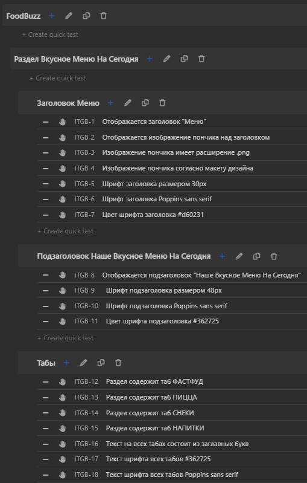

Geekbrains
Факультет тестирования ПО
Дипломная работа
специальности "Инженер по тестированию ПО"
Проскурин А.В.
Белгород
2023
Дипломный проект “Автоматизация тестирования UI с использованием Selenium”
В этой главе попробуем понять что же такое тестирование.
Посмотрим, что нам об этом пишет wikipeia:
Тестирование программного обеспечения — процесс исследования, испытания программного продукта, имеющий своей целью проверку соответствия между реальным поведением программы и её ожидаемым поведением на конечном наборе тестов, выбранных определённым образом.
Вот еще одна цитата из другого ресурса:
Тестирование ПО — это процесс проверки программного обеспечения на соответствие определенным требованиям, ожиданиям и стандартам. Основная цель тестирования заключается в обнаружении дефектов, ошибок и недостатков в программном продукте, а также убеждении в том, что ПО работает в соответствии с его задачами и требованиями.
Из этого выходит, что основная цель тестирования - это поиск ошибок, непредсказуемого поведения, соответствие стандартам у ПО. Итак мы узнали, что тестирование - это поиск дефектов (багов). Как же эти баги находятся?
Как найти дефекты:
Не стоит также отбрасывать здравый смысл. Если система по всем требования работает правильно, но очень не логично для пользователя, то вероятно нужно описать этот момент.
Цитата из wikipedia:
Тестировщик (Испытатель) — специалист, принимающий участие в тестировании компонента или системы.[1] В его обязанность входит поиск вероятных ошибок и сбоев в функционировании объекта тестирования (продукта, программы). Тестировщик моделирует различные ситуации, которые могут возникнуть в процессе использования предмета тестирования, чтобы разработчики смогли исправить обнаруженные ошибки.
Тестировщику важно быть внимательным и дотошным, пригодится и хорошее структурное мышление. Также полезно разбираться в бизнес-процессах и досконально знать продукт, чтобы сохранять баланс между интересами пользователей, целями менеджмента компании и возможностями команды разработки.
Примерная структура работы тестировщика:
Источник: testengineer.ru
Чтобы понять на сколько вы поняли основы теории тестирования, выполните задание и передайте результат его выполнения коллегам, друзьям или студентам на курсе, на котором вы проходите обучение.
заполненная водой температурой (20±5)°С бутылка должна выдерживать не менее двух падений с высоты 0.8 м на металлическую или бетонную поверхности. При двукратном сбрасывании на бутылке не должно наблюдаться механических повреждений, приводящих к потере герметичности.
Ознакомьтесь с представленными ниже предметами и их свойствами. Описание предметов на естественном языке является его спецификацией (или требованиями к предмету). Предполагается, что как минимум один из объектов есть в том помещении, в котором вы проходите курс.
Представьте описание тестирования в следующем виде:
Название объекта, выбранного для тестирования: __
Описание процесса тестирования и (по возможности) его результатов. Если выполнение теста невозможно - укажите это в документе: __
Передайте полученное описание тестов для оценивания коллегам и оцените работы ваших коллег по критериям, перечисленным ниже.
Существует много различных классификаций тестирования и каждый автор обладает своим мнением по классификации тестирования. Поэтому когда вас спрашивают о той или иной классификации тестирования необходимо уточнять согласно какому источнику.
Первый способ классификации, который мы рассмотрим, это классификация по объекту тестирования. Согласно такому способу тестирование может быть:
Теперь посмотрим на то, какие виды тестирования могут возникать на пересечении или быть подвидами ранее рассмотренных нами типов.
Тестирование производительности может быть:
На пересечении конфигурационного и UI тестирования может возникнуть тестирование совместимости, направленное на проверку того, что интерфейс корректно работает при различных конфигурациях ПО и платформ (например, разработчики ПО часто самостоятельно решают, насколько одинаково будет выглядеть создаваемый продукт в различных версиях операционных систем).
Также в рамках UI тестирования иногда отдельно проводят:
На срезе UI тестирования и Security/Compliance тестирования проводят тестирование локализации, к которому относится проверка того, что все внешние и внутренние компоненты системы корректно переведены, надписи помещаются в кнопках, а кнопки находятся на своих местах.
Функциональное тестирование можно разделять в зависимости от степени изолированности компонентов следующим образом:
Чаще всего процесс тестирования выстраивается снизу-вверх по представленному выше списку. Сначала тестируются функции, затем классы, затем классы, объединенные в компоненты, затем компоненты, объединенные в продукт.
Тестирование продукта целиком или групп модулей иногда называют системным, «сквозным» или end-to-end тестированием. Система проверяется сценариями, действие которых проходит через весь компонент или всю систему, например, начинается и заканчивается где-то в пользовательском интерфейсе и никаких проверок «внутри» системы не выполняется.
Тестирование продукта, модулей и классов может быть интеграционным – в том случае, когда проверяется интеграция модулей в продукт, классов в модули, а функций в классы.
Тестирование модулей, классов и функций может быть unit или модульным тестированием – проверкой на работоспособность некоторой условной «единицы». Важно отметить, что тестирование отдельного компонента или модуля unit-тестированием называется редко. Модуль состоит из большого количества компонент и крайне сложно воспринимать его как отдельную единицу. Однако существует определенный класс тестов, которые достаточно просты, но проверяют функциональность целого модуля. Такие тесты формально могут называться unit-тестами.
Unit-тестирование – это часто первый уровень тестирования, который выполняется самими разработчиками, которые пишут во многих случаях автоматизированные тесты, выполняемые при каждом действии по созданию/изменению кода. При создании unit-тестов часто используются дополнительные фреймворки, «заглушки», вспомогательные драйверы и фейковые (mock) объекты. Заглушки необходимы для того, чтобы изолировать тестируемый объект. Если тестируемый класс или метод зависит от поведения сторонних классов или методов, то в рамках unit-тестирования мы можем отказаться от развертывания всей необходимой инфраструктуры и вместо этого использовать заглушки с предопределенным поведением. Например, если тестируется коннектор к базе данных, то в рамках unit тестирования можно не подключаться к реальной базе, а создать объектзаглушку, которая отвечает от имени базы предопределенными ответами.
Интеграционное тестирование предполагает проверку нескольких компонент, объединенных друг с другом. Основная задача такого тестирования – выявление ошибок во взаимодействии: протоколах, обмене данными, несоответствии методов и вызовов. В этом типе тестирования также используются заглушки.
При системном тестировании проверяются сложные сценарии: например, при нажатии кнопки пользователем данные проходят через всю систему, попадают в базу, распределяются, выполняется обработка данных, пользователю демонстрируется результат.
При end-to-end или сквозном тестировании проверяется вся собранная система, а также взаимосвязанные системы, через которые проходят принимаемые и отправляемые данные.
Поговорим теперь о видах тестирования по знаниям о продукте:
Чтобы понять на сколько вы поняли основы классификации тестирования, выполните задание и передайте результат его выполнения коллегам, друзьям или студентам на курсе, на котором вы проходите обучение.
Свойства объекта тестирования:
компоненты ручки: стержень с чернилами, колпачок откручивающийся, колпачок, защищающий ручку от высыхания, корпус;
ожидаемый срок службы: не менее 3 месяцев с момента первого открытия колпачка.
Ознакомьтесь с типами предлагаемых тестов.
модульные тесты;
тесты на производительность.
Проведите тестирование предлагаемого объекта или любой из ее компонент на основе 2-3 типов тестов, которые вы можете выбрать сами.
Представьте результаты тестирования для каждого из тестов в следующем виде:
Название объекта, выбранного для тестирования: __
Идентификатор теста: __
Тип тестирования: __
Последовательность выполняемых действий при тестировании:
Актуальный результат: ___
Ожидаемый результат: ___
Понятно ли описание результатов тестирования (результаты изложены понятным языком, формулировки не подразумевают двояких трактовок)? (Да – 1 балл /Нет – 0 баллов)
Воспроизводимо ли описание результатов тестирования? (Да – 1 балл /Нет – 0 баллов)
Соответствуют ли тесты представленным требованиям к выбранному объекту? (Да – 1 балл /Нет – 0 баллов)
Позволяет ли описание тестов сделать вывод о корректности свойств и функционирования предмета тестирования? (Да – 1 балл /Нет – 0 баллов)
Присутствует ли в тесте описание ожидаемого и актуального результата? (Да – 1 балл /Нет – 0 баллов)
Присутствует ли в идентификатор теста в результатах тестирования? (Да – 1 балл /Нет – 0 баллов)
Соответствуют ли приведенные тесты выбранным типам тестирования? (Да – 1 балл /Нет – 0 баллов)
Рассмотрим основную тестовую документацию:
Тестировщику приходится работать с огромным количеством информации, выбирать из множества вариантов решения задач и изобретать новые. В процессе этой деятельности объективно невозможно удержать в голове все мысли, а потому продумывание и разработку тест-кейсов рекомендуется выполнять с использованием «чек-листов».
Чек-лист - это список проверок, который может обладать низкой детализацией и зачастую понятен для глубоко погруженных в проект специалистов и трудно воспринимаем новыми сотрудниками.
Святослав Куликов дает такое понятие чек-листа:
Чек-лист (checklist) — набор идей [тест-кейсов]. Последнее слово не зря взято в скобки, т.к. в общем случае чек-лист — это просто набор идей: идей по тестированию, идей по разработке, идей по планированию и управлению — любых идей.
Чек-лист обычно представляет из себя хорошо известный всем список.
Так может выглядеть многоуровневый несвязный чек-лист:

Тест-кейс (test case) — набор входных данных, условий выполнения и ожидаемых результатов, разработанный с целью проверки того или иного свойства или поведения программного средства. Под тест-кейсом также может пониматься соответствующий документ, представляющий формальную запись тест-кейса.
Тест-кейс содержит обязательные атрибуты:
Обязательные атрибуты чаще всего дополняются следующими атрибутами:
О том как правильно писать тест-кейсы и чек-листы, какие свойства качественной тестовой документации хорошо написано в книге «Тестирование программного обеспечения. Базовый курс.».
Правильный технический язык, точность и единообразие формулировок.
- пишите лаконично, но понятно;
- используйте безличную форму глаголов (например, «открыть» вместо «откройте»);
- обязательно указывайте точные имена и технически верные названия элементов приложения;
- не объясняйте базовые принципы работы с компьютером (предполагается, что ваши коллеги знают, что такое, например, «пункт меню» и как с ним работать);
- везде называйте одни и те же вещи одинаково (например, нельзя в одном тест-кейсе некий режим работы приложения назвать «графическое представление», а в другом тот же режим — «визуальное отображение», т.к. многие люди могут подумать, что речь идёт о разных вещах);
- следуйте принятому на проекте стандарту оформления и написания тесткейсов (иногда такие стандарты могут быть весьма жёсткими: вплоть до регламентации того, названия каких элементов должны быть приведены в двойных кавычках, а каких — в одинарных).
«Тестирование программного обеспечения. Базовый курс.»
Баланс между специфичностью и общностью.
Почему плоха излишняя специфичность (тест-кейс 1):
- при повторных выполнениях тест-кейса всегда будут выполняться строго одни и те же действия со строго одними и теми же данными, что снижает вероятность обнаружения ошибки;
- возрастает время написания, доработки и даже просто прочтения тест-кейса;
- в случае выполнения тривиальных действий опытные специалисты тратят дополнительные мыслительные ресурсы в попытках понять, что же они упустили из виду, т.к. они привыкли, что так описываются только самые сложные и неочевидные ситуации.
Почему плоха излишняя общность (тест-кейс 2):
- тест-кейс сложен для выполнения начинающими тестировщиками или даже опытными специалистами, лишь недавно подключившимися к проекту;
- недобросовестные сотрудники склонны халатно относиться к таким тест-кейсам;
- тестировщик, выполняющий тест-кейс, может понять его иначе, чем было задумано автором (и в итоге будет выполнен фактически совсем другой тесткейс).
«Тестирование программного обеспечения. Базовый курс.»
Баланс между простотой и сложностью.
Преимущества простых тест-кейсов:
- их можно быстро прочесть, легко понять и выполнить;
- они понятны начинающим тестировщикам и новым людям на проекте;
- они делают наличие ошибки очевидным (как правило, в них предполагается выполнение повседневных тривиальных действий, проблемы с которыми видны невооружённым взглядом и не вызывают дискуссий);
- они упрощают начальную диагностику ошибки, т.к. сужают круг поиска.
Преимущества сложных тест-кейсов:
- при взаимодействии многих объектов повышается вероятность возникновения ошибки;
- пользователи, как правило, используют сложные сценарии, а потому сложные тесты более полноценно эмулируют работу пользователей;
- программисты редко проверяют такие сложные случаи (и они совершенно не обязаны это делать).
«Тестирование программного обеспечения. Базовый курс.»
«Показательность» (высокая вероятность обнаружения ошибки). Начиная с уровня тестирования критического пути , можно утверждать, что тест-кейс является тем более хорошим, чем он более показателен (с большей вероятностью обнаруживает ошибку). Именно поэтому мы считаем непригодными слишком простые тест-кейсы — они непоказательны.
«Тестирование программного обеспечения. Базовый курс.»
Последовательность в достижении цели. Суть этого свойства выражается в том, что все действия в тест-кейсе направлены на следование единой логике и достижение единой цели и не содержат никаких отклонений.
«Тестирование программного обеспечения. Базовый курс.»
Отсутствие лишних действий. Чаще всего это свойство подразумевает, что не нужно в шагах тест-кейса долго и по пунктам расписывать то, что можно заменить одной фразой.
Регрессионное тестирование (regression testing) — тестирование уже проверенной функциональности после внесения изменений в код приложения для уверенности, что эти изменения не внесли или не активизировали ошибки в областях, которые не подвергались изменениям.
Ре-тест или подтверждающее тестирование (re-test, acceptance testing) — проводится в случае, если фича/функциональность уже имела дефекты, и эти дефекты были недавно исправлены.
Подробнее о таких видах тестирования как "дымовое", «санитарное тестирование», «ре-тест» и регрессионное тестирование можно прочитать в статье В чём разница Smoke, Sanity, Regression, Re-test и как их различать?
Существует несколько методов разработки тестов, которые обычно используются инженерами по обеспечению качества. Наиболее распространенные из них:
Эти методы можно использовать по отдельности или в сочетании для разработки эффективных тестовых сценариев, обеспечивающих хорошее тестовое покрытие и помогающих выявлять дефекты на ранних этапах жизненного цикла разработки программного обеспечения.
Приведем примеры использования различных техник тест-дизайна для разных объектов тестирования и ситуаций.
Предположим, что в кинотеатре есть возрастной фильтр для фильмов, который разрешает смотреть фильмы только людям старше 18 лет с рейтингом R. Возрастной фильтр реализован в виде текстового поля, в которое пользователи могут ввести свой возраст. Технику эквивалентного разбиения можно использовать для получения тестовых примеров для этого возрастного фильтра следующим образом:
Невалидные тестовые случаи: -1, 0, 17, 121, 200.
Тестирование каждого тестового примера, чтобы убедиться, что фильтр работает правильно.
Используя технику эквивалентного разбиения, мы создали набор тестовых случаев, которые охватывают входные данные и обеспечивают хорошее тестовое покрытие для возрастного фильтра. Это гарантирует правильную работу возрастного фильтра и не позволяет пользователям младше 18 или старше 120 лет смотреть фильмы с рейтингом R.
Предположим, что форма заявления о приеме на работу требует, чтобы соискатели указали свой многолетний опыт работы в соответствующей области. Форма имеет правило проверки, которое требует, чтобы соискатели имели опыт работы не менее 3 лет. Технику анализа граничных значений можно использовать для получения тестовых примеров для этого поля следующим образом:
Используя анализ граничных значений, мы создали набор тест-кейсов, которые охватывают граничные значения и обеспечивают хорошее тестовое покрытие для поля. Это гарантирует, что форма заявки работает правильно, и не позволяет кандидатам, не отвечающим минимальным требованиям, подавать заявки на работу.
Предположим, что веб-сайт позволяет пользователям покупать билеты на самолет. На веб-сайте представлены различные варианты ценообразования в зависимости от таких факторов, как дата поездки, класс поездки и возраст пассажира. Технику тестирования таблицы решений можно использовать для получения тестовых примеров для различных вариантов ценообразования следующим образом:
Действие 4: Цена D
Создание таблицы решений, в которой перечислены все возможные комбинации входных условий и соответствующих им действия.
| Условие 1 | Условие 2 | Условие 3 | Действие |
|---|---|---|---|
| Дата A | Класс A | Возраст A | Цена A |
| Дата A | Класс A | Возраст B | Цена B |
| Дата A | Класс B | Возраст A | Цена C |
| Дата A | Класс B | Возраст B | Цена D |
| Дата B | Класс A | Возраст A | Цена B |
| Дата B | Класс A | Возраст B | Цена C |
| Дата B | Класс B | Возраст A | Цена D |
| Дата B | Класс B | Возраст B | Цена C |
Используя тестирование с помощью таблиц принятия решений, мы создали набор тестовых случаев, которые охватывают все возможные комбинации входных условий и соответствующих им действий. Это гарантирует, что веб-сайт работает правильно, и предоставляет пользователям точные варианты ценообразования в зависимости от их входных условий.
Предположим, что компания-разработчик программного обеспечения имеет систему сообщений об ошибках, которая позволяет пользователям сообщать об ошибках в программном обеспечении. Система сообщений об ошибках имеет различные состояния, такие как «Новый», «В процессе», «Решено» и «Закрыто». Технику на основе состояний и переходов можно использовать для получения тестовых случаев для системы сообщений об ошибках следующим образом:
Переход 3: Решено → Закрыто - когда тестировщик подтвердил, что сообщение об ошибке было исправлено.
Создание диаграммы, которая показывает различные состояния и переходы.
Новый -----> В процессе -----> Решено -----> Закрыто
Используя технику на основе состояний и переходов, мы создали набор тестовых случаев, которые охватывают все возможные переходы между различными состояниями системы отчетов об ошибках. Это гарантирует, что система работает правильно, а отчеты об ошибках обрабатываются должным образом по мере того, как они перемещаются по различным состояниям.
Предположим, что на веб-сайте есть поисковая форма. Допускаются к вводу символы на латинице, кириллице и цифры. Разрешенные способы ввода: клавиатура и буфер обмена. Можно активировать и деактивировать чекбокс точного поиска. Длина поисковой строки ограничена 256 символами [1, 256].
Технику попарного тестирования можно использовать для получения тест-кейсов для этой веб-формы следующим образом:
| Тип данных | Способ ввода | Чекбокс | Длина |
|---|---|---|---|
| кириллица | клавиатура | активирован | 1-256 |
| кириллица | клавиатура | не активирован | 1-256 |
| кириллица | буфер обмена | активирован | 1-256 |
| кириллица | буфер обмена | не активирован | 1-256 |
| латиница | клавиатура | активирован | 1-256 |
| латиница | клавиатура | не активирован | 1-256 |
| латиница | буфер обмена | активирован | 1-256 |
| латиница | буфер обмена | не активирован | 1-256 |
| цифры | клавиатура | активирован | 1-256 |
| цифры | клавиатура | не активирован | 1-256 |
| цифры | буфер обмена | активирован | 1-256 |
| цифры | буфер обмена | не активирован | 1-256 |
Эту таблицу можно дополнить следующими проверками, которые добавляют негативные тест-кейсы:
| Тип данных | Способ ввода | Чекбокс | Длина |
|---|---|---|---|
| кириллица | рисование | не активирован | 1-256 |
| латиница | голос | активирован | 1-256 |
| спец символы | буфер обмена | не активирован | 1-256 |
| пробелы | клавиатура | активирован | 1-256 |
| пустое поле | |||
| кириллица | буфер обмена | не активирован | 256< |
С помощью техники попарного тестирования мы создали набор тест-кейсов, которые охватывают все возможные комбинации значений параметров в поисковом поле. Это гарантирует, что поле поиска будет тщательно протестировано, а любые ошибки или проблемы будут выявлены и исправлены до запуска веб-сайта.
Предположим, что производитель карандашей хочет проверить долговечность своей новой конструкции карандашей. Технику исследовательского тестирования можно использовать для получения тестовых случаев для этого карандаша следующим образом:
Используя исследовательское тестирование, мы создали набор тестов, которые охватывают различные аспекты долговечности карандаша и позволяют нам делать наблюдения и записывать результаты в исследовательской манере. Это гарантирует, что карандаш будет тщательно протестирован, а любые недостатки или проблемы будут выявлены и устранены до того, как он будет выпущен на рынок.
Предположим, что компания-разработчик игр создала новую карточную игру для консоли и хочет провести приёмочное пользовательское тестирование, прежде чем выпустить ее на рынок. Технику пользовательского приемочного тестирования можно использовать для получения тестовых примеров для консольной карточной игры следующим образом:
С помощью пользовательского приёмочного тестирования мы создали набор тестов, которые охватывают различные функции карточной игры и позволяют нам собирать отзывы реальных пользователей. Это гарантирует, что карточная игра соответствует ожиданиям пользователей и тщательно тестируется перед выпуском на рынок.
UI тестирование, также известное как тестирование пользовательского интерфейса, представляет собой тип тестирования программного обеспечения, которое фокусируется на графическом пользовательском интерфейсе приложения. Тестирование пользовательского интерфейса полезно для обеспечения того, чтобы интерфейс приложения работал должным образом, а также чтобы им было легко пользоваться и ориентироваться.
Тестирование пользовательского интерфейса важно для выявления проблем с пользовательским интерфейсом, таких как неработающие ссылки, неправильное форматирование или некорректное поведение при взаимодействии с интерфейсом. Оно также может помочь убедиться в том, что приложение соответствует ожиданиям пользователя и является удобным для использования.
Тестирование пользовательского интерфейса может быть полезно для множества различных приложений, таких как веб-приложения, мобильные приложения и настольные приложения. Его можно использовать для тестирования широкого спектра элементов пользовательского интерфейса, включая кнопки, меню, формы и другие интерактивные элементы.
Функциональное тестирование. Этот тип тестирования гарантирует, что компоненты пользовательского интерфейса, такие как кнопки и формы, работают должным образом. Например, если пользователь нажимает кнопку, UI должен выполнить ожидаемое действие.
Юзабилити-тестирование. Этот тип тестирования гарантирует, что пользовательский интерфейс прост в использовании и навигации. Например, проверяется подходящий размер шрифта и визуально привлекательная цветовая схема.
Тестирование производительности. Этот тип тестирования гарантирует, что пользовательский интерфейс отзывчив и хорошо работает в различных условиях. Например, проверяется насколько быстро загружается интерфейс и как он работает при одновременном доступе к нему нескольких пользователей.
Тестирование совместимости. Этот тип тестирования гарантирует, что пользовательский интерфейс хорошо работает на различных устройствах и платформах. Например, проверяется правильность отображения приложения на экранах разных размеров и разрешений.
Тестирование доступности. Этот тип тестирования гарантирует, что пользовательский интерфейс доступен для пользователей с ограниченными возможностями. Например, он проверяет, можно ли использовать приложение с программой чтения с экрана и что используемые цвета доступны пользователям с цветовой слепотой.
Это всего лишь несколько примеров типов тестирования пользовательского интерфейса, которые можно выполнить, чтобы убедиться, что пользовательский интерфейс приложения работает должным образом.
Чтобы тестировщик лучше понимал, из чего состоят и как устроены современные веб-страницы, будет крайне полезно иметь хотя бы базовое представление о HTML, CSS, JavaScript. Эти знания также помогут локализовывать ошибки, связанные с конкретными элементами на странице, быстро находить их и при необходимости менять на клиентской стороне.
Также важно уметь использовать консоль разработчика в браузере (как минимум работать с элементами на странице и сетевыми запросами).
HTML (Hypertext Markup Language) - это код, который используется для структурирования и отображения вебстраницы и её контента. Например, контент (какой-то текст) может быть представлен в виде множества параграфов, маркированных списков или с использованием изображений и таблиц данных.
Тут будет краткое знакомство с разметкой, так как цель этого руководства только познакомить с ней. Более подробно уже надо будет смотреть документацию, читать статьи от специалистов в этой теме.
HTML-элементы — основа языка HTML. Каждый HTML-документ состоит из дерева HTML-элементов и текста. Каждый HTML-элемент обозначается начальным (открывающим) и конечным (закрывающим) тегом. Открывающий и закрывающий теги содержат имя элемента.
Все HTML-элементы делятся на пять типов:
<area>, <base>, <br>, <col>, <embed>, <hr>, <img>, <input>, <link>, <menuitem>, <meta>, <param>, <source>, <track>, <wbr>;<script>, <style>;<textarea>, <title>;<p>text</p>, <b>text</b> и т.д.).<p>Это параграф</p>
<img src="../img/html_element.png" alt="Альтернативный текст">
p), заключённого в
открывающие и закрывающие угловые скобки. Открывающий тег указывает, где элемент начинается
или начинает действовать, в данном случае — где начинается абзац.<a href="https://yandex.ru">Яндекс</a>
У тегов могут быть какие-либо свойства. Например, у ссылки есть атрибут href со значением https://yandex.ru в кавычках.
Вы также можете располагать элементы внутри других элементов — это называется вложением. Если мы хотим заявить, что наша кошка очень раздражена, мы можем заключить слово "очень" в элемент <strong> , который указывает, что слово должно быть сильно акцентированно:
<p>Это слово выделено<strong>жирным</strong> шрифтом</p>
Будет выглядеть в браузере так:
Это слово выделено жирным шрифтом
Некоторые элементы не имеют контента, и называются пустыми элементами.
<img src="https://i.gifer.com/2GU.gif" alt="Моё тестовое изображение">
Он содержит два атрибута, но не имеет закрывающего тега </img>, и никакого внутреннего контента. Это потому, что элемент изображения не оборачивает контент для влияния на него. Его целью является вставка изображения в HTML страницу в нужном месте.
Мы завершили изучение основ отдельных HTML элементов, но они не очень полезны сами по себе. Теперь посмотрим, как отдельные элементы объединяются в целую HTML страницу.
Давайте откроем текстовый файл demo-1.html:
<!DOCTYPE html>
<html>
<head>
<meta charset="utf-8">
<title>Моя тестовая страница</title>
</head>
<body>
<img src="https://loremflickr.com/600/600" alt="Моё тестовое изображение">
</body>
</html>
Здесь мы имеем:
!DOCTYPE html — доктайп. В прошлом, когда HTML был молод (около 1991/1992), доктайпы должны были выступать в качестве ссылки на набор правил, которым HTML страница должна была следовать, чтобы считаться хорошим HTML, что могло означать автоматическую проверку ошибок и другие полезные вещи. Однако в наши дни, никто не заботится об этом, и они на самом деле просто исторический артефакт, который должен быть включён для того, что бы все работало правильно. На данный момент это все, что вам нужно знать.html — Этот элемент оборачивает весь контент на всей странице, и иногда известен как корневой элемент.head — Этот элемент выступает в качестве контейнера для всего, что вы пожелаете включить на HTML страницу, но не являющегося контентом, который вы показываете пользователям вашей страницы. К ним относятся такие вещи, как ключевые слова и описание страницы, которые будут появляться в результатах поиска, CSS стили нашего контента, кодировка и многое другое.body — В нем содержится весь контент, который вы хотите показывать пользователям, когда они посещают вашу страницу, будь то текст, изображения, видео, игры, проигрываемые аудиодорожки или что-то ещё.meta charset="utf-8" — этот элемент устанавливает UTF-8 кодировку вашего документа, которая включает в себя большинство символов из всех известных человечеству языков. По сути, теперь документ может обрабатывать любой текстовый контент, который вы в него вложите. Нет причин не устанавливать её, так как это может помочь избежать некоторых проблем в дальнейшем.title — Этот элемент устанавливает заголовок для вашей страницы, который является названием, появляющимся на вкладке браузера загружаемой страницы, и используется для описания страницы, когда вы добавляете её в закладки/избранное.Можно открыть документ demo-1.html в браузере и посмотреть, как он выглядит.
Давайте снова обратим наше внимание на элемент изображения:
<img src="https://loremflickr.com/600/600" alt="Моё тестовое изображение">
Как было сказано раньше, код встраивает изображение на нашу страницу в нужном месте. Это делается с
помощью атрибута src (source, источник), который содержит путь к нашему файлу изображения. Путь может
быть указан ссылкой на любую картинку из Интернета как в нашем случае или связывать файл, находящийся
на вашем диске.
Мы также включили атрибут alt (alternative, альтернатива). В этом атрибуте, вы указываете поясняющий текст
для пользователей, которые не могут увидеть изображение, возможно, по следующим причинам:
Альтернативный текст - это "пояснительный текст". Он должен предоставить читателю достаточно информации, чтобы иметь представление о том, что передаёт изображение. В этом примере наш текст "Моё тестовое изображение" не годится. Намного лучшей альтернативой для нашей картинки будет "gif with a cat".
Элементы заголовка позволяют указывать определённые части контента в качестве заголовков или
подзаголовков. Точно так же, как книга имеет название, названия глав и подзаголовков, HTML документ
может содержать то же самое. HTML включает шесть уровней заголовков: h1, h2, h3...
<h1>Мой главный заголовок</h1>
<h2>Мой заголовок верхнего уровня</h2>
<h3>Мой подзаголовок</h3>
<h4>Мой под-подзаголовок</h4>
Как было сказано ранее, элемент p предназначен для абзацев текста; вы будете использовать их регулярно при разметке текстового контента:
<p>Это одиночный абзац</p>
Большая часть веб-контента является списками и HTML имеет специальные элементы для них. Разметка списка всегда состоит по меньшей мере из двух элементов. Наиболее распространёнными типами списков являются нумерованные и ненумерованные списки:
ul.ol.Каждый пункт внутри списков располагается внутри элемента li (list item, элемент списка).
Например, если мы хотим включить часть следующего фрагмента абзаца в список:
<p>Купить в магазине:</p>
<ul>
<li>Чай</li>
<li>Кофе</li>
<li>Сахар</li>
</ul>
<p>Занести домой.</p>
Ссылки очень важны — это то, что делает Интернет Интернетом. Чтобы добавить ссылку, нам нужно
использовать простой элемент — a — a это сокращение от "anchor" ("якорь"). Чтобы текст в вашем абзаце
стал ссылкой, выполните следующие действия:
<a>Текст ссылки</a>
href, например так:<a href="">Текст ссылки</a>
<a href="https://yandex.ru">Текст ссылки</a>
Это была вводная краткая часть о html. В нём гораздо больше элементов, чем тут перечислено, это выйдет на целую книгу.
Дополнительно про HTML вы можете прочитать тут:
developer.mozilla.org html5css.ru html5book.ru
CSS (Cascading Style Sheets) — это код, который вы используете для стилизации вашей веб-страницы. Основы CSS помогут сделать текст черным или красным, поставить контент в определённом месте на экране, украсить веб-страницу с помощью фоновых изображений и цветов.
Как и HTML, CSS на самом деле не является языком программирования. Это не язык разметки - это язык таблицы стилей. Это означает, что он позволяет применять стили выборочно к элементам в документах HTML. Например, чтобы выбрать все элементы абзаца на HTML странице и изменить текст внутри них с чёрного на красный, необходимо написать этот CSS код:
p {
color: red;
}
Давайте вставим эти три строки CSS в новый файл в ваш текстовый редактор, а затем сохраним файл
как style.css в вашей папке styles (в ту же папку, где находится наша страница «первая HTML-страница.html»).
Но нам всё равно нужно применить CSS к нашему HTML документу. В противном случае, CSS стиль не повлияет на то, как ваш браузер отобразит HTML документ.
Сначала подготовьте проект для работы.
Создайте папку, например lesson-css.
В ней создайте файл demo-2.html и style.css.
В файл style.css поместите и сохраните следующее:
p {
color: red;
}
Откройте demo-2.html в любом текстовом редакторе и вставьте следующую строку куда-нибудь в шапку, между head тегами:
<link href="style.css" rel="stylesheet" type="text/css">
Сохраните demo-2.html и загрузите его в вашем браузере.
Если текст вашего абзаца теперь красный, примите наши поздравления! Вы написали свой первый успешный CSS!
Давайте взглянем на вышеупомянутый CSS немного более подробно:
p {
color: red;
}
Вся структура называется набором правил (но зачастую для краткости "правило"). Отметим также имена отдельных частей:
Селектор (Selector)
Имя HTML-элемента в начале набора правил. Он выбирает элемент(ы) для применения стиля (в данном
случае, элементы p). Для стилизации другого элемента, просто измените селектор.
Объявление (Declaration)
Единственное правило, например color: red; указывает, какие из свойств элемента вы хотите стилизовать.
Свойства (Properties)
Способы, которыми вы можете стилизовать определённый HTML-элемент (в данном случае, color является
свойством для элементов p). В CSS вы выбираете, какие свойства вы хотите затронуть в вашем правиле.
Значение свойства (Property value)
Справа от свойства, после двоеточия, у нас есть значение свойства, которое выбирает одно из множества возможных признаков для данного свойства (существует множество значений color, помимо red)
Обратите внимание на важные части синтаксиса:
{}.:, чтобы отделить свойство от его
значений.;, чтобы отделить каждое
объявление от следующего.Таким образом, чтобы изменить несколько значений свойств сразу, вам просто нужно написать их, разделяя точкой с запятой, например так:
p {
color: red;
width: 500px;
border: 1px solid black;
}
Вы также можете выбрать несколько элементов разного типа и применить единый набор правил для всех из них. Добавьте несколько селекторов, разделённых запятыми. Например:
p,li,h1 {
color: red;
}
Существует множество различных типов селектора. Выше мы рассматривали только селектор элементов, который выбирает все элементы определённого типа в HTML документе. Но мы можем сделать выбор более конкретным. Вот некоторые из наиболее распространённых типов селекторов:
| Имя селектора | Что выбирает | Пример |
|---|---|---|
| Селектор элемента (иногда называемый селектором тега или типа) | Все HTML-элемент(ы) указанного типа. | p Выбирает <p> |
| ID селектор | Элемент на странице с указанным ID на данной HTML. Лучше всего использовать один элемент для каждого ID (и конечно один ID для каждого элемента), даже если вам разрешено использовать один и тот же ID для нескольких элементов. | #my-id Выбирает <p id="my-id"> или <a id="my-id"> |
| Селектор класса | Элемент(ы) на странице с указанным классом (множество экземпляров класса может объявляться на странице). | .my-class Выбирает <p class="myclass"> и <a class="my-class"> |
| Селектор атрибута | Элемент(ы) на странице с указанным атрибутом. | img[src] Выбирает <img src="myimage.png"> но не <img> |
| Селектор псевдокласса | Указанные элемент(ы), но только в случае определённого состояния, например, при наведении курсора. | a:hover Выбирает <a>, но только тогда, когда указатель мыши наведён на ссылку. |
Существует ещё много селекторов для изучения. В Интернете можно найти описание для каждого из них.
Теперь, когда мы изучили некоторые основы CSS, давайте добавим ещё несколько правил и информацию в
наш файл style.css, чтобы наш пример хорошо выглядел. Прежде всего, давайте сделаем, чтобы наши шрифты
и текст выглядели немного лучше.
<link> где-нибудь внутри шапки
вашего index.html (снова, в любом месте между тегами <head> и </head>). Это будет выглядеть примерно
так:
<link href="https://fonts.googleapis.com/css2?family=Roboto&display=swap" rel="stylesheet" type='text/css'>
Этот код связывает вашу страницу с таблицей стилями, которая загружает семейство шрифтов Roboto вместе с вашей страницей и позволяет вам применять их к вашим HTML-элементам используя свою собственную таблицу стилей.
style.css файле. Это был хороший тест, но красный
текст, на самом деле, не очень хорошо выглядит.<html> является родительским элементом для всей
страницы, и все элементы внутри него наследуют такой же font-size и font-family):html {
font-size: 25px; /* px значит 'пиксели': базовый шрифт будет 10 пикселей в
высоту */
font-family: "Open Sans", sans-serif;
}
/* и */ является CSS комментарием, который браузер
игнорирует при исполнении кода. Это место, где вы можете написать полезные заметки о том, что вы
делаете.В demo-2.html содержится рабочий пример.
Одна вещь, которую вы заметите в написании CSS, заключается в том, что многое из этого касается блоков - настройка их размера, цвета, положения и т.д. Большинство HTML-элементов на странице можно рассматривать как блоки, расположенные друг над другом.
Не удивительно, макет CSS основан, главным образом, на блочной модели (box model). Каждый из блоков, занимающий пространство на вашей странице имеет такие свойства, как:
У CSS очень обширные возможности по их оформлению. Плюс что-то устаревает, что-то добавляется новое. Тут было затронуто лишь вводное знакомство с стилями.
Дополнительно про CSS вы можете прочитать тут:
developer.mozilla.org html5css.ru html5book
Чтобы добавлять js-программки (скрипты) на html-страницу, необходим тег <script>.
<!DOCTYPE html>
<html>
<head>
<meta charset="utf-8">
</head>
<body>
<p>Это обычный HTML документ</p>
<script language="JavaScript">
alert ("Привет, мир!");
</script>
<p>Выходим обратно в HTML</p>
</body>
</html>
Браузер читает HTML-документ сверху вниз, и начинает отображать страницу, показывая часть документа до
тега <script>. Встретив тег <script>, переключается в JavaScript-режим и выполняет сценарий. В нашем коде он
встречает оператор alert и понимает, что нужно вывести на экран все то, что заключено в кавычки.
Как только браузер закончил выполнение, он возвращается обратно в HTML-режим и отображает оставшуюся
часть документа.
Если JavaScript-кода много, его выносят в отдельный файл, который, как правило, имеет расширение *.js.
Чтобы JavaScript-кoд включить в HTML-документ из внешнего файла, нужно использовать атрибут src (source)
тега <script>. Его значением должен быть URL-aдpec файла, в котором содержится JS-код:
<script src="/scripts/script.js"></script>
В этом примере указан путь к файлу с именем script.js, который содержит скрипт. Принцип указания пути
аналогичен тому случаю, когда мы вставляли картинки в html-документ с помощью тега <img>. При этом файл
script.js должен содержать только JavaScript-кoд, который в другом бы случае располагался бы между
тегами <script> и </script>.
Значение в JavaScript всегда относится к данным определённого типа. Например, это может быть строка или
число. В JavaScript имеются следующие примитивные типы данных: number, boolean, string, undefined, null.
Переменная в JavaScript может содержать любые данные. Там может быть строка вначале, а далее, например – число:
// Это не ошибка
let message = "string";
message = 1234;
Языки программирования, в которых так можно, называются «динамически типизированными». Это значит, что типы данных есть, но переменные не привязаны ни к одному из них.
let n = 321;
n = 54.321;
В этой конструкции let – зарезервированное слово, которое аналогично математическому: «Пусть n = 123».
Вместо let еще можно встретить var.
Числовой тип данных (number) представляет как целочисленные значения, так и числа с плавающей точкой
(для представления дробей). С числами можно осуществлять арифметические операции, например,
умножение *, деление /, сложение +, вычитание - и так далее.
Кроме обычных чисел, в js существуют спецефические числовые значения: Infinity и NaN. Они относятся к
типу «число». Конечно, это не числа в привычном значении этого слова.
Infinity представляет собой математическую бесконечность ∞.Это особое значение, которое больше любого числа.
Мы можем получить его в результате деления на ноль:
alert( 5 / 0 ); // Infinity
Или задать его явно:
alert( Infinity ); // Infinity
NaN (Not a Number) означает вычислительную ошибку.
Это результат неправильной или неопределённой математической операции, например:
alert( "не число" / 4 ); // NaN, такое деление является ошибкой
Значение NaN «прилипчиво». Любая операция с NaN возвращает NaN:
alert( "не число" / 4 + 5 ); // NaN
Если в математическом выражении присутствует переменная с типом NaN, то результатом вычислений также
будет NaN. Это не сложно понять, например, делишь «не число» на число, результатом будет «не число».
Помните, мы говорили о том, что JS не считался серьезным языком? Именно потому, что математические операции в JavaScript «безопасны». Можно делить на нуль, вычислять невычисляемые выражения и от этого ничего не перестанет работать.
Строка (string) в JavaScript заключается в кавычки.
let str = "Это строка";
В JavaScript можно встретить три типа кавычек:
Между двойными и одинарными кавычками для JS разницы не существует. Обратные же кавычки имеют
расширенную функциональность. Они позволяют нам встраивать выражения в строку, заключая их в ${…}.
Например:
let name = "Student";
// Вставим переменную
alert( `Привет, ${name}!` ); // Привет, Саша!
// Вставим выражение
alert( `результат: ${2 + 2}` ); // результат: 4
Выражение внутри ${…} вычисляется, и его результат становится частью строки. Мы можем положить туда всё,
что угодно: переменную name, или выражение 2 + 2, или что-то более сложное.
Все данные, которые мы вводим с клавиатуры по умолчанию для JS принадлежат строковому типу.
Булевый тип boolean принимает только два значения: истина true и ложь false.
Такой тип, как правило, используется для хранения значений да/нет – true/false. Можно провести двоичную
аналогию 1 и 0.
Например:
let name = true; // да, поле отмечено
let age = false; // нет, поле не отмечено
Булевые значения также могут быть результатом сравнений:
let compare = 5 > 2;
alert( compare ); // true (результатом сравнения будет "да")
Специальное значение null не относится ни к одному из типов, описанных выше.
Оно формирует отдельный тип, который содержит только значение null:
let age = null;
В JavaScript null – это просто специальное значение, которое представляет собой «ничего», «пусто» или
«значение неизвестно».
В приведённом выше коде указано, что значение переменной age неизвестно.
Специальное значение undefined также стоит особняком. Оно формирует тип из самого себя так же, как и null.
Оно означает, что «значение не было присвоено».
Если переменная объявлена, но ей не присвоено никакого значения, то её значением будет undefined:
let age;
alert(age); // выведет "undefined"
Познакомимся с несколькими функциями браузера для удобного ввода и вывода
данных: alert, prompt и confirm.
С этой функцией мы уже знакомы. Она показывает сообщение и ждёт, пока пользователь нажмёт кнопку «ОК». Например:
alert("Привет");
Небольшое окно с сообщением, вылезающее поверх остальных называется модальным окном. Пользователь не может взаимодействовать с интерфейсом остальной части страницы, нажимать на другие кнопки и т.д. до тех пор, пока взаимодействует этим с окном. В нашем случае – пока не будет нажата кнопка «Закрыть».
let test = prompt("Test");
Этот код отобразит модальное окно с текстом, полем для ввода текста и кнопками OK (Проложить)/Отмена.
Функция prompt принимает два аргумента.
Синтаксис:
result = prompt(title, [default]);
title - текст для отображения в окне.
default - необязательный второй параметр, который устанавливает начальное значение в поле для текста в окне.
Пользователь напечатает что-либо в поле ввода и нажмет «Продолжить». В нашем примере введённый текст
будет присвоен переменной result. Можно также отменить ввод нажатием на кнопку «Отмена» или нажав на
клавишу Esc. В этом случае result присвоится значение null.
Title лучше ставить всегда, чтобы пользователь понимал, какой ввод данных от него ожидается.
Синтаксис:
result = confirm(question);
Функция confirm отображает модальное окно с текстом вопроса question и двумя кнопками: Да и Нет.
Результат – true, если нажата кнопка Да. В других случаях – false.
Например:
let isConfirm = confirm("Подтвердить действие?");
alert( isConfirm ); // true, если нажата OK
Знание работы элементов взаимодействия с пользователем очень важно, для тестирования веб форм, работы с всплывающими подсказками и окнами.
Так же важно то как происходит загрузка JS скриптов на страницах сайтов и работа сайтов полностью реализованных на JavaScript, но об этом мы поговорим позже.
Javascript ещё более обширная тема, чем html & css и затронуты совсем крохи знаний. Дополнительно вы можете прочитать тут:
developer.mozilla.org learn.javascript.ru
Система контроля версий — это программное обеспечение, которое позволяет хранить историю изменений в любом документе или файле. Таким образом, вы можете легко просматривать и откатывать изменения, сделанные каким-либо участником проекта. Это очень полезно, когда необходимо восстановить старую версию документа или сравнить две разные версии файла. Кроме того, она позволяет отслеживать, кто и что изменил в документе или файле и помогает избежать конфликтов при одновременном редактировании одним и тем же файлом.
Система контроля версий Git является распределенной, она используется для отслеживания изменений в файлах и директориях проекта. Позволяет разработчикам контролировать и отслеживать изменения в проекте.
Чтобы работать с Git, необходимо инициализировать репозиторий в папке с проектом. После этого можно добавлять изменения в репозиторий, создавая различные версии проекта. Можно также просматривать историю изменений и откатываться к любой предыдущей версии. Также можно объединять работы различных разработчиков в один проект.
Скачать git можно с оффициального сайта разработчиков, выбрав свою ОС.
Для закомства с системой контроля версий рекоммендуется использовать среду разработки PyCharm.
Также нам понадобится аккаунт GitHub для размещения репозиториев.
git..gitignore. Правилом хорошего тона является добавление к репозиторию сопроводительной
документации README.md, написанного с использованием языка разметки Markdown, о которой мы поговорим позже.Открыть страницу своего профиля GitHub.
Нажать на таб "Repositories".
Нажать на кнопку "New".
Заполнить обязательные поля. Не забываем добавить README.md и .gitignore (Python).
Нажать кнопку "Create repository".
Открыть PyCharm.
Нажать "File", выбрать "New Project...".
Заполнить форму создания проекта. Обязательно указать виртуальное окружение и интерпретатор Python.
Нажать "Create".
Нажать "Terminal" в нижней панели PyCharm. Должно отображаться название созданного проекта в круглых скобках. Если отображается ошибка, иожно погуглить решение или переключиться на другой терминал. Если у вас не отображается ошибка можно пропустить следующие 2 шага.
Чтобы сменить терминал по умолчанию (powershell) на cmd нажать "File" -> "Settings" -> ввести в поле поиска " terminal" -> выбрать настройки терминала -> в выпадающем списке выбрать терминал cmd -> OK.
Если у вас не отображается терминал как на изображении в шаге 5 закройте PyCharm и откройте его заново.
Зайти на страницу GitHub своего репозитория -> Нажать на кнопку "Code" -> Скопировать HTTPS адрес репозитория.
Открыть таб "Terminal" в нижней панеле PyCarm -> Ввести команду:
git clone https://github.com/[your-username]/best-rep-of-the-world.git
Как видно, скопировался проект с удалённого репозитория внутрь локального. Склонировались .gitignore и README.md файлы, которые были внутри удалённого репозитория.
Работать будем в PyCharm. Использовать консольные команды не будем, разработчики постарались сделать интуитивно понятный интерфейс для работы с системой контроля версий, которым грех не воспользоваться. Но знать консольные команды необходимо, это пригодится в работе с ОС без графического интерфейса.
Отделим новую ветку от ветки main. Для этого переключимся на таб Git в нижней панели PyCharm -> ПКМ на main.
В выпадающем меню выбираем пункт "New Branch from 'main'...".
Вводим имя нашей новой ветки и нажимаем кнопку "Create".
Все изменения принято вносить в главную ветку через слияния второстепенных. К тому же этот механизм позволяет работать с репозиторием одновременно нескольким разработчикам. Убеждаемся, что мы действительно перешли на новую ветку: в правом нижнем углу PyCharm отображается текущая активная ветка, в панели Git, можно ввести консольную команду:
git branch
ПКМ по имени репозитория -> New -> Python File.
Я назвал свой новый файл python_program, вы можете назвать его как угодно. Но есть нюансы, с которыми будет лучше,
если вы сами столкнетесь. Далее IDE спросит добавить ли файл в отслеживаемые. Соглашаемся.
Обратите внимание, что файл сейчас выделяется зелёным цветом.
Это значит, что это новый контент, которые ещё не зафиксирован.
Перейдем во вкладку "Commit" в левом сайдбаре IDE -> Отметим изменение, которое мы хотим зафиксировать в чекбоксе -> нашишем адекватное сообщение о коммите (принято писать осмысленные сообщения на английском языке) -> Нажать кнопку " Commit".
Обратите внимание, что файл перестал выделяться зелёным цветом. Это заначит, что изменения сохранены.
Напишем классическую программу о приветствии мира внутри файла python_program.py.
def hello_world():
print('Hello World!')
hello_world()
Сразу заострим внимание на нескольких вещах:
Пропущенные строчки. Позже вы познакомитесь с особенностями языка Python и правилами написания кода. Пока используйте автоформатирование, которое предлагает IDE PyCharm. Можете посмотреть в настройках комбинацию клавиш для своей машины.
Если у вас установлен интерпретатор Python, то подсвечивается синтаксис языка.
Закоммитим изменения.
Отправим изменения на удалённый репозиторий.
В нижней панели клик на таб Git -> ПКМ на текущей ветке first_pytho_program -> Push... -> Push.
В этот момент git может попросить вас представиться ему (от чьего имени будут отправленны данные, вводите актуальную почту и своё настоящее имя на английском языке. Так другие разработчики смогут идентифицировать, кому принадлежит код, - это очень важно.), PyCharm может попросить у вас авторизоваться в GitHub.
Можно убедиться, что изменения были отправлены в удаленный репозиторий.
Отроем наш репозиторий.
Выберем другую ветку, кликнув на "2 branches" или на выпадающий список main.
Выберите ветку, в которой вы писали код. У меня это firs_python_program.
Посмотрите код в файле puthon_program.py кликнув по названию.
def sum_two_numbers(f_number: int, sec_number: int) -> int:
return f_number + sec_number
print(sum_two_numbers(2, 5))
Эта программа выводит в консоль сумму двух чисел.
Закоммитим изменения и запушим их в удалённый репозиторий.
К этому моменту у нас есть 2 ветки в удалённом репозитории, с одинаковым файлом внутри и разным его содержанием.
Попробуем сделать пулл-реквест.
Открыть репозиторий.
Нажать кнопку "Compare & pull request".
Нажать "Create pull request".
Возникли конфликты при слиянии веток. Сейчас мы их разрешим в GitHub. Этим можно заняться и в IDE, где вам больше нравится. Обязательно попробуйте это сделать самостоятельно в разных средах.
Нажать "Resolve conflicts".
Смысл тут такой: GitHub отображает нам участок кода, где возник конфликт и предлагает решить, какой код мы оставим. Остальное нужно удалить. Решение будет примерно таким:
Станет доступна кнопка пометки конфликта как разрешенного, она появится в правой верхней части окна. Я для удобства поместил ее рядом.
Не будем сохранять изменения и попробуем теперь разрешить конфликт в IDE PyCharm.
Убеждаемся, что мы находимся на ветке main или переключаемся на неё.
В нижней панели нажимаем на таб "Git" -> ПКМ на второй ветке -> Merge '[имя_ветки]' into 'main'.
Появится окно разрешения конфликтов.
Клик "Merge...".
Откроется окно сравнения кода из разных веток: слева - main, справа - first_python_program и результат слияния ветов по центру. Принимаем изменения нажимая >>, отменяем изменения нажимая X.
Когда конфликты будут разрешены PyCharm подскажет об этом всплывающим уведомлением.
Нажать Apply, чтобы изменения вступили в силу.
Закоммитим слияние и запушим изменения в main.
Теперь, когда мы посмотрим на графическое представление изменений версий нашего репозитория, мы убедимся, что пуш прошел успешно и удалённый репозиторий принял изменения.
Зайдем на GitHub - увидим, что наш пул-реквест успешно закрыт. Ветки объединены в одной main.
Мы познакомились с наиболее часто используемыми командами git.
README.md — это файл в репозитории GitHub, который служит файлом документации для репозитория. Он написан в формате
Markdown и предоставляет информацию о назначении репозитория, инструкции по установке, примеры использования и любую
другую соответствующую информацию.
Файл README.md важен, потому что он помогает пользователям понять назначение и использование репозитория. Он также
предоставляет важную информацию, которая может помочь пользователям быстро и легко начать работу с репозиторием. Кроме
того, наличие хорошо написанного файла README.md может помочь привлечь участников в репозиторий и улучшить совместную
работу.
Мы создали такой файл сразу же при создании репозитория.
Содержимое вашего файла README.md должно включать следующую информацию:
README.md.Вы можете использовать синтаксис Markdown для форматирования контента и добавления заголовков, списков, изображений, ссылок и других элементов.
Я перевел на русский язык удобную и информативную инструкцию по применению разметки Markdown специально для тех, кому комфортнее читать актуальную документацию на родном языке. Обязательно советую ознакомиться с ней или другими источниками.
Вы можете предварительно просмотреть файл README.md, нажав кнопку «Предварительный просмотр» в редакторе GitHub. Это
покажет, как будет выглядеть файл при отображении в Markdown. Вы также можете отредактировать файл, нажав кнопку
«Редактировать». PyCharm поддерживает редактирование и отображение файлов с разметкой Markdown.
После внесения изменений в файл README.md вам необходимо зафиксировать изменения в своем репозитории. Для этого
нажмите на кнопку «Зафиксировать изменения».
Теперь ваш файл README.md будет отображаться на главной странице вашего репозитория. Он предоставит важную информацию
о вашем проекте или репозитории пользователям, которые посещают ваш репозиторий. Вы также можете включить ссылку на
файл README.md в документацию вашего проекта или на веб-сайт.
README.md файла для профиля GitHub.Для примера, можете посмотреть на мой профиль Lexxx42 Можно взять код его оформления за основу и изменить по своему вкусу или ознакомиться со статьёй по оформлению Оформляем README-файл профиля на GitHub
Кроме того, вы можете разместить свой README.md в качестве страницы, используя
Создание сайта GitHub Pages.
Для этого придется перевести язык разметки Markdown в язык разметки HTML.
Рекомендую для этих целей использовать уже готовые решения:
Я надеюсь, что это поможет вам приступить к созданию и использованию файла README.md в своих репозиториях GitHub.
Программирование - это, по сути, процесс предоставления компьютеру инструкций для выполнения конкретной задачи. Для этого нам нужно использовать язык программирования, который, по сути, представляет собой способ общения с компьютером таким образом, чтобы он мог его понять.
Python - популярный язык программирования, известный своей простотой в изучении и использовании. Некоторые из основных концепций программирования, применимых к Python, включают:
if, else и while, чтобы управлять потоком программы.if для выполнения определенного кода, только если выполняется определенное условие,
циклы while для повторения блока кода, пока определенное условие выполняется, и циклы for для повторения
последовательности элементов.def, а также можем использовать встроенные функции,
такие как print и len.Это всего лишь несколько основных концепций программирования, применимых к Python. Продолжая учиться, вы откроете для себя гораздо больше!
Несколько идей для первого проекта Python!
Вот несколько предложений:
Попробуйте обсудить структуру приложения и идеи по реализации с коллегами, друзьями или другими студентами. Попробуйте скооперироваться и получить опыт совместной разработки, разделив работу приложения на части. Например: ввод данных, обработка данных, вывод данных в файл, вывод данных в консоль, красиво форматированный вывод и т.д.
Это всего лишь несколько идей для начала. Выберите тот, который вас больше всего интересует, и получите удовольствие от его программирования! Помните, что лучший способ научиться программированию — это практиковаться и экспериментировать.
Не забудьте создать для него отдельный репозиторий в GitHub и оформить README.md 🙂
P.S.: поиск и изучение информации - это обычное свойство IT профессии. Приготовся, что тебе предстоит много искать различной информации и изучать что-то новое постоянно.
Типы_данных Переменные Условные_конструкции Циклы Функции
Типы данных в Python относятся к типам значений, которые можно хранить и которыми можно манипулировать в наших программах. Python поддерживает множество встроенных типов данных, в том числе:
1, 2, 3 и т.д.3.14, 2.5 и т. д."Привет, мир!".[1, 2, 3].(1, 2, 3).{"name": "John", "age": 30}.Чтобы использовать эти типы данных в наших программах, нам просто нужно присвоить значения переменным, например:
x = 5 # целое число
y = 3.14 # число с плавающей точкой
z = True # булев тип
name = "John" # строка
numbers = [1, 2, 3] # список
person = {"name": "John", "age": 30} # словарь
После того, как мы присвоили значения переменным, мы можем выполнять с ними различные операции в зависимости от их типа
данных. Например, мы можем использовать арифметические операторы, такие как +, -, * и / для выполнения
вычислений с целыми числами или числами с плавающей точкой, или мы можем использовать строковые методы, такие
как upper() или lower()для управления строками.
Понимание типов данных является важной частью программирования на Python, поскольку оно позволяет нам создавать более сложные программы, которые могут обрабатывать широкий спектр входных и выходных данных. Освоив использование типов данных, мы сможем создавать более мощные, гибкие и эффективные программы, способные решать самые разные задачи.
Переменные - важная часть программирования на Python, поскольку они позволяют нам хранить данные и управлять ими в наших программах. В Python переменная - это просто имя, которое ссылается на значение.
Чтобы создать переменную в Python, мы используем следующий синтаксис:
variable_name = value
Здесь variable_name — это имя, которое мы даем переменной, а value — это значение, которое мы хотим сохранить в
переменной.
Например, мы можем создать переменную с именем x, которая содержит значение 5 следующим образом:
x = 5
Затем мы можем использовать переменную x в нашей программе для выполнения различных операций. Например, мы можем
добавить x к другой переменной следующим образом:
y = 10
z = x + y
В этом примере мы создаем новую переменную y, которая содержит значение 10, а затем создаем новую переменную z,
которая содержит результат сложения x и y.
Переменные также можно использовать для хранения более сложных структур данных, таких как списки или словари. Например, мы могли бы создать список чисел следующим образом:
my_list = [1, 2, 3, 4, 5]
Затем мы можем получить доступ к отдельным элементам списка с помощью индексации, например:
print(my_list[0]) # prints 1
В целом переменные являются важным инструментом для хранения данных и управления ими в программах Python. Эффективно используя переменные, мы можем создавать более сложные и мощные программы, способные решать самые разные задачи.
Условные конструкции или операторы if используются в Python для выполнения различных блоков кода в зависимости от
того, является ли определенное условие истинным или ложным.
Основной синтаксис оператора if следующий:
if [условие]:
# код для выполнения, если условие истинно
Здесь условие - это условие, которое мы хотим проверить. Если условие истинно, то код внутри оператора if будет
выполнен.
Мы также можем использовать оператор else для выполнения другого блока кода, если условие ложно. Основной синтаксис
оператора if-else следующий:
if [условие]:
# код для выполнения, если условие истинно
else:
# код для выполнения, если условие ложно
Например, мы можем использовать оператор if, чтобы проверить, является ли число четным или нечетным:
num = 5
if num % 2 == 0:
print("четное")
else:
print("нечетное")
В этом примере мы используем оператор %, чтобы проверить, делится ли num на 2 без остатка. Если это так, то мы
печатаем "четное". В противном случае мы печатаем "нечетное".
Мы также можем использовать операторы elif для проверки нескольких условий. Основной синтаксис
оператора if-elif-else следующий:
if [условие1]:
# код для выполнения, если условие истинно
elif [условие2]:
# код для выполнения, если условие истинно
else:
# код для выполнения, если условие1 и условие2 ложны
Например, мы можем использовать оператор if-elif для присвоения буквенной оценки на основе оценки учащегося:
score = 85
if score >= 90:
grade = "A"
elif score >= 80:
grade = "B"
elif score >= 70:
grade = "C"
elif score >= 60:
grade = "D"
else:
grade = "F"
print(grade)
В этом примере мы используем несколько операторов elif для проверки оценки по разным диапазонам и соответственно
присваиваем буквенную оценку.
В целом, условные конструкции являются важным инструментом для создания гибких динамических программ, которые могут адаптироваться к различным входным данным и ситуациям.
В Python существует два основных типа циклов или циклов: циклы for и циклы while. Циклы используются для
многократного выполнения блока кода, пока не будет выполнено определенное условие.
Цикл for используется для перебора последовательности значений, такой как список или строка. Основной синтаксис цикла
for выглядит следующим образом:
for [переменная] in [последовательность]:
# код для выполнения многократно
Здесь переменная - это новая переменная, которая создается для каждой итерации цикла, а последовательность - это
последовательность значений, которые мы хотим перебрать. Например, мы можем использовать цикл for для вывода каждого
элемента списка:
my_list = [1, 2, 3, 4, 5]
for num in my_list:
print(num)
Это распечатает числа от 1 до 5, по одному.
Цикл while используется для повторения блока кода до тех пор, пока выполняется определенное условие. Основной
синтаксис цикла while следующий:
while [условие]:
# код для выполнения многократно
Здесь условие - это условие, которое мы хотим проверять перед каждой итерацией цикла. Например, мы можем использовать
цикл while для печати чисел от 1 до 10:
count = 1
while count <= 10:
print(count)
count += 1
Это будет печатать числа от 1 до 10, по одному.
В целом, циклы — важный инструмент для решения самых разных задач программирования. Эффективно используя циклы, мы можем автоматизировать повторяющиеся задачи и с легкостью выполнять сложные вычисления.
Функции — неотъемлемая часть программирования на Python, поскольку они позволяют нам группировать набор инструкций, которые можно вызывать несколько раз в нашей программе. Функции используются для разбиения сложных проблем на более мелкие, более управляемые части, а также для того, чтобы сделать наш код более модульным и пригодным для повторного использования.
В Python мы можем определить наши собственные функции, используя ключевое слово def, за которым следует имя функции и
набор круглых скобок, которые могут включать один или несколько аргументов. Основной синтаксис для определения функции
следующий:
def my_function([аргумент1], [аргумент2], ...):
# код для выполнения
return [результат]
Здесь моя_функция - это имя функции, аргумент1, аргумент2 и т. д. - это аргументы, которые принимает функция, а
результат - это значение, которое функция возвращает.
Например, мы могли бы определить функцию для вычисления площади прямоугольника следующим образом:
def rectangle_area(width, height):
area = width * height
return area
Затем мы можем вызвать эту функцию из нашей основной программы, передав необходимые аргументы, например:
area = rectangle_area(4, 5)
print(area) # prints 20
Функции также можно использовать для выполнения сложных вычислений, обработки данных или реализации определенных алгоритмов. Разбивая наш код на более мелкие, более управляемые функции, мы можем создавать более модульный и удобный для сопровождения код, который легче понимать и отлаживать.
В целом, функции являются важным инструментом программирования на Python и могут использоваться в самых разных приложениях. Освоив использование функций, ты сможешь поднять свои навыки программирования на новый уровень и создавать более мощные, эффективные и гибкие программы.
Объектно-ориентированное программирование (ООП) — это парадигма программирования, основанная на концепции объектов, которые могут содержать данные (атрибуты) и функции (методы), работающие с этими данными. ООП — это мощная парадигма программирования, которую можно использовать для создания более модульного, повторно используемого и поддерживаемого кода.
Существует четыре основных принципа ООП:
Инкапсуляция. Относится к практике сокрытия внутренних деталей объекта от внешнего мира и раскрытия только общедоступного интерфейса, который можно использовать для взаимодействия с объектом. Это помогает защитить целостность объекта и упрощает поддержку и изменение кода с течением времени.
Абстракция. Относится к практике представления сложных систем или понятий с использованием более простых и общих понятий. Абстракция позволяет нам сосредоточиться на основных характеристиках объекта и игнорировать детали, которые не имеют отношения к нашей текущей задаче.
Наследование. Относится к практике создания новых классов, которые наследуют атрибуты и методы существующих классов. Наследование позволяет нам повторно использовать код и создавать более специализированные классы, основанные на функциональности более общих классов.
Полиморфизм. Относится к практике использования одного интерфейса для представления нескольких типов объектов. Полиморфизм позволяет нам писать более общий код, который может работать с широким спектром объектов, без необходимости знать конкретные детали каждого объекта.
В Python мы можем использовать принципы ООП для создания классов и объектов, которые инкапсулируют данные и
функциональность. Мы можем определить классы, используя ключевое слово class, а затем создать экземпляры этих классов,
используя имя класса, за которым следуют круглые скобки. Например:
class Person:
def __init__(self, name, age):
self.name = name
self.age = age
def say_hello(self):
print(f'Hello, my name is {self.name} and I am {self.age} years old.')
person1 = Person('John', 30)
person2 = Person('Jane', 25)
person1.say_hello() # выводит в консоль "Hello, my name is John and I am 30 years old."
person2.say_hello() # выводит в консоль "Hello, my name is Jane and I am 25 years old."
В этом примере мы определяем класс Person, который имеет два атрибута (name и age) и один метод (say_hello).
Затем мы создаем два экземпляра класса Person (person1 и person2) и вызываем метод say_hello для каждого
экземпляра.
В целом, принципы ООП являются важным инструментом для создания более модульного, повторно используемого и поддерживаемого кода в Python. Освоив использование ООП, ты сможешь поднять свои навыки программирования на новый уровень и создавать более мощные, гибкие и эффективные программы.
Selenium — это среда тестирования программного обеспечения с открытым исходным кодом, которая используется для автоматизации веб-приложений. Он предоставляет набор инструментов и API-интерфейсов, которые позволяют QA-инженерам автоматизировать тестирование и решить задачи, такие как взаимодействие с пользователем, ввод данных и проверка вывода. Selenium поддерживает различные языки программирования, такие как Java, Python, C#, Ruby, JavaScript и другие.
Selenium работает, имитируя действия пользователя в веб-браузере. Он использует компонент драйвера, который взаимодействует с веб-браузером и позволяет сценариям автоматизации взаимодействовать с веб-страницей. Драйвер Selenium WebDriver является наиболее часто используемым драйвером и поддерживает популярные браузеры, такие как Chrome, Firefox, Safari и Edge.
Вот несколько способов использования Selenium для автоматизированного тестирования:
Функциональное тестирование: Selenium можно использовать для автоматизации функциональных тестов, чтобы убедиться, что веб-приложения работают должным образом. Это включает в себя проверку того, что элементы пользовательского интерфейса отображаются правильно, что ссылки и кнопки работают должным образом, а поля формы принимают допустимый ввод.
Регрессионное тестирование: Selenium можно использовать для автоматизации регрессионных тестов, чтобы гарантировать, что изменения, внесенные в веб-приложение, не приведут к появлению новых ошибок или проблем. Регрессионные тесты можно запускать несколько раз, чтобы убедиться, что приложение продолжает функционировать должным образом после внесения изменений.
Интеграционное тестирование: Selenium можно использовать для автоматизации интеграционных тестов, чтобы убедиться, что различные части веб-приложения работают вместе правильно. Это включает в себя тестирование взаимодействия между интерфейсными и внутренними компонентами веб-приложения.
Кросс-браузерное тестирование: Selenium можно использовать для автоматизации кросс-браузерного тестирования, чтобы убедиться, что веб-приложения работают согласованно в разных браузерах и версиях. Это помогает выявлять и устранять проблемы, связанные с браузером.
В целом, Selenium — это мощный инструмент для автоматизации тестирования веб-приложений, который может помочь QA-инженерам сэкономить время и силы за счет автоматизации повторяющихся и трудоемких задач тестирования.
Установите версию 3.11.2 Python
Мы продолжим работу с нашим ранее созданным репозиторием best-rep-of-the-world, который мы создали в части знакомства с системой контроля версий Git.
В виртуальном окружении устанавливаем библиотеку Selenium
pip install selenium==4.*
Можно проверить установку командой
pip list
В этом курсе мы будем работать с драйвером для Chrome, так как на данный момент это самый популярный браузер, и в первую очередь следует убедиться, что веб-приложение работает для большинства пользователей.
Драйвер для Chrome разрабатывается командой браузера и носит название ChromeDriver. Скачать нужную версию можно с официального сайта по ссылке: ChromeDriver
Подробности по установке ChromeDriver доступны по ссылке: Установка драйвера chromedriver для Chrome Selenium
Далее мы создадим скрипт, который открывает базовую веб-страницу и заполняет форму. Чтобы получить более глубокое понимание каждой команды, мы предлагаем запускать их по одной. Не волнуйтесь, если вы не сразу полностью поймете каждую команду — мы рассмотрим их более подробно в следующих уроках.
import time
# webdriver это и есть набор команд для управления браузером
from selenium import webdriver
# импортируем класс By, который позволяет выбрать способ поиска элемента
from selenium.webdriver.common.by import By
# инициализируем драйвер браузера. После этой команды вы должны увидеть новое открытое окно браузера
driver = webdriver.Chrome()
# команда time.sleep устанавливает паузу в 5 секунд, чтобы мы успели увидеть, что происходит в браузере
time.sleep(5)
# Метод get сообщает браузеру, что нужно открыть сайт по указанной ссылке
driver.get("https://suninjuly.github.io/text_input_task.html")
time.sleep(5)
# Метод find_element позволяет найти нужный элемент на сайте, указав путь к нему. Способы поиска элементов мы обсудим позже
# Метод принимает в качестве аргументов способ поиска и значение, по которому мы будем искать
# Ищем поле для ввода текста
textarea = driver.find_element(By.CSS_SELECTOR, ".textarea")
# Напишем текст ответа в найденное поле
textarea.send_keys("get()")
time.sleep(5)
# Найдем кнопку, которая отправляет введенное решение
submit_button = driver.find_element(By.CSS_SELECTOR, ".submit-submission")
# Скажем драйверу, что нужно нажать на кнопку. После этой команды мы должны увидеть сообщение о правильном ответе
submit_button.click()
time.sleep(5)
# После выполнения всех действий мы должны не забыть закрыть окно браузера
driver.quit()
Запустите скрипт любым доступным способом (запуск из терминала, сочетанием клавиш, через UI).

Откроется окно браузера, контроллируемое средствами автоматизации. Пронаблюдайте за работой скрипта и затем еще раз проанализируйте код.
Добавим файл requirements.txt.
Этот файл отвечает за зависимости, используемые в репозитории.
Чтобы экспортировать зависимости в такой файл можно воспользоваться командой:
pip freeze > requirements.txt
Как видите, в файл requirements.txt добавились все зависимости нашего проекта. Однако не принято в таком файле
оставлять зависимости нашей единственной библиотеки. Так как мы использовали только библиотеку selenium==4.8.3, а
остальные зависимости были установлены автоматически для обеспечения ее работы, то мы в файле оставим только ее.
Обратите внимание на два момента:
requirements.txt в папку репозитория.requirements.txt должна быть пустой (загуглите почему).Сохраняем изменения в репозитории коммитами, пушим в удалённый репозиторий.
Наша история коммитов в репозитории должна выглядеть примерно следующим образом:

Ниже приведены части элементов HTML-страницы, по которым можно найти элемент:
Давайте откроем страницу Cats album и попробуем найти элемент, который содержит картинку с Котом-пулей (Bullet cat).
Чтобы это сделать вам потребуется использовать DevTools вашего браузера. Я рекомендую вам использовать Google Chrome.
Для включения DevTools можно нажать F12 на клавиатуре.
Ниже приведён кусок html-кода страницы:
<div class="col-sm-4">
<div class="card mb-4 box-shadow">
<img id="bullet" name="bullet-cat" data-type="animal" class="card-img-top" src="images/bullet_cat.jpg">
</div>
</div>
Для начала мы попробуем искать элементы вручную с помощью консоли браузера, а в следующем уроке научимся писать код, который выполняет ту же задачу поиска.
У элемента с нашей картинкой есть атрибут id="bullet", а значит, мы однозначно можем найти её с помощью
селектора #bullet (знак # означает, что мы ищем по id со значением bullet).
Можно проверить правильность подобранного селектора непосредственно в браузере в консоли разработчика. Откройте консоль
разработчика и перейдите в ней на вкладку Elements. Затем нажмите ctrl+F и в открывшейся внизу поисковой строке
введите #bullet. Если селектор написан правильно,
то вы увидите подсвеченный элемент на веб-странице, а также элемент будет
подсвечен жёлтым цветом в html-коде. Еще в поисковой строке вы увидите количество найденных элементов. Желательно писать
уникальные селекторы, которые позволяют найти единственный элемент.
Еще один способ открыть консоль разработчика в браузере: нажать правой кнопкой мыши на любой элемент страницы и выбрать
пункт меню "Посмотреть код" (англ. "Inspect") в контекстном меню. При этом на вкладке Elements сразу будет подсвечен
кусок HTML-кода, описывающий данный элемент.

Чтобы найти элемент по тегу, просто напишите название тега в поисковой строке, как мы делали это при поиске по id (
только без знака #), например, h1. Поиск по h1 найдёт для нас элемент с названием страницы. Поиск по тегам не
очень удобен, т.к. разработчики используют небольшое количество тегов для разметки страниц, и скорее всего, одному тегу
будет соответствовать несколько элементов.
Можно найти элемент, указав название атрибута и его значение. Например, можно переписать поиск по id в следующем
виде [id="bullet"] вместо #bullet.
Лучше использовать вариант с квадратными скобками при поиске значения атрибута для тех атрибутов, у которых нет
собственных коротких команд поиска. Например, давайте найдем элемент h1 по значению его атрибута
value: [value="Cat memes"].
Этот вариант поиска является разновидностью поиска по значению атрибута и записывается так же: [name="bullet-cat"]. Мы
выделяем этот вариант потому что он довольно часто используется, а также выделяется как отдельный вид поиска элементов в
Selenium WebDriver.
Поиск по классу можно записать в виде [class="jumbotron-heading"], так как class тоже является атрибутом элемента.
Но раз уж классы используются практически в каждой странице при задании стилей страниц, то для них также имеется свой
короткий вариант поиска: .jumbotron-heading. То есть мы пишем значение класса и предваряем его точкой.
Давайте рассмотрим важную разницу между двумя способами поиска по классу. Допустим, у элемента article задано больше
одного класса, как на странице Cats album:
<article id="moto" class="lead text-muted" title="one-thing" name="moto">If there's one thing that the internet was made
for, it's funny cat memes.
</article>
Вариант [class="lead"] не найдет нам этот элемент, так как он ищет по точному совпадению. Чтобы найти элемент, нам
нужно будет написать [class="lead text-muted"], порядок классов при этом важен. [class="text-muted lead"] — уже не
найдет искомый элемент.
Вариант .lead при этом позволит найти данный элемент, так как он ищет простое вхождение класса в элемент. Для
уточнения селектора можно задать также оба класса, для этого нужно добавить второй класс к строке поиска без пробела и
предварить его точкой: .lead.text-muted. Порядок классов в отличие от первого способа здесь не
важен — .text-muted.lead так же найдет нужный элемент. Рекомендуем пользоваться вторым способом поиска классов, так
как он является более гибким.
Еще одно важное замечание. Поиск по классу чувствителен к регистру, то есть .Lead уже не найдет нужный элемент.
В консоли браузера вы также можете искать по простому совпадению текста в HTML, например, запрос lead подсветит текст
lead. Однако, не стоит пользоваться таким поиском для выбора элементов, так как он слишком общий и не может
использоваться в качестве селектора.
Мы рассмотрели разные варианты написания пути к элементу на странице, используя синтаксис CSS, т.е. научились писать CSS-селекторы. Слово "селектор" является буквальным переводом от английского слова selector. Selector в свою очередь происходит от глагола select, что переводится как "выбирать". Так же часто используется термин "локатор", что является синонимом "селектор" в контексте автоматизации UI.
Теперь предположим, что не можем найти элемент на странице, используя простой селектор, так как такой селектор находит сразу несколько элементов. Ниже мы привели часть кода простой HTML-страницы, описывающей блог. Саму страницу вы можете посмотреть по ссылке.
Вопрос: как нам найти селектор для подписи у второй картинки? Вот здесь нам поможет иерархическая структура страницы и возможность комбинировать CSS-селекторы. CSS-селекторы позволяют использовать одновременно любые селекторы, рассмотренные ранее, а также имеют некоторые дополнительные возможности для уточнения поиска.
<div id="posts" class="post-list">
<div id="post1" class="item">
<div class="title">Как я провел лето</div>
<img src="./images/summer.png">
</div>
<div id="post2" class="item">
<div class="title second">Ходили купаться</div>
<img src="./images/bad_dog.jpg">
</div>
<div id="post3" class="item">
<div class="title">С друзьями</div>
<img src="./images/friends.jpg">
</div>
</div>
Попробуем найти элемент с текстом "Ходили купаться". Для решения этой задачи мы можем взять элемент, стоящий выше в иерархии нужного нам элемента, и написать следующий селектор:
#post2 .title
Здесь символ # означает, что надо искать элемент с id post2, пробел - что также нужно найти элемент-потомок, а .,
что элемент-потомок должен иметь класс со значением title.
Элемент .title называется потомком (англ. descendant) элемента #post2. Потомок может находиться на любом
уровне вложенности, все элементы с селектором .title также являются и потомками элемента #posts, хотя и расположены
от него на два уровня ниже. #posts .title найдет все 3 элемента с классом title.
!Внимание. Символ пробела " " является значащим в CSS-селекторах. Это важный символ, который разделяет описание
предка и потомка. Если бы мы записали селектор #post2.title без пробела, то в данном примере не было найдено ни одного
элемента. Такая запись означала бы, что мы хотим найти элемент, который одновременно содержит id "post2" и класс "
title". Таким образом #post2 .title и #post2.title — это разные селекторы.
Другой способ найти этот элемент:
#post2 > div.title
Здесь мы указали еще тег элемента div и уточнили, что нужно взять элемент с тегом и классом: div.title, который
находится строго на один уровень иерархии ниже чем элемент #post2. Для этого используется символ >.
Элемент #post2 в этом случае называется родителем (англ. parent) для элемента div.title, а
элемент div.title называется дочерним элементом (англ. child) для элемента #post2. Если символа > нет, то
будет выполнен поиск всех элементов div.title на любом уровне ниже первого элемента.
!Внимание. В данном случае символы пробела вокруг символа > не несут важного значения в отличие от предыдущего
примера, и могут быть опущены. Запись #post2>div.title аналогична записи #post2 > div.title.
Еще один способ найти этот элемент:
#posts > .item:nth-child(2) > .title
Псевдо-класс :nth-child(2) — позволяет найти второй по порядку элемент среди дочерних элементов для #posts. Затем с
помощью конструкции > .title мы указываем, что нам нужен элемент .title, родителем которого является найденный ранее
элемент .item.
Также мы можем использовать сразу несколько классов элемента, чтобы его найти. Для этого классы записываются подряд
через точку: .title.second
В работе с веб-страницами не всегда получается найти селектор, однозначно описывающий путь к нужному элементу. В такой ситуации для тестировщика лучшим решением проблемы будет пойти к фронтенд-разработчику проекта и договориться о специальном атрибуте, который будет использоваться в автотестах. Таким образом можно повысить тестируемость приложения. Увы, проекты бывают разные, и не всегда это возможно. И когда другого выхода больше нет, а автоматизировать как-то надо, можно обратиться к помощи языка запросов XPath.
На тему XPath мнения расходятся, но, как бы то ни было, это мощный и гибкий инструмент, который позволяет писать сложные запросы для поиска элементов.
Прежде всего, XPath (XML Path Language) это язык запросов, который использует древовидную структуру документа. Проверять XPath-запросы можно точно так же как и CSS-селекторы — в консоли разработчика. Откройте консоль на странице с котиками Cats album, и давайте на её примере разберемся в основах синтаксиса. Попробуйте вбить каждый из запросов-примеров в строку поиска, чтобы увидеть, что именно находит поисковый запрос.
Символ / аналогичен символу > в CSS-селекторе, а символ // — пробелу. Их смысл:
Разница состоит в том, что в XPath, когда мы начинаем запрос с символа /, мы должны указать элемент, являющийся корнем
нашего документа. Корнем всегда будет элемент с тегом <html>. Пример: /html/body/header
Мы можем начинать запрос и с символа //. Это будет означать, что мы хотим найти всех потомков корневого элемента без
указания корневого элемента. В этом случае, для поиска того же хедера, мы можем выполнить запрос //header, так как
других заголовков у нас нет.
Важно! Такой поиск может быть неоднозначным. Например, запрос //div вернет вам все элементы с тегом <div>. Избегайте
неоднозначных ситуаций, они плохо влияют на здоровье ваших автотестов.
Если по запросу найдено несколько элементов, то будет произведена фильтрация по правилу, указанному в скобках.
Правил фильтрации очень много:
id, class, title (или любой другой). Например, мы хотим найти картинку с летящим
котом, для этого можно выполнить запрос //img[@id='bullet']//div[@class="row"]/div[2]//p[text()="Lenin cat"]. Такой
селектор вернет элемент, только если текст полностью совпадет. Здесь важно сказать, что не всегда поиск по тексту —
это хорошая практика, особенно в случае мультиязычных сайтов.contains.
Запрос //p[contains(text(), "cat")]
вернет нам все абзацы текста, которые содержат слово cat. Точно так же можно искать по частичному совпадению других
атрибутов, это удобно, если у элемента несколько классов. Посмотрите на код навбара сайта с котами. Его можно найти
селектором //div[contains(@class, "navbar")]в фильтрации еще можно использовать булевы операции (and, or, not) и некоторые простые арифметические выражения (но
вообще не стоит, наверное). Допустим, мы хотим найти картинку обязательно с data-type "animal" и именем "bullet-cat",
для этого подойдет запрос: //img[@name='bullet-cat' and @data-type='animal']
Символ * — команда выбора всех элементов
Например можем найти текст в заголовке запросом //div/*[@class="jumbotron-heading"]. Это может быть удобно, когда мы
не знаем точно тег элемента, который ищем.
Поиск по классу в XPath регистрозависим
Также как и в случае поиска по CSS-селектором будьте внимательными к регистру при поиске по классам:
//div/*[@class="Jumbotron-heading"] не найдет элемент на нашей странице.
Что важно знать про XPath, чтобы пользоваться им безболезненно:
//div[1]/div[2]/div[3] без крайней нужды: по такому селектору невозможно с первого
раза
понять, что за элемент вы ищете. А когда структура страницы хоть немного изменится, то ваш селектор с большой
вероятностью перестанет работать;сlass, id или name — лучше использовать их вместо поиска по
XPath;Мы рассмотрели базовые селекторы, которых будет достаточно для написания простых UI-тестов.
Откройте страницу с блогом в браузере в инкогнито режиме. Затем откройте консоль разработчика - вкладка Elements. Введите в строку поиска тег div. Сколько элементов было найдено?
Для страницы Cats album сопоставьте селектор для поиска элемента, содержащего текст "If there's one thing..", и тип селектора.
#motoarticle[title="one-thing"][name="moto"].leadarticle.text-muted.leadПоиск по ID, Поиск по name, Поиск по attribute, Поиск по составному CSS-селектору, Поиск по tag, Поиск по class
| CSS selector | Type of search |
|---|---|
#moto |
|
article |
|
[title="one-thing"] |
|
[name="moto"] |
|
.lead |
|
article.text-muted.lead |
#moto | Поиск по ID |
| article | Поиск по tag |
| [title="one-thing"] | Поиск по attribute |
| [name="moto"] | Поиск по name |
| .lead | Поиск по class |
| article.text-muted.lead | Поиск по составному CSS-селектору |
Откройте страницу Cats album. Откройте консоль разработчика и вкладку Elements в ней. Сопоставьте правильно селекторы элементов на странице и их роль в рамках семейного древа HTML-страницы.
div.card-bodyp.card-textdiv.cardпотомок для "div.col-sm-4", дочерний элемент для "div.card-body", родитель для "div.card-body"
| CSS selector | Inheritance |
|---|---|
div.card-body |
|
p.card-text |
|
div.card |
div.card-body | потомок для "div.col-sm-4" |
| p.card-text | дочерний элемент для "div.card-body" |
| div.card | родитель для "div.card-body" |
Откройте страницу Cats album. Откройте консоль разработчика и вкладку Elements в
ней. Напишите минимально достаточный CSS-селектор, который найдет элемент с картинкой серьезного кота (Serious cat). Для
поиска подходящего элемента в каталоге картинок используйте родительский элемент div.col-sm-4 вместе с
псевдо-классом :nth-child(n), чтобы выбрать n-й по счету элемент, а также селектор для картинки по тегу img. При
написании этого селектора не надо использовать символ >, т.к. это задача на поиск потомка без использования дочерних
элементов. Для решения достаточно тех селекторов, которые уже указаны в задании.
Пожалуйста, не используйте селекторы, которые генерирует браузер по кнопке "скопировать css селектор" или расширения.
Зачастую они строят полный путь, начиная от body — а это очень нестабильный селектор, писать такие в своем коде это
плохая практика. При малейшем изменении структуры страницы все ваши селекторы потеряют актуальность.
Не используйте в синтаксисе квадратные скобки — конструкции вида [class="stepic"].
div.col-sm-4:nth-child(2) img
Отметьте те селекторы, которые позволят найти только элемент с текстом "Lenin cat" на странице Cats album. Вы можете вводить приведенные здесь примеры селекторов в поиске в консоли разработчика, если составление сложных селекторов пока вызывает у вас затруднение.
#politicp:nth-child(3).card-body:nth-child(3) p[data-name="Vladimir"].col-sm-4:nth-child(3) p[name="Vladimir"]#politic
+ [data-name="Vladimir"]
+ .col-sm-4:nth-child(3) p
Lenin cat продолжает скрываться. Снова отметьте только те уникальные селекторы, которые позволят найти элемент, содержащий текст "Lenin cat" на странице Cats album. Теперь набор правильных и неправильных селекторов стал другим.
Обратите внимание: если селектор находит несколько элементов, то он не подходит в качестве ответа на эту задачу.
.card-text.lenin-cat.card-text.lenin-cat[text="Lenin cat"].lenin_cat.lenin-cat
+ .card-text.lenin-cat
У нас тут на странице кошмар авто-тестера: 8 одинаковых кнопок. Подберите такой XPath-селектор, чтобы выбрать только кнопку с текстом Gold. Используйте XPath-запрос с методом text().
//button[contains(text(), "Gold")]
CSS-селекторы используют фронтенд-разработчики, чтобы выбрать элементы на странице и применить к ним определенные стили, то есть правила для отрисовки. В автотестах мы пишем селекторы по тем же самым правилам, чтобы найти нужные нам элементы и произвести с ними какие-то действия с помощью Selenium WebDriver.
Откройте файл ex001.html. Для этого можно открыть файл в PyCharm и нажать иконку браузера.

Попробуйте написать селектор, который найдет элемент с заголовком в карточке первого кота. Используйте для этого ID элемента.
Результат должен быть следующим:

Вместо текста "ваш селектор здесь" в файле ex001.css напишите селектор:
ваш селектор здесь
{
color:blue;
}
#polite
Попробуйте написать селектор, который найдет элемент с текстом-описанием к карточке первого кота. Используйте специальный атрибут data-typе.
Обратите внимание, что выбрать нужно только один элемент!
Результат должен быть следующим:

.card-body > [data-type]
Подберите селектор для текста в подзаголовке страницы, и добавьте ему синий цвет. Можно сделать это по-разному, но попробуйте использовать здесь класс элемента. Будьте внимательны и подберите уникальный селектор, чтобы по нему однозначно находился только один элемент.
Результат должен быть следующим:

p.text
Структура страницы еще немного поменялась. Подберите селектор к первому абзацу текста на карточке с арбузным котом (это последняя карточка). Текст который должен стать синим - "Watermelon story". Будьте внимательны и выберите уникальный селектор, чтобы синим стал один и только один элемент!
Результат должен быть следующим:

.watermelon > p.description
Подберите селектор к описанию второй карточки с бананом и котом (элемент с текстом "Cat doesn't like bananas!"). Будьте внимательны и подберите уникальный селектор, чтобы по нему однозначно находился только один элемент.
Результат должен быть следующим:

.banana [data-type]
С текстом вроде бы разобрались! Давайте теперь поиграем шрифтами на кнопках. Найдите вторую кнопку (она с текстом " Edit") на карточке с котом и бананом. Напишите для неё уникальный селектор, так, чтобы никакие другие элементы не выделялись.

[name="banana"] > .btn-group > .btn:nth-child(2)
Для поиска элементов на странице в Selenium WebDriver используются несколько стратегий, позволяющих искать по атрибутам
элементов, текстам в ссылках, CSS-селекторам и XPath-селекторам. Для поиска Selenium предоставляет метод find_element,
который принимает два аргумента - тип локатора и значение локатора. Существуют следующие методы поиска элементов:
find_element(By.ID, value) - поиск по уникальному атрибуту id элемента. Если ваши разработчики проставляют всем
элементам в приложении уникальный id, то вам повезло, и вы чаще всего будет использовать этот метод, так как он
наиболее стабильный;find_element(By.CSS_SELECTOR, value) - поиск элемента с помощью правил на основе CSS. Это универсальный метод
поиска, так как большинство веб-приложений использует CSS для вёрстки и задания оформления страницам. Если
find_element_by_id вам не подходит из-за отсутствия id у элементов, то скорее всего вы будете использовать именно
этот метод в ваших тестах;find_element(By.XPATH, value) - поиск с помощью языка запросов XPath, позволяет выполнять очень гибкий поиск
элементов;find_element(By.NAME, value) - поиск по атрибуту name элемента;find_element(By.TAG_NAME, value) - поиск элемента по названию тега элемента;find_element(By.CLASS_NAME, value) - поиск по значению атрибута class;find_element(By.LINK_TEXT, value) - поиск ссылки на странице по полному совпадению;find_element(By.PARTIAL_LINK_TEXT, value) - поиск ссылки на странице, если текст селектора совпадает с любой частью
текста ссылки.Например, мы хотим найти кнопку со значением id="submit_button":
from selenium import webdriver
from selenium.webdriver.common.by import By
browser = webdriver.Chrome()
browser.get("http://suninjuly.github.io/simple_form_find_task.html")
button = browser.find_element(By.ID, "submit")
Обратите внимание, что мы импортировали класс By, который содержит все возможные локаторы.
Если страница у вас загрузилась, но дальше ничего не происходит, вернитесь обратно в консоль, в которой вы запускали ваш
скрипт. Скорее всего, вы увидите там ошибку NoSuchElementException. Она будет выглядеть следующим образом:
selenium.common.exceptions.NoSuchElementException: Message: no such element: Unable to locate element:
{"method":"id","selector":"submit"}
Ошибка очевидна: мы неправильно указали локатор — значит, кнопки с таким id на странице нет.
Исправим локатор, чтобы наш код проходил без ошибок:
from selenium import webdriver
from selenium.webdriver.common.by import By
browser = webdriver.Chrome()
browser.get("http://suninjuly.github.io/simple_form_find_task.html")
button = browser.find_element(By.ID, "submit_button")
Вы можете столкнуться с ситуацией, когда на странице будет несколько элементов, подходящих под заданные вами параметры
поиска. В этом случае WebDriver вернет вам только первый элемент, который встретит во время поиска по HTML. Если вам
нужен не первый, а второй или следующие элементы, вам нужно либо задать более точный селектор для поиска, либо
использовать методы find_elements, которые мы рассмотрим чуть позже.
Если вы уже пробовали запускать примеры скриптов, то могли заметить, что браузер не всегда закрывается после выполнения
кода. Поэтому обратите внимание на то, что необходимо явно закрывать окно браузера в нашем коде при помощи команды
browser.quit(). Каждый раз при открытии браузера browser = webdriver.Chrome() в системе создается процесс, который
останется висеть, если вы вручную закроете окно браузера. Чтобы не остаться без оперативной памяти после запуска
нескольких скриптов, всегда добавляйте к своим скриптам команду закрытия:
from selenium import webdriver
from selenium.webdriver.common.by import By
link = "http://suninjuly.github.io/simple_form_find_task.html"
browser = webdriver.Chrome()
browser.get(link)
button = browser.find_element(By.ID, "submit_button")
button.click()
# закрываем браузер после всех манипуляций
browser.quit()
Важно еще пояснить разницу между двумя командами: browser.close() и browser.quit().
Какая между ними разница, ведь на первый взгляд обе они осуществляют одно и то же?
На самом деле, browser.close() закрывает текущее окно браузера.
Это значит, что если ваш скрипт вызвал всплывающее окно,
или открыл что-то в новом окне или вкладке браузера, то закроется только текущее окно, а все остальные останутся висеть.
В свою очередь browser.quit() закрывает все окна, вкладки,
и процессы вебдрайвера, запущенные во время тестовой сессии.
Подробнее можно посмотреть здесь: Difference between webdriver.Dispose(), .Close() and .Quit().
Будьте внимательны с этими методами и, в общем случае, всегда используйте browser.quit().
Но что будет, если скрипт не дойдет до выполнения этого финального шага, а упадет с ошибкой где-то раньше?
Для того чтобы гарантировать закрытие, даже если произошла ошибка в предыдущих строках, проще всего использовать
конструкцию try/finally:
from selenium import webdriver
from selenium.webdriver.common.by import By
link = "http://suninjuly.github.io/simple_form_find_task.html"
try:
browser = webdriver.Chrome()
browser.get(link)
button = browser.find_element(By.ID, "submit_button")
button.click()
finally:
# закрываем браузер после всех манипуляций
browser.quit()
Мы уже упоминали, что метод find_element возвращает только первый из всех элементов, которые подходят под условия
поиска. Иногда возникает ситуация, когда у нас есть несколько одинаковых по сути объектов на странице, например, иконки
товаров в корзине интернет-магазина. В тесте нам нужно проверить, что отображаются все выбранные для покупки товары. Для
этого существует метод find_elements, которые в отличие от find_element вернёт список всех найденных элементов по
заданному условию. Проверив длину списка, мы можем удостовериться, что в корзине отобразилось правильное количество
товаров. Пример кода (код приведен только для примера, сайта fake-shop.com скорее всего не существует):
# подготовка для теста
# открываем страницу первого товара
# данный сайт не существует, этот код приведен только для примера
browser.get("https://fake-shop.com/book1.html")
# добавляем товар в корзину
add_button = browser.find_element(By.CSS_SELECTOR, ".add")
add_button.click()
# открываем страницу второго товара
browser.get("https://fake-shop.com/book2.html")
# добавляем товар в корзину
add_button = browser.find_element(By.CSS_SELECTOR, ".add")
add_button.click()
# тестовый сценарий
# открываем корзину
browser.get("https://fake-shop.com/basket.html")
# ищем все добавленные товары
goods = browser.find_elements(By.CSS_SELECTOR, ".good")
# проверяем, что количество товаров равно 2
assert len(goods) == 2
!Важно.
Обратите внимание на важную разницу в результатах, которые возвращают методы find_element и find_elements.
Если первый метод не смог найти элемент на странице, то он вызовет ошибку NoSuchElementException, которая прервёт
выполнение вашего кода.
Второй же метод всегда возвращает валидный результат: если ничего не было найдено, то он вернёт пустой
список и ваша программа перейдет к выполнению следующего шага в коде.
Как отмечалось ранее, идеальный селектор — это тот, который идентифицирует один конкретный элемент на странице. Уникальные селекторы повышают стабильность тестирования и снижают зависимость от изменений макета страницы. Разработчики часто вносят незначительные изменения в страницы, и мы хотим свести к минимуму необходимость постоянной корректировки наших тестов.
Важно отметить, что эффективные тесты сосредоточены на тестировании небольших отдельных функциональных единиц. Простые тесты, предназначенные для определенного сценария, предпочтительнее больших тестов, которые пытаются охватить сразу несколько сценариев. Простые тесты позволяют быстро локализовать ошибки и могут выявить несколько проблем одновременно. Напротив, большой автотест завершается при первой обнаруженной ошибке.
Рассмотрим следующий пример: у нас есть форма регистрации, в которой есть обязательные и необязательные поля для заполнения. Нужно проверить, что можно успешно зарегистрироваться на сайте.
Сценарий плохого автотеста:
1
Лучше разбить предыдущий тест на набор более простых автотестов:
1
2
3
Попробуем реализовать один из автотестов из предыдущего шага. Вам
дана страница с формой регистрации. Проверьте, что
можно зарегистрироваться на сайте, заполнив только обязательные поля, отмеченные символом *: First name, last name,
email. Текст для полей может быть любым. Успешность регистрации проверяется сравнением ожидаемого текста "
Congratulations! You have successfully registered!" с текстом на странице, которая открывается после регистрации. Для
сравнения воспользуемся стандартной конструкцией assert из языка Python.
Ниже дан шаблон кода, который вам нужно использовать для своего теста. Не забывайте, что селекторы должны быть уникальными.
from selenium import webdriver
from selenium.webdriver.common.by import By
import time
try:
link = "http://suninjuly.github.io/registration1.html"
browser = webdriver.Chrome()
browser.get(link)
# Ваш код, который заполняет обязательные поля
...
# Отправляем заполненную форму
button = browser.find_element(By.CSS_SELECTOR, "button.btn")
button.click()
# Проверяем, что смогли зарегистрироваться
# ждем загрузки страницы
time.sleep(1)
# находим элемент, содержащий текст
welcome_text_elt = browser.find_element(By.TAG_NAME, "h1")
# записываем в переменную welcome_text текст из элемента welcome_text_elt
welcome_text = welcome_text_elt.text
# с помощью assert проверяем, что ожидаемый текст совпадает с текстом на странице сайта
assert "Congratulations! You have successfully registered!" == welcome_text
finally:
# ожидание чтобы визуально оценить результаты прохождения скрипта
time.sleep(10)
# закрываем браузер после всех манипуляций
browser.quit()
Углубимся немного в использовании конструкции assert из данного примера. Если результат проверки "Поздравляем! Вы
успешно зарегистрировались!" == welcome_text вернет значение False, то далее выполнится код assert False.
Он бросит исключение AssertionError и номер строки, в которой произошла ошибка.
Если код написан правильно и работал ранее, то
такой результат равносилен тому, что наш автотест обнаружил баг в тестируемом веб-приложении.
Если результат проверки вернет True, то выполнится выражение assert True.
В этом случае код завершится без ошибок — тест прошел успешно.
Ознакомьтесь дополнительно с ассертом самостоятельно: Инструкция assert / для начинающих
В этом примере мы использовали метод time.sleep(1), чтобы дождаться загрузки следующей страницы, прежде чем выполнять
проверки. Если вы будете запускать код без этого метода, ваш код может внезапно упасть, хотя проходил ранее. Без
использования такой паузы WebDriver может перейти к поиску тега h1 слишком рано, когда новая страница еще не
загрузилась. В таком случаем будем видеть в терминале ошибку:
NoSuchElementException... Unable to locate element: {"method":"tag name","selector":"h1"}
Метод time.sleep(1) говорит Python подождать 1 секунду, прежде чем выполнять следующую строчку кода.
Если вы всё равно видите эту ошибку, просто увеличьте количество секунд ожидания.
Разработка UI автотестов может быть сложной задачей, и одной из самых больших проблем является своевременный поиск элементов. Скорость загрузки страниц может сильно различаться из-за изменения скорости сетевого подключения и неравномерной загрузки сервера. Еще одним фактором, влияющим на стабильность теста, является асинхронное выполнение кода JavaScript. Хотя это может быть незаметно на простых страницах, страницы со многими функциями могут сделать время агрузки элементов страницы непредсказуемым. Во избежание сбоев тестов, вызванных факторами, не зависящими от нас, рекомендуется организовывать тесты таким образом, чтобы смягчить влияние нестабильной скорости интернета или других внешних факторов.
Решать эту проблему с помощью time.sleep() считается плохой практикой, так как заранее трудно указать нужное время
ожидания. Если выставить слишком большое время ожидания, то тесты будут идти неоправданно долго. Далее мы
рассмотрим более красивые и эффективные способы решения этой проблемы, а пока будем использовать time.sleep() из-за
его простоты и наглядности.
Checkbox (чекбокс или флажок) и radiobutton (радиобаттон или переключатель) — часто используемые в формах элементы. Основная разница между ними состоит в том, что флажки позволяют выбирать/отключать любой из представленных вариантов, а переключатели позволяют выбрать только один из вариантов. Далее мы будем называть эти элементы на англоязычный манер: checkbox и radiobutton.
Так выглядят checkboxes:

А это radiobuttons:

Оба этих элемента создаются при помощи тега input со значением атрибута type равным checkbox или radio
соответственно. В html-коде страницы вы увидите:
<input type="checkbox">
<input type="radio">
Если checkbox или radiobutton выбран, то у элемента появится новый атрибут checked без значения. Часто
атрибут checked уже установлен для одного из элементов по умолчанию.
<input type="checkbox" checked>
<input type="radio" checked>
Radiobuttons объединяются в группу, где все элементы имеют одинаковые значения атрибута name, но разные значения
атрибута value:
<input type="radio" name="language" value="python" checked>
<input type="radio" name="language" value="selenium">
Checkboxes могут иметь как одинаковые, так и разные значения атрибута name. Поэтому и те, и другие лучше искать с
помощью значения id или значения атрибута value. Если вы видите на странице чекбокс с уникальным значением name, то
можете искать по name.
Чтобы снять/поставить галочку в элементе типа checkbox или выбрать опцию из группы radiobuttons, надо указать WebDriver
метод поиска элемента и выполнить для найденного элемента метод click():
option1 = browser.find_element(By.CSS_SELECTOR, "[value='python']")
option1.click()
Также вы можете увидеть тег label рядом с input. Этот тег используется, чтобы сделать кликабельным текст, который
отображается рядом с флажком. Этот текст заключен внутри тега label. Элемент label связывается с элементом input с
помощью атрибута for, в котором указывается значение атрибута id для элемента input:
<div>
<input type="radio" id="python" name="language" checked>
<label for="python">Python</label>
</div>
<div>
<input type="radio" id="java" name="language">
<label for="java">Java</label>
</div>
В этом случае можно также отметить нужный пункт с помощью WebDriver, выполнив метод click() на элементе label.
option1 = browser.find_element(By.CSS_SELECTOR, "[for='java']")
option1.click()
На данной странице мы добавили капчу для роботов, то есть тест, являющийся простым для компьютера, но сложным для человека.
Нужно написать программу, которая выполнит следующие шаги:
Для этой задачи вам понадобится использовать атрибут .text для найденного элемента.
Обратите внимание, что скобки здесь не нужны:
x_element = browser.find_element(By.CSS_SELECTOR, selector_value)
x = x_element.text
y = calc(x)
Атрибут text возвращает текст, который находится между открывающим и закрывающим тегами элемента. Например, text для
данного элемента <div class="message">У вас новое сообщение.</div> вернёт строку: "У вас новое сообщение".
Используйте функцию calc(), которая рассчитает и вернет вам значение функции, которое нужно ввести в текстовое поле.
Не забудьте добавить этот код в начало вашего скрипта:
import math
def calc(x):
return str(math.log(abs(12 * math.sin(int(x)))))
Если все сделано правильно и достаточно быстро (в этой задаче тоже есть ограничение по времени), вы увидите окно с числом.
Мы уже знаем, как найти нужный элемент на странице и как получить видимый пользователю текст. Для более детальных
проверок в тесте нам может понадобиться узнать значение атрибута элемента. Атрибуты могут быть стандартными свойствами,
которые понимает и использует браузер для отображения и вёрстки элементов или для хранения служебной информации,
например, name, width, height, color и многие другие.
Также атрибуты могут быть созданы разработчиками проекта для задания собственных стилей или правил.
Значение атрибута представляет собой строку. Если значение атрибута отсутствует, то это равносильно значению атрибута равному "false". Давайте еще раз взглянем на страницу http://suninjuly.github.io/math.html. На ней есть radiobuttons, для которых выбрано значение по умолчанию. В автотесте нам может понадобиться проверить, что для одного из radiobutton по умолчанию уже выбрано значение. Для этого мы можем проверить значение атрибута checked у этого элемента. Вот HTML-код элемента:
<input class="check-input" type="radio" name="ruler" id="peopleRule" value="people" checked>
Найдём этот элемент с помощью WebDriver:
people_radio = browser.find_element(By.ID, "peopleRule")
Найдём атрибут "checked" с помощью встроенного метода get_attribute и проверим его значение:
people_checked = people_radio.get_attribute("checked")
print("value of people radio: ", people_checked)
assert people_checked is not None, "People radio is not selected by default"
Т.к. у данного атрибута значение не указано явно, то метод get_attribute вернёт "true". Возможно, вы заметили, что "
true" написано с маленькой буквы, — все методы WebDriver взаимодействуют с браузером с помощью JavaScript, в котором
булевые значения пишутся с маленькой буквы, а не с большой, как в Python.
Мы можем написать проверку другим способом, сравнив строки:
assert people_checked == "true", "People radio is not selected by default"
Если атрибута нет, то метод get_attribute вернёт значение None. Применим метод get_attribute ко второму radiobutton,
и убедимся, что атрибут отсутствует.
robots_radio = browser.find_element(By.ID, "robotsRule")
robots_checked = robots_radio.get_attribute("checked")
assert robots_checked is None
Так же мы можем проверять наличие атрибута disabled, который определяет, может ли пользователь взаимодействовать с
элементом. Например, в предыдущем задании на странице с капчей для роботов JavaScript устанавливает атрибут disabled у
кнопки Submit, когда истекает время, отведенное на решение задачи.
<button type="submit" class="btn btn-default" disabled>Submit</button>
В данной задаче вам нужно с помощью роботов решить ту же математическую задачу, как и в прошлом задании. Но теперь значение переменной х спрятано в "сундуке", точнее, значение хранится в атрибуте valuex у картинки с изображением сундука.
Ваша программа должна:
Для вычисления значения выражения в п.4 используйте функцию calc(x) из предыдущей задачи.
Если все сделано правильно и достаточно быстро (в этой задаче тоже есть ограничение по времени), вы увидите окно с числом.
На веб-страницах мы также встречаем раскрывающиеся (выпадающие) списки. У таких списков есть несколько важных особенностей:
У каждого элемента списка обычно есть уникальное значение атрибута value
В списках может быть разрешено выбирать как только один, так и несколько вариантов, в зависимости от типа списка
Визуально списки могут различаться тем, что в одном случае все варианты скрыты в выпадающем
меню (http://suninjuly.github.io/selects1.html), а в другом все варианты или их часть
видны (http://suninjuly.github.io/selects2.html)
Но для взаимодействия с любым вариантом списка мы будем использовать одни и те же методы Selenium.
Посмотрим, как выглядит html для списка:
<label for="dropdown">Выберите язык программирования:</label>
<select id="dropdown" class="custom-select">
<option selected>--</option>
<option value="1">Python</option>
<option value="2">Java</option>
<option value="3">JavaScript</option>
</select>
Варианты ответа задаются тегом option, значение value может отсутствовать.
Можно отмечать варианты с помощью обычного
метода click(). Для этого сначала нужно применить метод click() для элемента с тегом select,
чтобы список раскрылся, а затем кликнуть на нужный вариант ответа:
from selenium import webdriver
from selenium.webdriver.common.by import By
browser = webdriver.Chrome()
browser.get(link)
browser.find_element(By.TAG_NAME, "select").click()
browser.find_element(By.CSS_SELECTOR, "option:nth-child(2)").click()
Последняя строчка может выглядеть и так:
browser.find_element(By.CSS_SELECTOR, "[value='1']").click()
Это не самый удобный способ, так как нам приходится делать лишний клик для открытия списка.
Есть более удобный способ, для которого используется специальный класс Select из библиотеки WebDriver.
Вначале мы должны инициализировать новый объект, передав в него WebElement с тегом select.
Далее можно найти любой вариант из списка с помощью метода select_by_value(value):
from selenium.webdriver.support.ui import Select
select = Select(browser.find_element(By.TAG_NAME, "select"))
select.select_by_value("1") # ищем элемент с текстом "Python"
Можно использовать еще два метода: select.select_by_visible_text("text") и select.select_by_index(index).
Первый способ
ищет элемент по видимому тексту, например, select.select_by_visible_text("Python") найдёт "Python" для нашего примера.
Второй способ ищет элемент по его индексу или порядковому номеру. Индексация начинается с нуля. Для того чтобы найти
элемент с текстом "Python", нужно использовать select.select_by_index(1), так как опция с индексом 0 в данном примере
имеет значение по умолчанию равное "--".
Напишите код, который реализует следующий сценарий:
Когда ваш код заработает, попробуйте запустить его на странице https://suninjuly.github.io/selects2.html. Ваш код и для нее тоже должен пройти успешно.
Вот еще один мощный и очень полезный метод, хотя он требует хотя бы некоторых базовых знаний JavaScript. Метод
execute_script позволяет выполнять код JavaScript в работающем браузере как часть скрипта автотестирования. Это может
показаться ненужным, поскольку автотесты обычно взаимодействуют с интерфейсом сайта, как обычный пользователь, нажимая
кнопки, выбирая пункты меню и вводя текст в поля. Однако бывают ситуации, когда выполнение JavaScript может быть
чрезвычайно полезным.
Стандартные методы Selenium могут оказаться недостаточными для всех сценариев веб-приложений. Веб-сайты сильно
различаются по назначению: от простых блогов до сложных финансовых или графических приложений. Разработчики имеют доступ
к огромному количеству библиотек для решения бизнес-сценариев, включая нестандартные текстовые редакторы, уникальные
меню и оригинальные видеоплееры на веб-страницах. В некоторых случаях тестировщикам может потребоваться написать
сценарий JavaScript для взаимодействия с, казалось бы, обычными кнопками. Когда это происходит, важно обратиться за
помощью к фронтэнд-разработчикам и попросить пример желаемого сценария. Тестировщики могут протестировать
скрипт, выполнив его в консоли браузера перед добавлением в автотест с помощью метода execute_script(javascript_code).
Давайте попробуем вызвать alert в браузере с помощью WebDriver. Пример сценария:
from selenium import webdriver
browser = webdriver.Chrome()
browser.execute_script("alert('Robots at work');")
Обратите внимание, что исполняемый JavaScript нужно заключать в кавычки (двойные или одинарные). Если внутри скрипта вам также понадобится использовать кавычки, а для выделения скрипта вы уже используете двойные кавычки, то в скрипте следует поставить одинарные:
browser.execute_script("document.title='Script executing';")
Такой формат записи тоже будет работать:
browser.execute_script('document.title="Script executing";')
Можно с помощью этого метода выполнить сразу несколько инструкций, перечислив их через точку с запятой. Изменим сначала заголовок страницы, а затем вызовем alert:
browser.execute_script("document.title='Script executing';alert('Robots at work');")
Давайте теперь рассмотрим реальную ситуацию, когда пользователь должен кликнуть на элемент, который внезапно оказывается перекрыт другим элементом на странице.
Для клика в WebDriver мы используем метод click(). Если элемент оказывается перекрыт другим элементом, то наша
программа вызовет следующую ошибку:
selenium.common.exceptions.WebDriverException: Message: unknown
error: Element < button
type = "submit"
class ="btn btn-default" style="margin-bottom: 1000px;">
...
< /button > is not clickable at point (87, 420).
Other element would receive the click: <p> ... < / p >
Из описания ошибки можно понять, что указанный нами элемент нельзя кликнуть в данной точке, т.к. клик произойдёт на
другом элементе с тегом <p>.
Чтобы увидеть пример данной ошибки, запустите следующий скрипт:
from selenium import webdriver
from selenium.webdriver.common.by import By
browser = webdriver.Chrome()
link = "https://SunInJuly.github.io/execute_script.html"
browser.get(link)
button = browser.find_element(By.TAG_NAME, "button")
button.click()
Теперь вы можете сами посмотреть на эту страницу и увидеть, что
огромный футер действительно перекрывает нужную нам кнопку.
Футером (footer) называется нижний блок, который обычно одинаков для всех страниц сайта. Чтобы понять, как
решить эту проблему, нужно разобраться, как работает метод click().
В первую очередь WebDriver проверит, что ширина и высота элемента больше 0, чтобы по нему можно было кликнуть.
Затем, если элемент находится за границей окна браузера, WebDriver автоматически проскроллит страницу, чтобы элемент попал в область видимости, то есть не находился за границей экрана. Но это не гарантирует того, что элемент не перекрыт другим элементом, который тоже находится в области видимости.
А в какую точку элемента будет происходить клик? Selenium рассчитывает координаты центра элемента и производит клик в вычисленную точку. Это тоже приведёт к ошибке, если часть элемента всё-таки видна, но элемент перекрыт больше чем на половину своей высоты или ширины.
Если мы столкнулись с такой ситуацией, мы можем заставить браузер дополнительно проскроллить нужный элемент, чтобы он точно стал видимым. Делается это с помощью следующего скрипта:
"return arguments[0].scrollIntoView(true);"
Мы дополнительно передали в метод scrollIntoView аргумент true,
чтобы элемент после скролла оказался в области видимости.
Другие возможные параметры метода можно посмотреть здесь: https://developer.mozilla.org/ru/docs/Web/API/Element/scrollIntoView
В итоге, чтобы кликнуть на перекрытую кнопку, нам нужно выполнить следующие команды в коде:
button = browser.find_element(By.TAG_NAME, "button")
browser.execute_script("return arguments[0].scrollIntoView(true);", button)
button.click()
В метод execute_script мы передали текст js-скрипта и найденный элемент button, к которому нужно будет проскроллить
страницу. После выполнения кода элемент button должен оказаться в верхней части страницы. Подробнее о методе
см https://developer.mozilla.org/ru/docs/Web/API/Element/scrollIntoView .
Также можно проскроллить всю страницу целиком на строго заданное количество пикселей. Эта команда проскроллит страницу на 100 пикселей вниз:
browser.execute_script("window.scrollBy(0, 100);")
Код на JavaScript:
// javascript
button = document.getElementsByTagName("button")[0];
button.scrollIntoView(true);
Можете попробовать исполнить его в консоли браузера на странице http://suninjuly.github.io/execute_script.html. Для
этого откройте инструменты разработчика в браузере, перейдите на вкладку консоль (console), скопируйте туда этот код и
нажмите Enter. Таким образом можно протестировать кусочки js кода прежде чем внедрять его в свои тесты на python.
Обратите внимание, что в коде в WebDriver нужно использовать ключевое слово return.
Также его нужно будет использовать,
когда вы захотите получить какие-то данные после выполнения скрипта. При этом при тестировании скрипта в консоли
браузера слово return использовать не надо.
Вам потребуется написать код, чтобы:
Для этой задачи вам понадобится использовать метод execute_script, чтобы сделать прокрутку в область видимости
элементов, перекрытых футером.
Если нам понадобится загрузить файл на веб-странице, мы можем использовать уже знакомый нам метод send_keys. Только
теперь нам нужно в качестве аргумента передать путь к нужному файлу на диске вместо простого текста.
Чтобы указать путь к файлу, можно использовать стандартный модуль Python для работы с операционной системой — os. В этом случае ваш код не будет зависеть от операционной системы, которую вы используете. Добавление файла будет работать и на Windows, и на Linux, и даже на MaсOS.
Пример кода, который позволяет указать путь к файлу file.txt, находящемуся в той же папке, что и скрипт, который вы
запускаете:
import os
current_dir = os.path.abspath(os.path.dirname(__file__)) # получаем путь к директории текущего исполняемого файла
file_path = os.path.join(current_dir, 'file.txt') # добавляем к этому пути имя файла
element.send_keys(file_path)
Попробуйте добавить в файл отдельно команды print(os.path.abspath(__file__))
и print(os.path.abspath(os.path.dirname(__file__))) и посмотрите на разницу.
Подробнее о методах модуля os можете почитать самостоятельно в
документации: https://docs.python.org/3/library/os.path.html. Обратите внимание, что это будет работать только при
запуске кода из файла, в интерпретаторе не сработает.
В этом задании в форме регистрации требуется загрузить текстовый файл.
Напишите скрипт, который будет выполнять следующий сценарий:
Мы уже сталкивались с алертами, когда получали числовые ответы в задачах. Кроме того, мы узнали, что можно создавать алерты с помощью JavaScript:
alert('Hello!');

Давайте теперь рассмотрим сценарий, в котором тестовый сценарий требует не только получения содержимого предупреждения,
но и нажатия кнопки OK, чтобы закрыть его. Оповещение — это модальное окно, что означает, что пользователь не может
взаимодействовать с интерфейсом, пока оповещение не будет закрыто. Чтобы отклонить предупреждение, тестер должен сначала
переключиться в окно предупреждения, а затем использовать команду accept().
alert = browser.switch_to.alert
alert.accept()
Чтобы получить текст из alert, используйте свойство text объекта alert:
alert = browser.switch_to.alert
alert_text = alert.text
Другой тип модального окна, который предоставляет пользователю возможность либо принять, либо отклонить сообщение,
называется диалоговым окном confirm. Для переключения в окно confirm можно использовать ту же команду, что и
для alert:
confirm = browser.switch_to.alert
confirm.accept()

Для confirm-окон можно использовать следующий метод для отказа:
confirm.dismiss()
То же самое, что и при нажатии пользователем кнопки "Отмена".
Третий вариант модального окна — prompt — имеет дополнительное поле для ввода текста. Чтобы ввести текст, используйте
метод send_keys():
prompt = browser.switch_to.alert
prompt.send_keys("My answer")
prompt.accept()

В этой задаче вам нужно написать программу, которая будет выполнять следующий сценарий:
Если все сделано правильно и достаточно быстро (в этой задаче тоже есть ограничение по времени), вы увидите окно с числом.
При работе с веб-приложениями часто встречаются ссылки, которые открываются в новой вкладке браузера. Однако WebDriver
может одновременно взаимодействовать только с одной вкладкой браузера. Когда ссылка открывается в новой вкладке,
WebDriver продолжит работу на старой вкладке. Чтобы переключиться на только что открытую вкладку, нам нужно явно
указать, с какой вкладкой мы хотим работать. Этого можно добиться с помощью команды switch_to.window:
browser.switch_to.window(window_name)
Чтобы определить имя вновь открытой вкладки, можно использовать метод window_handles, который возвращает массив имен
всех вкладок. Как только мы подтвердим, что две вкладки открыты, мы можем переключиться на вторую вкладку, используя
соответствующую индексацию:
new_window = browser.window_handles[1]
Также мы можем запомнить имя текущей вкладки, чтобы иметь возможность потом к ней вернуться:
first_window = browser.window_handles[0]
После переключения на новую вкладку поиск и взаимодействие с элементами будут происходить уже на новой странице.
В этом задании после нажатия кнопки страница откроется в новой вкладке, нужно переключить WebDriver на новую вкладку и решить в ней задачу.
Сценарий для реализации выглядит так:
Если все сделано правильно и достаточно быстро (в этой задаче тоже есть ограничение по времени), вы увидите окно с числом.
Разработчики усердно работали над созданием красивых и быстро загружаемых веб-страниц с плавными переходами между ними. Это было достигнуто за счет использования подхода одностраничных приложений (SPA), когда сайт имеет только одну страницу, а ее содержимое динамически обновляется с помощью JavaScript, который обменивается информацией с сервером через REST API.
Хотя этот подход обеспечивает удобство работы с пользователем, он создает проблемы для тех, кто создает UI автотесты. Непредсказуемое появление или исчезновение элементов на странице, непредсказуемое время рендеринга и изменение текста в кнопках или сообщениях — вот некоторые особенности приложений SPA, которые необходимо учитывать при автотестировании. Это один из самых сложных и запутанных аспектов разработки автотестов в Selenium (и других фреймворках для E-2-E (end-to-end) тестов).
Мы рассмотрим эти распространенные проблемы и узнаем, как их преодолеть.
get() и find_element()Резберем тест, проверяющий работу кнопки.
Тестовый сценарий:
Страница открывается с помощью метода .get(), после чего поиск нужной кнопки осуществляется с помощью одного из
методов .find_element_by_().
Затем для нажатия на кнопку используется метод .click(). После этого идентифицируется новый элемент с
определенным текстом, и его текст проверяется на соответствие ожидаемому тексту.
Вот как выглядит код автотеста:
from selenium import webdriver
from selenium.webdriver.common.by import By
browser = webdriver.Chrome()
browser.get("http://suninjuly.github.io/wait1.html")
button = browser.find_element(By.ID, "verify")
button.click()
message = browser.find_element(By.ID, "verify_message")
assert "successful" in message.text
Сначала попытайтесь выполнить тест в ручную, а затем перейдите к автотесту. При выполнении ручного теста вы успешно
завершите тест, но в случае автотеста он завершится ошибкой и сгенерирует сообщение NoSuchElementException
для элемента с id="verify". В чем может быть причина этой ошибки?
В Python команды выполняются синхронно, то есть выполняются строго последовательно. Это подразумевает, что пока команда
get не будет выполнена, поиск кнопки не начнется. Точно так же, пока кнопка не найдена, на нее нельзя нажать и так
далее.
Однако надежность теста не гарантируется, если веб-страница использует JavaScript (что весьма вероятно на современных
веб-сайтах). Метод get ожидает, пока браузер подтвердит загрузку страницы, после чего тест переходит к поиску кнопки.
Однако, если страница является интерактивной, браузер может считать страницу загруженной, в то время как скрипты,
загруженные браузером, продолжают выполняться. Скрипт может управлять внешним видом кнопки на странице и отображать ее с
задержкой, придавая ей плавный вид. В этом случае наш тест завершится ошибкой NoSuchElementException,
так как элемент с id="verify" не отображается на странице при выполнении команды
button = browser.find_element(By.ID, "verify").
Эта страница имеет 1-секундную задержку перед появлением кнопки,
и метод find_element() попытается найти элемент только один раз, в случае неудачи завершив проверку.
Поскольку мы знаем о задержке появления кнопки, мы можем ввести паузу перед поиском элемента. Поскольку мы использовали
библиотеку time ранее, мы можем использовать ее и здесь.
from selenium import webdriver
from selenium.webdriver.common.by import By
import time
browser = webdriver.Chrome()
browser.get("http://suninjuly.github.io/wait1.html")
time.sleep(1)
button = browser.find_element(By.ID, "verify")
button.click()
message = browser.find_element(By.ID, "verify_message")
assert "successful" in message.text
Текущее решение добавления фиксированной задержки перед поиском элемента может быть неэффективным при обработке различных сценариев. Например, если элемент с сообщением тоже появляется с задержкой, или время задержки меняется при появлении кнопки. Точно так же скорость Интернета на разных машинах может вызывать различия во временном интервале, когда появляется кнопка. Хотя добавление задержки перед каждым действием может показаться решением, это непрактично, так как может излишне увеличить время выполнения теста. С увеличением количества тестов эта проблема будет только усугубляться.
Решение с time.sleep() плохое: оно не масштабируемое и трудно поддерживаемое.
Лучший способ справиться с ложными ошибками теста, вызванными асинхронным выполнением сценариев или задержками сервера, — реализовать решение, которое ожидает появления определенного элемента на странице в течение заданного периода времени (например, 5 секунд). Мы можем проверять наличие элемента каждые 500 миллисекунд, и как только элемент будет найден, мы можем сразу перейти к следующему шагу теста. Таким образом, мы можем получить желаемый элемент как можно скорее в лучшем случае или в течение 5 секунд в худшем случае.
Selenium WebDriver предоставляет особый подход к обработке этого ожидания, который позволяет нам установить ожидание во время инициализации драйвера и применить его ко всем тестам. Это ожидание называется неявным ожиданием, поскольку нам не нужно явно указывать его каждый раз, когда мы ищем элементы. Он будет автоматически применяться к каждой последующей команде.
from selenium import webdriver
from selenium.webdriver.common.by import By
browser = webdriver.Chrome()
# говорим WebDriver искать каждый элемент в течение 5 секунд
browser.implicitly_wait(5)
browser.get("http://suninjuly.github.io/wait1.html")
button = browser.find_element(By.ID, "verify")
button.click()
message = browser.find_element(By.ID, "verify_message")
assert "successful" in message.text
С неявным ожиданием, установленным во время инициализации драйвера, мы можем гарантировать, что наши тесты останутся
стабильными даже при незначительных задержках на веб-сайте. Для каждого экземпляра команды find_element WebDriver
будет ждать до 5 секунд, пока элемент появится на странице, прежде чем вызвать исключение NoSuchElementException.
На предыдущем шаге мы решили проблему ожидания загрузки элементов на странице. Однако метод find_element только
проверяет наличие элемента на странице. Между тем, элемент может иметь другие атрибуты, которые могут быть важны для
наших тестов.
Рассмотрим пример с кнопкой, которая отправляет данные:
Если кнопка неактивна в тот момент, когда мы хотим нажать на нее во время теста, WebDriver все равно будет имитировать действие нажатия на кнопку, но данные отправляться не будут.
Попробуем запустить следующий тест:
from selenium import webdriver
from selenium.webdriver.common.by import By
browser = webdriver.Chrome()
# говорим WebDriver ждать все элементы в течение 5 секунд
browser.implicitly_wait(5)
browser.get("http://suninjuly.github.io/wait2.html")
button = browser.find_element(By.ID, "verify")
button.click()
message = browser.find_element(By.ID, "verify_message")
assert "successful" in message.text
Мы видим, что WebDriver смог найти кнопку с id="verify" и кликнуть по ней, но тест упал на поиске элемента " verify_message" с итоговым сообщением:
no such element: Unable to locate element: {"method":"id","selector":"verify_message"}
WebDriver быстро нашел и нажал кнопку, хотя она еще не была активна, что привело к провалу теста. Это распространенная проблема на реальных сайтах, так как кнопки могут быть не активны при загрузке. На странице специально установлена 1-секундная задержка после ее загрузки перед активацией кнопки.
Для обеспечения надежности теста необходимо не только найти кнопку на странице, но и дождаться, когда кнопка станет
кликабельной. Явные ожидания используются в Selenium WebDriver для установки определенных ожиданий для элемента.
Реализация явных ожиданий предполагает использование инструментов WebDriverWait и expected_conditions.
Давайте улучшим наш тест:
from selenium.webdriver.common.by import By
from selenium.webdriver.support.ui import WebDriverWait
from selenium.webdriver.support import expected_conditions as EC
from selenium import webdriver
browser = webdriver.Chrome()
browser.get("http://suninjuly.github.io/wait2.html")
# говорим Selenium проверять в течение 5 секунд, пока кнопка не станет кликабельной
button = WebDriverWait(browser, 5).until(
EC.element_to_be_clickable((By.ID, "verify")))
button.click()
message = browser.find_element(By.ID, "verify_message")
assert "successful" in message.text
element_to_be_clickable вернет элемент, когда он станет кликабельным, или вернет False в ином случае.
Обратите внимание, что в объекте WebDriverWait используется функция until, которая принимает условие ожидания,
элемент и значение, которое будет использоваться для поиска элемента.
Модуль expect_conditions имеет несколько
других условий,
которые можно использовать для определения требуемых ожиданий.
Если мы захотим проверять, что кнопка становится неактивной после отправки данных, то можно задать негативное правило с
помощью метода until_not:
# говорим Selenium проверять в течение 5 секунд пока кнопка станет неактивной
button = WebDriverWait(browser, 5).until_not(
EC.element_to_be_clickable((By.ID, "verify")))
Попробуем теперь написать программу, которая будет бронировать нам дом для отдыха по строго заданной цене. Более высокая цена нас не устраивает, а по более низкой цене объект успеет забронировать кто-то другой.
В этой задаче вам нужно написать программу, которая будет выполнять следующий сценарий:
Чтобы определить момент, когда цена аренды уменьшится до $100, используйте метод text_to_be_present_in_element из
библиотеки expected_conditions.
Если все сделано правильно и быстро, то вы увидите окно с числом.
Для начала нам необходимо познакомиться с распространенными тестовыми фреймворками unittest и PyTest. Это необходимо, чтобы называть наши скрипты тестами. А главный атрибут теста - это сопоставление ожидаемого результата фактическому.
Чтобы писать хорошие автотесты необходимо понимать различия, сильные и слабые стороны ручного и автоматического тестирования.
| Критерий | Ручное тестирование | Автоматическое тестирование |
|---|---|---|
| Тестовое покрытие | Ограниченное тестовое покрытие из-за нехватки времени и ресурсов | Полное тестовое покрытие может быть достигнуто с помощью больших наборов тестов |
| Скорость выполнения | Медленное выполнение и большая трудоемкость | Более быстрое выполнение, экономия времени и усилий |
| Человеческие ошибки | Подвержены человеческим ошибкам | Менее подвержены человеческим ошибкам |
| Содержание | Сценарии ручного тестирования требуют большего обслуживания и поддержки | Сценарии автоматизированного тестирования требуют меньше обслуживания и поддержки |
| Регрессионное тестирование | Ручное регрессионное тестирование отнимает много времени и подвержено ошибкам | Автоматизированное регрессионное тестирование эффективно и надежно |
| Начальная стоимость и настройка окружения | Низкие первоначальные затраты и время настройки | Высокая начальная стоимость и время настройки |
| Гибкость | Более гибкие с точки зрения модификации тест-кейсов | Менее гибкие с точки зрения модификации тест-кейсов |
| Требования к навыкам | Не требует специальных технических навыков | Требуются специальные технические навыки |
| Когда использовать | При тестировании небольших изолированных функций или новых приложений | При тестировании больших сложных систем с повторяющимися тестовыми сценариями |
Интеграционные тесты и модульные тесты — это типы автоматических тестов, но они различаются по своему объему и назначению.
Модульные тесты сосредоточены на тестировании отдельных единиц кода, таких как функции или методы, изолированно от остальной системы. Цель модульных тестов — убедиться, что каждая сущность кода ведет себя ожидаемым образом в различных условиях и что изменения в одной сущносте кода не нарушают работу других сущностей. Примеры модульных тестов могут включать тестирование функции, вычисляющей квадратный корень из числа, или тестирование метода, который складывает два числа.
Интеграционные тесты, с другой стороны, сосредоточены на проверке того, как различные блоки кода работают вместе, чтобы сформировать полную систему. Целью интеграционных тестов является выявление проблем, которые могут возникнуть при объединении различных единиц кода, таких как проблемы со связью между компонентами или с внешними системами. Примеры интеграционных тестов могут включать тестирование сквозной функциональности веб-приложения или тестирование взаимодействия базы данных с приложением.
Как правило, модульные тесты запускаются чаще и выполняются быстрее, чем интеграционные тесты, поскольку они тестируют небольшие фрагменты кода изолированно. Однако интеграционные тесты важны для обеспечения правильной работы системы в целом и обычно выполняются реже, чем модульные тесты.
Важно отметить, что граница между модульными тестами и интеграционными тестами иногда может быть нечеткой и что различие между ними не всегда ясное. Некоторые тесты могут находиться где-то посередине, и в конечном итоге команда тестирования должна определить, как лучше классифицировать и расставить приоритеты для своих тестов в зависимости от потребностей проекта.
Подробнее про разные типы автотестов вы можете изучить самостоятельно. Вот хорошая статья Пирамида тестов на практике.
Основная структура тестирования как для модульных, так и UI автоматизированных тестов может быть разбита на три части:
Несмотря на некоторые различия в деталях реализации модульных тестов и тестов пользовательского интерфейса, общая структура тестов схожа. Оба типа тестов направлены на проверку функциональности приложения и обеспечение его правильного поведения в различных сценариях.
Давайте обсудим, как именно можно производить проверки.
Один из способов проверить ожидаемый результат — использовать встроенный оператор assert в Python. Этот оператор
оценивает достоверность утверждений, позволяя вам убедиться, что ваш код работает должным образом. Если ваше утверждение
истинно, никаких дополнительных сообщений генерироваться не будет. Однако, если утверждение ложно, будет выдано
исключение AssertionError с текстом, которое вы можете указать после логической проверки.
Посмотрим как работает assert на примере:
# Create a list of numbers
numbers = [1, 2, 3, 4, 5]
# Use the built-in sum() method to add up the numbers
total = sum(numbers)
# Assert that the total is 15
assert total == 15, "The sum of the numbers is incorrect"
В этом примере мы используем встроенный метод sum() для сложения чисел в списке чисел. Затем мы используем оператор
assert, чтобы проверить, что сумма чисел в списке равно 15, как мы ожидаем.
Если сумма не равна 15, оператор утверждения вызовет AssertionError и напечатает
сообщение "The sum of the numbers is incorrect".
Вы можете изменить числа в списке, чтобы проверка оказалась не выполнена и посмотреть на работу оператора assert в
этом случае.
Обратите внимание на то, что когда ваших тестов станет огромное количество вы уже не будете помнить, что конкретно проверяет каждый тест. И фраза "Сумма чисел некорректна" не проясняет суть проблемы и вам придется тратить время, чтобы понять что конкретно пошло не так.
Давайте попытаемся уменьшить степень неопределенности нашего теста:
# Create a list of numbers
numbers = [1, 2, 3, 4, 5]
# Use the built-in sum() method to add up the numbers
total = sum(numbers)
# Assert that the total is 15
expected_sum = 100500
assert total == expected_sum, \
f"The sum of the list {numbers} is incorrect. " \
f"Expected: {expected_sum}. Got: {total}."
ля закрепления материала реализуйте проверку самостоятельно.
Вам дана функция test_input_text, которая принимает два значения: expected_result — ожидаемый результат, и actual_result — фактический результат. Обратите внимание, input использовать не нужно!
Функция должна проверить совпадение значений с помощью оператора assert и, в случае несовпадения, предоставить исчерпывающее сообщение об ошибке.
Маленький совет: попробуйте написать код и протестируйте его код на разных введенных значениях, проверьте вывод вашей функции на разных парах. Обрабатывать ситуацию с пустым или невалидным вводом не нужно.
Sample Input 1: 8 11 Sample Output 1: expected 8, got 11
Sample Input 2: 11 11 Sample Output 2:
Sample Input 3: 11 15 Sample Output 3: expected 11, got 15
python
def test_input_text(expected_result, actual_result):
assert expected_result == actual_result, f'expected {expected_result}, got {actual_result}'
Вам дан шаблон для функции test_substring, которая принимает два значения: full_string и substring.
Функция должна проверить вхождение строки substring в строку full_string с помощью оператора assert и, в случае несовпадения, предоставить исчерпывающее сообщение об ошибке.
Важно! Формат ошибки должен точно совпадать с приведенным в примере, чтобы его засчитала проверяющая система!
Маленький совет: попробуйте написать код и протестируйте его код на разных введенных значениях, проверьте вывод вашей функции на разных парах. Обрабатывать ситуацию с пустым или невалидным вводом не нужно.
Sample Input 1: fulltext some_value Sample Output 1: expected 'some_value' to be substring of 'fulltext'
Sample Input 2: 1 1 Sample Output 2:
Sample Input 3: some_text some Sample Output 3:
python
def test_substring(full_string, substring):
assert substring in full_string, f'expected \'{substring}\' to be substring of \'{full_string}\''
Созданные тесты нужно сохранить в файле, чтобы его было удобно запускать и хранить в системе контроля версий. Давайте
создадим файл test_list_sum.py и напишем в нём следующий код:
"""Making first test scripts."""
def test_sum_of_list_elements_equals_fifteen(input_list: list[int]) -> None:
"""Testing that sum of list elements is equal to 15."""
total = sum(input_list)
assert total == 15, \
f"The sum of the list {input_list} is incorrect. " \
f"Expected: 15. Got: {total}."
if __name__ == "__main__":
"""This method works if started from that module."""
numbers = [1, 2, 3, 4, 5]
test_sum_of_list_elements_equals_fifteen(numbers)
print("All tests passed!")
Тест-кейс помещен в отдельную функцию, чтобы можно было независимо к нему обращаться.
В этом файле мы вызываем функцию test_sum_of_list_elements_equals_fifteen() и передаем ей в качестве аргумента
наш список. Функция выполняет тестовый сценарий. Если тесты прошли успешно, то мы увидим в терминале выполнение
команды print("All tests passed!").
Запустите тест и посмотрите как он работает. Попробуйте изменить входные данные так, чтобы тест провалился.
Добавим в файл test_list_sum.py еще один тест и обратим внимание на поведение оператора assert: при провале любого
теста прекращается выполнение команд интерпретатором.
Добавим следующий код:
"""Making first test scripts."""
def test_sum_of_list_elements_equals_fifteen(input_list: list[int]) -> None:
"""Test that sum of list elements is equal to 15."""
total = sum(input_list)
assert total == 15, \
f"The sum of the list {input_list} is incorrect. " \
f"Expected: 15. Got: {total}."
def test_number_is_greater_than_five(number: int) -> None:
"""Test that the number is greater than 5."""
assert number > 5, \
f"Number {number} is not greater than 5."
if __name__ == "__main__":
"""This method works if started from that module."""
big_number = -191
test_number_is_greater_than_five(big_number)
numbers = [1, 2, 3, 4, 5]
test_sum_of_list_elements_equals_fifteen(numbers)
print("All tests passed!")
В предыдущих шагах мы научились писать простые тесты и запускать их с помощью Python. Приведём здесь код тестов и результаты запуска из предыдущего шага еще раз.
"""Making first test scripts."""
def test_sum_of_list_elements_equals_fifteen(input_list: list[int]) -> None:
"""Test that sum of list elements is equal to 15."""
total = sum(input_list)
assert total == 15, \
f"The sum of the list {input_list} is incorrect. " \
f"Expected: 15. Got: {total}."
def test_number_is_greater_than_five(number: int) -> None:
"""Test that the number is greater than 5."""
assert number > 5, \
f"Number {number} is not greater than 5."
if __name__ == "__main__":
"""This method works if started from that module."""
big_number = -191
test_number_is_greater_than_five(big_number)
numbers = [1, 2, 3, 4, 5]
test_sum_of_list_elements_equals_fifteen(numbers)
print("All tests passed!")
Traceback (most recent call last):
File "C:\Users\Konuhov\Desktop\diplom\graduation-project-geek-brains\7_Test_frameworks\test_list_sum.py", line 21, in <module>
test_number_is_greater_than_five(big_number)
File "C:\Users\Konuhov\Desktop\diplom\graduation-project-geek-brains\7_Test_frameworks\test_list_sum.py", line 14, in test_number_is_greater_than_five
assert number > 5, \
^^^^^^^^^^
AssertionError: Number -191 is not greater than 5.
Чтобы упростить процесс написания и выполнения тестов, разработчики используют специализированные фреймворки, известные как средства выполнения тестов (test runners). Существует три основных тестовых фреймворка для Python: unittest, PyTest и Nose. Заметным преимуществом обладает модуль unittest потому что он встроенный. Между тем, PyTest и Nose предлагают расширенные функции, которые превосходят возможности unittest. Мы сначала кратко рассмотрим использование unittest, а затем углубимся в возможности PyTest, который позволяет использовать более простой тестовый код, чем unittest, и обеспечивает гибкое выполнение тестов. Кроме того, PyTest имеет обширную библиотеку плагинов, которые могут решить практически любую проблему, связанную с автоматическим тестированием.
Тест-раннеры могут автоматически обнаруживать методы тестирования в указанных файлах при условии соблюдения
стандартных соглашений. Фундаментальное соглашение во всех средах тестирования заключается в том, что имя метода
тестирования должно начинаться со слова test_. Впоследствии может следовать любой текст для создания уникального имени
теста:
def test_specific_meaningful_test_text():
pass
Для unittest существуют собственные дополнительные правила:
Давайте теперь изменим наши предыдущие тесты, чтобы их можно было запустить с помощью unittest. Для этого нам понадобится выполнить следующие шаги:
import unittestclass TestWithUnittest(unittest.TestCase):self в качестве первого аргумента функции:
def test_sum_of_list_elements_equals_fifteen(self, input_list: list[int]) -> None:assert на self.assertEqual()unittest.main()"""Making first test scripts."""
import unittest
class TestWithUnittest(unittest.TestCase):
"""Test class must be inherited from TestCase."""
big_number = -191
numbers = [1, 2, 3, 4, 5]
def test_sum_of_list_elements_equals_fifteen(self) -> None:
"""Test that sum of list elements is equal to 15."""
input_list = self.numbers
total = sum(input_list)
self.assertEqual(total, 15, \
f"The sum of the list {input_list} is incorrect. " \
f"Expected: 15. Got: {total}.")
def test_number_is_greater_than_five(self) -> None:
"""Test that the number is greater than 5."""
number = self.big_number
self.assertTrue(number > 5, \
f"Number {number} is not greater than 5.")
if __name__ == "__main__":
"""This method works if started from that module."""
unittest.main()
print("All tests passed!")
После изменений запустим наш файл с тестами всё так же с помощью Python:
Ran 2 tests in 0.005s
FAILED (failures=1)
Failure
Traceback (most recent call last):
File "C:\Users\Konuhov\Desktop\diplom\graduation-project-geek-brains\7_Test_frameworks\test_list_sum_unittest.py", line 21, in test_number_is_greater_than_five
self.assertTrue(number > 5, \
AssertionError: False is not true : Number -191 is not greater than 5.
Теперь мы видим более подробную информацию о результатах запуска: было запущено два теста, один тест выполняется с ошибкой. Место ошибки и пояснение к ней отображаются в логе.
Установить PyTest можно использовав команду:
pip install pytest
Мы будем использовать версию 7.3.1. Её можно установить командой:
pip install pytest==7.3.1
Или подтянуть зависимости из файла requirements.txt:
pip install -r requirements.txt
Рассмотрим преимущества использования PyTest:
В целом, PyTest — это мощный и гибкий инструмент тестирования, который обеспечивает множество преимуществ по сравнению с unittest, включая более простой синтаксис, более мощные инструменты, улучшенную отчетность и большую расширяемость.
Хотя у PyTest есть много преимуществ, есть и некоторые недостатки, которые следует учитывать при его использовании:
При рассмотрении вопроса о том, является ли PyTest правильным выбором для вашего проекта, важно взвесить эти недостатки и преимущества.
Файл requirements.txt — это текстовый файл, в котором вы можете перечислить необходимые пакеты Python с их версиями.
Распространенной практикой является использование файла requirements.txt, чтобы сделать ваш проект более переносимым и
чтобы любой, кто хочет запустить ваш код, могли легко установить все зависимости.
Когда вы создаете файл requirements.txt, вы можете перечислить все пакеты Python, необходимые для запуска вашего
проекта. Вы можете указать версию каждого пакета или использовать диапазоны версий, чтобы указать, что любая версия в
пределах определенного диапазона будет приемлемой.
Чтобы создать файл requirements.txt для вашего проекта Python, выполните следующие действия:
requirements.txt:pip freeze > requirements.txt
Это создаст новый файл с именем requirements.txt в каталоге вашего проекта. Файл будет содержать список всех
установленных пакетов и их версий.
Если вы используете виртуальные среды, рекомендуется создать новый файл требований после установки нового пакета или обновления существующего. Это гарантирует наличие актуального списка зависимостей, которые можно легко установить в других средах.
Чтобы установить зависимости из файла requirements.txt нужно использовать команду:
pip install -r requirements.txt
Все необходимые зависимости установлены одной командой!
Мы кратко остановимся на важнейших функциях запуска тестов с использованием PyTest. Когда мы
инициируем команду pytest, средство запуска тестов соберет все тесты для выполнения на основе определенных правил:
pytest без передачи каких-либо аргументов, средство запуска тестов автоматически выполнит
поиск тестов в текущем каталоге.pytest scripts/selenium_scripts
# найти все тесты в директории scripts/selenium_scripts
pytest test_user_interface.py
# найти и выполнить все тесты в файле
pytest scripts/drafts.py::test_register_new_user_parametrized
# найти тест с именем test_register_new_user_parametrized в указанном файле в указанной директории и выполнить
test_*.py или *test.py (т. е. файлы, которые начинаются с test_ или заканчиваются на _test и имеют
расширение .py).test.Test (и которые не содержат
метод инициализации) и имена методов которых начинаются с test.С подробностями можно ознакомиться в соглашении по обнаружению тестов.
При выполнении PyTest с флагом -v (verbose, подробный) отчет о тестировании включает дополнительную информацию, в которой перечислены тесты и их статус прохождения/непрохождения.
Ознакомиться с другими полезными командами и функциями вывода информации можно использовав команду:
pytest --help
В отличие от unittest, PyTest не требует использования дополнительных специфических конструкций в ваших тестах.
Мы уже запускали тесты, написанные в unittest стиле с помощью PyTest. Давайте перепишем их в более простом варианте, который понимает PyTest.
Назовем новый файл test_sum_and_value.py
"""Making first test scripts."""
class TestWithPytest:
"""This class provides data for tests."""
big_number: int = -191
numbers: list[int] = [1, 2, 3, 4, 5]
def test_sum_of_list_elements_equals_fifteen(self) -> None:
"""Test that sum of list elements is equal to 15."""
input_list = self.numbers
total = sum(input_list)
assert total == 15, \
f"The sum of the list {input_list} is incorrect. " \
f"Expected: 15. Got: {total}."
def test_number_is_greater_than_five(self) -> None:
"""Test that the number is greater than 5."""
number = self.big_number
assert number > 5, \
f"Number {number} is not greater than 5."
Запустим тесты в этом файле:
pytest test_sum_and_value.py
В контексте PyTest фикстуры — это вспомогательные функции для тестов, которые существуют вне самого тестового сценария.
Фикстуры служат различным целям, включая подготовку тестовой среды, очистку тестовой среды и данных после завершения теста, подключение к базам данных, создание тестовых файлов и подготовку данных в текущей среде с использованием методов API. Для получения дополнительной информации о фикстурах в самом широком смысле см. статью в Википедии на эту тему.
Традиционный подход к использованию фикстур предполагает создание методов настройки и демонтажа в тестовом файле. Вы можете найти более подробную информацию о том, как использовать эти методы в документации PyTest.
Фикстуры можно создавать для различных областей, таких как модули, классы и отдельные функции в PyTest. Мы можем создать
фикстуру для инициализации браузера, которую можно использовать в наших тестах. Чтобы избежать нескольких открытых окон
браузера, мы закроем браузер с помощью команды browser.quit() после завершения выполнения тестов. Переместив код
инициализации и закрытия браузера в фикстуры, мы можем повторно использовать код в нескольких тестах, не повторяя его
каждый раз.
Чтобы организовать наши тесты, мы сгруппируем их в тестовые наборы, используя классы в качестве контейнеров.
Давайте рассмотрим два примера, иллюстрирующих использование фикстур. Первый пример включает создание экземпляра
браузера и его закрытие только один раз для всех тестов в наборе тестов. Напротив, во втором примере создается браузер
для каждого теста в наборе тестов. Вы можете сохранить приведенный ниже код в файл с именем test_fixture1.py и
запустить его с помощью PyTest. Чтобы увидеть вывод команды print(), не забудьте использовать параметр -s.
pytest -s test_fixture1.py
from selenium import webdriver
from selenium.webdriver.common.by import By
link = "http://selenium1py.pythonanywhere.com/"
class TestMainPage1:
@classmethod
def setup_class(cls):
print("\nstart browser for test suite..")
cls.browser = webdriver.Chrome()
@classmethod
def teardown_class(cls):
print("quit browser for test suite..")
cls.browser.quit()
def test_guest_should_see_login_link(self):
self.browser.get(link)
self.browser.find_element(By.CSS_SELECTOR, "#login_link")
def test_guest_should_see_basket_link_on_the_main_page(self):
self.browser.get(link)
self.browser.find_element(By.CSS_SELECTOR, ".basket-mini .btn-group > a")
class TestMainPage2:
def setup_method(self):
print("start browser for test..")
self.browser = webdriver.Chrome()
def teardown_method(self):
print("quit browser for test..")
self.browser.quit()
def test_guest_should_see_login_link(self):
self.browser.get(link)
self.browser.find_element(By.CSS_SELECTOR, "#login_link")
def test_guest_should_see_basket_link_on_the_main_page(self):
self.browser.get(link)
self.browser.find_element(By.CSS_SELECTOR, ".basket-mini .btn-group > a")
Смотрим в консоль и видим, что в первом тест-сьюте браузер запустился один раз, а во втором — два раза.
Запуск каждого теста в отдельном экземпляре браузера считается хорошей практикой, поскольку оставшиеся данные и кеш предыдущих тестов могут потенциально повлиять на результаты последующих тестов. Такой подход обеспечивает большую стабильность и надежность при тестировании. Более того, выполнение каждого теста в отдельном экземпляре браузера может предотвратить влияние проблем, которые могут возникнуть из-за зависания браузера во время одного теста, на другие тесты.
Запуск браузера для каждого теста имеет некоторые недостатки. Каждый запуск и выход из браузера требует времени, что может увеличить продолжительность тестов. Если вам нужно оптимизировать время выполнения тестов, рекомендуется использовать другие инструменты, о которых речь пойдет позже.
Как правило, эти фикстуры включаются в тесты, написанные на модульном тесте, и требуют обслуживания. Однако в настоящее время используются более гибкие фикстуры @pytest.fixture.
В предыдущем разделе обсуждался традиционный метод создания фикстур, при котором тестовые данные инициализируются и очищаются в рамках методов setup и teardown. Однако PyTest предоставляет расширенный подход к фикстурам, где их можно определять глобально, передавать в качестве аргументов тестовым методам и даже включать в себя набор предварительно созданных фикстур. Этот подход гораздо более гибкий и удобный для работы со вспомогательными функциями, и мы сейчас рассмотрим его более подробно.
Давайте пересмотрим предыдущий пример, используя фикстуры PyTest. Мы можем создать фикстуру с именем browser, которая
инициализирует объект WebDriver и возвращает его для использования в тестах. Чтобы определить фикстуру, нам нужно
создать метод с именем browser и декорировать его @pytest.fixture. После определения мы можем вызвать фикстуру в
наших тестах, передав ее в качестве параметра. По умолчанию для каждого тестового метода создается фикстура, а это
значит, что для каждого теста будет запускаться отдельный экземпляр браузера.
pytest -s -v test_fixture2.py
import pytest
from selenium import webdriver
from selenium.webdriver.common.by import By
link = "http://selenium1py.pythonanywhere.com/"
@pytest.fixture
def browser():
print("\nstart browser for test..")
browser = webdriver.Chrome()
return browser
class TestMainPage1:
# вызываем фикстуру в тесте, передав ее как параметр
def test_guest_should_see_login_link(self, browser):
browser.get(link)
browser.find_element(By.CSS_SELECTOR, "#login_link")
def test_guest_should_see_basket_link_on_the_main_page(self, browser):
browser.get(link)
browser.find_element(By.CSS_SELECTOR, ".basket-mini .btn-group > a")
В предыдущем примере вы могли заметить, что мы не включили команду browser.quit().
В результате несколько окон браузера
оставались открытыми после завершения тестов и закрывались только после того, как все тесты были выполнены. Такое
поведение было связано со встроенным приспособлением — сборщиком мусора. Однако, если количество тестов превышает
несколько десятков, оставление нескольких открытых окон браузера может быстро привести к истощению оперативной памяти
системы. Поэтому крайне важно явно закрывать браузеры после каждого теста. Этого можно добиться с помощью финализаторов,
и один из способов реализовать финализатор — использовать ключевое слово yield в Python. После завершения теста,
вызвавшего фикстуру, выполнение фикстуры продолжается со строки, следующей за строкой с ключевым словом yield.
test_fixture3.py
import pytest
from selenium import webdriver
from selenium.webdriver.common.by import By
link = "http://selenium1py.pythonanywhere.com/"
@pytest.fixture
def browser():
print("\nstart browser for test..")
browser = webdriver.Chrome()
yield browser
# этот код выполнится после завершения теста
print("\nquit browser..")
browser.quit()
class TestMainPage1:
# вызываем фикстуру в тесте, передав ее как параметр
def test_guest_should_see_login_link(self, browser):
browser.get(link)
browser.find_element(By.CSS_SELECTOR, "#login_link")
def test_guest_should_see_basket_link_on_the_main_page(self, browser):
browser.get(link)
browser.find_element(By.CSS_SELECTOR, ".basket-mini .btn-group > a")
Документация PyTest предлагает альтернативный метод для вызова кода разрыва с использованием встроенной фиксации запроса
и его метода addfinalizer. Вы можете обратиться
к документации, чтобы изучить этот
метод.
Вместо того, чтобы записывать данные и очистку памяти в шагах теста, рекомендуется помещать их в фикстуру, чтобы финализатор выполнялся даже в случае провала теста.
Фикстуры в PyTest могут быть привязаны к определенной области покрытия. Доступные значения для параметра области действия: «функция», «класс», «модуль» и «сеанс». В зависимости от выбранной области фикстура будет вызываться один раз для каждой тестовой функции, один раз для каждого тестового класса, один раз для каждого тестового модуля или один раз для всего тестового сеанса.
Чтобы сэкономить время, мы можем установить область действия фикстуры браузера на «класс», чтобы все тесты из класса TestMainPage1 могли выполняться в одном и том же браузере.
test_fixture5.py
import pytest
from selenium import webdriver
from selenium.webdriver.common.by import By
link = "http://selenium1py.pythonanywhere.com/"
@pytest.fixture(scope="class")
def browser():
print("\nstart browser for test..")
browser = webdriver.Chrome()
yield browser
print("\nquit browser..")
browser.quit()
class TestMainPage1:
# вызываем фикстуру в тесте, передав ее как параметр
def test_guest_should_see_login_link(self, browser):
print("start test1")
browser.get(link)
browser.find_element(By.CSS_SELECTOR, "#login_link")
print("finish test1")
def test_guest_should_see_basket_link_on_the_main_page(self, browser):
print("start test2")
browser.get(link)
browser.find_element(By.CSS_SELECTOR, ".basket-mini .btn-group > a")
print("finish test2")
В этом примере браузер запускался только один раз, и тесты выполнялись последовательно в этом браузере. Хотя мы продемонстрировали это здесь, мы настоятельно рекомендуем запускать отдельный экземпляр браузера для каждого теста, чтобы повысить стабильность тестов. Для фикстур, которые потребляют много времени и ресурсов (обычно операции с базой данных), они могут выполняться один раз за сеанс выполнения теста.
Вы можете указать дополнительный параметр при определении фикстуры, а именно autouse=True, что означает, что фикстура
будет автоматически выполняться для каждого теста, не требуя явного вызова.
test_fixture_autouse.py
Если вы запустите этот код, вы заметите, что фикстура подготовки данных выполняется для каждого теста даже без явного
вызова из-за параметра autouse=True. Однако вы должны использовать этот параметр с осторожностью, так как фикстура
будет выполняться для всех тестов. Поэтому рекомендуется использовать его только тогда, когда это необходимо.
При работе с большим количеством тестов может быть полезно распределить их по категориям, а не только по именам. Вот где вступает в действие маркировка тестов. Отмечая тесты определенными категориями, такими как «smoke» для критических тестов или «regression» для регрессионных тестов, выполняемых перед выпуском, мы можем выборочно запускать тесты на основе их категории. Кроме того, у нас могут быть тесты, специфичные для определенного браузера, например Internet Explorer 11, и мы можем захотеть запустить эти тесты только в этом браузере. PyTest предоставляет тестовую маркировку или метки для этой цели. Чтобы пометить тест, вы можете использовать декоратор, например @pytest.mark.mark_name, где «mark_name» — любая выбранная вами строка.
Разделим тесты в одном из предыдущих примеров на smoke и regression.
test_fixture8.py:
import pytest
from selenium import webdriver
from selenium.webdriver.common.by import By
link = "http://selenium1py.pythonanywhere.com/"
@pytest.fixture(scope="function")
def browser():
print("\nstart browser for test..")
browser = webdriver.Chrome()
yield browser
print("\nquit browser..")
browser.quit()
class TestMainPage1:
@pytest.mark.smoke
def test_guest_should_see_login_link(self, browser):
print("smoke test")
browser.get(link)
browser.find_element(By.CSS_SELECTOR, "#login_link")
@pytest.mark.regression
def test_guest_should_see_basket_link_on_the_main_page(self, browser):
print("regression test")
browser.get(link)
browser.find_element(By.CSS_SELECTOR, ".basket-mini .btn-group > a")
Вы можете выполнить тест с нужной меткой, передав параметр -m, а затем нужную метку в командной строке.
pytest -s -v -m smoke test_fixture8.py
Должен запуститься только тест с маркировкой smoke.
При этом вы увидите уведомление с предупреждениями.
В последних версиях PyTest настоятельно рекомендуется явно регистрировать метки перед использованием, чтобы избежать опечаток. Пометка теста несуществующей меткой может привести к тому, что он будет пропущен во время тестов. Вот почему появляется предупреждение.
Создайте файл pyproject.toml в корневой директории вашего тестового проекта и добавьте в файл следующие строки:
[tool.pytest.ini_options]
markers = [
"smoke: marker for smoke tests",
"regression: marker for regression tests"
]
Запустите тесты повторно, предупреждений быть не должно.
Маркировать можно не только методы, но и сразу целые классы. В этом случае маркировка будет применена ко всем тестовым методам этого класса.
Для выполнения всех тестов, не помеченных как «smoke», можно использовать инверсию. Выполните следующую команду:
pytest -s -v -m "not smoke" test_fixture8.py
Чтобы запустить тесты с разными метками с использованием логического ИЛИ, вы можете выполнить следующую команду для запуска как smoke, так и regression тестов:
pytest -s -v -m "smoke or regression" test_fixture8.py
Предполагая, что есть необходимость запускать дымовые тесты исключительно на Windows 10, мы можем прописать метку win10
в файле pyproject.toml и назначить ее соответствующему тесту.
pyproject.toml
[tool.pytest.ini_options]
markers = [
"smoke: marker for smoke tests",
"regression: marker for regression tests",
"win10"
]
test_fixture81.py
import pytest
from selenium import webdriver
from selenium.webdriver.common.by import By
link = "http://selenium1py.pythonanywhere.com/"
@pytest.fixture(scope="function")
def browser():
print("\nstart browser for test..")
browser = webdriver.Chrome()
yield browser
print("\nquit browser..")
browser.quit()
class TestMainPage1:
@pytest.mark.smoke
def test_guest_should_see_login_link(self, browser):
browser.get(link)
browser.find_element(By.CSS_SELECTOR, "#login_link")
@pytest.mark.smoke
@pytest.mark.win10
def test_guest_should_see_basket_link_on_the_main_page(self, browser):
browser.get(link)
browser.find_element(By.CSS_SELECTOR, ".basket-mini .btn-group > a")
Чтобы запустить только smoke-тесты для Windows 10, нужно использовать логическое И:
pytest -s -v -m "smoke and win10" test_fixture81.py
Должен выполниться тест test_guest_should_see_basket_link_on_the_main_page.
PyTest предоставляет встроенные маркеры, которые позволяют пропустить тест во время сбора тестов.
Вам не нужно объявлять эти маркеры в pyproject.toml.
Чтобы пропустить тест необходимо отметить его как @pytest.mark.skip:
test_fixture_skip.py
import pytest
from selenium import webdriver
from selenium.webdriver.common.by import By
link = "http://selenium1py.pythonanywhere.com/"
@pytest.fixture(scope="function")
def browser():
print("\nstart browser for test..")
browser = webdriver.Chrome()
yield browser
print("\nquit browser..")
browser.quit()
class TestMainPage1():
@pytest.mark.skip(reason="Reason to skip test")
def test_guest_should_see_login_link(self, browser):
browser.get(link)
browser.find_element(By.CSS_SELECTOR, "#login_link")
def test_guest_should_see_basket_link_on_the_main_page(self, browser):
browser.get(link)
browser.find_element(By.CSS_SELECTOR, ".basket-mini .btn-group > a")
Хорошей практикой является явное указание причины пропуска теста @pytest.mark.skip(reason="Reason to skip test").
Команда для отображения всех зарегистрированных меток:
pytest --markers
Давайте включим тест в наш тестовый класс, который проверяет, присутствует ли кнопка «Избранное».
def test_guest_should_see_search_button_on_the_main_page(self, browser):
browser.get(link)
browser.find_element(By.CSS_SELECTOR, "button.favorite")
Допустим, должна быть кнопка «Избранное», но из-за недавних изменений кода ее больше нет. Ожидая, пока разработчики
исправят проблему, мы по-прежнему хотим, чтобы все наши тесты прошли успешно, но мы хотим, чтобы неудачный тест был
помечен соответствующим образом, чтобы мы могли не забыть проверить его позже. Поэтому давайте добавим маркер
@pytest.mark.xfail к проваленному тесту.
test_fixture10.py:
import pytest
from selenium import webdriver
from selenium.webdriver.common.by import By
link = "http://selenium1py.pythonanywhere.com/"
@pytest.fixture(scope="function")
def browser():
print("\nstart browser for test..")
browser = webdriver.Chrome()
yield browser
print("\nquit browser..")
browser.quit()
class TestMainPage1():
def test_guest_should_see_login_link(self, browser):
browser.get(link)
browser.find_element(By.CSS_SELECTOR, "#login_link")
def test_guest_should_see_basket_link_on_the_main_page(self, browser):
browser.get(link)
browser.find_element(By.CSS_SELECTOR, ".basket-mini .btn-group > a")
@pytest.mark.xfail
def test_guest_should_see_search_button_on_the_main_page(self, browser):
browser.get(link)
browser.find_element(By.CSS_SELECTOR, "button.favorite")
Запустим тесты:
pytest -v test_fixture10.py
Если ошибка устранена, тест, отмеченный @pytest.mark.xfail, теперь будет помечен как XPASS (неожиданно пройденный).
На этом этапе можно удалить отметку xfail. Кроме того, к отметке xfail можно добавить параметр Reason. Чтобы просмотреть
это сообщение в консоли, во время запуска необходимо добавить параметр pytest -rx.
test_fixture10a.py
import pytest
from selenium import webdriver
from selenium.webdriver.common.by import By
link = "http://selenium1py.pythonanywhere.com/"
@pytest.fixture(scope="function")
def browser():
print("\nstart browser for test..")
browser = webdriver.Chrome()
yield browser
print("\nquit browser..")
browser.quit()
class TestMainPage1():
def test_guest_should_see_login_link(self, browser):
browser.get(link)
browser.find_element(By.CSS_SELECTOR, "#login_link")
def test_guest_should_see_basket_link_on_the_main_page(self, browser):
browser.get(link)
browser.find_element(By.CSS_SELECTOR, ".basket-mini .btn-group > a")
@pytest.mark.xfail(reason="fixing this bug right now")
def test_guest_should_see_search_button_on_the_main_page(self, browser):
browser.get(link)
browser.find_element(By.CSS_SELECTOR, "button.favorite")
Запустим тесты:
pytest -rx -v test_fixture10a.py
Поменяем селектор в последнем тесте, чтобы тест начал проходить.
test_fixture10b.py:
import pytest
from selenium import webdriver
from selenium.webdriver.common.by import By
link = "http://selenium1py.pythonanywhere.com/"
@pytest.fixture(scope="function")
def browser():
print("\nstart browser for test..")
browser = webdriver.Chrome()
yield browser
print("\nquit browser..")
browser.quit()
class TestMainPage1():
def test_guest_should_see_login_link(self, browser):
browser.get(link)
browser.find_element(By.CSS_SELECTOR, "#login_link")
def test_guest_should_see_basket_link_on_the_main_page(self, browser):
browser.get(link)
browser.find_element(By.CSS_SELECTOR, ".basket-mini .btn-group > a")
@pytest.mark.xfail(reason="fixing this bug right now")
def test_guest_should_see_search_button_on_the_main_page(self, browser):
browser.get(link)
browser.find_element(By.CSS_SELECTOR, "input.btn.btn-default")
Запустите тесты. Здесь мы добавили символ X в параметр -r, чтобы получить подробную информацию по XPASS-тестам:
pytest -rX -v test_fixture10b.py
Дополнительно об использовании этих меток можно почитать в документации: How to use skip and xfail to deal with tests that cannot succeed
Найдите в документации по xfail параметр, который в случае неожиданного прохождения теста, помеченного как xfail, отметит в отчете этот тест как упавший. Пометьте таким образом первый тест из этого тестового набора.
test_xfail.py:
import pytest
def test_succeed():
assert True
@pytest.mark.xfail
def test_not_succeed():
assert False
@pytest.mark.skip
def test_skipped():
assert False
Отметьте только те тестовые методы, которые будут найдены и выполнены PyTest при запуске следующей команды:
pytest -v -m "smoke and not beta_users" test_task_run_1.py
test_task_run_1.py:
import pytest
class TestMainPage():
# номер 1
@pytest.mark.xfail
@pytest.mark.smoke
def test_guest_can_login(self, browser):
assert True
# номер 2
@pytest.mark.regression
def test_guest_can_add_book_from_catalog_to_basket(self, browser):
assert True
class TestBasket():
# номер 3
@pytest.mark.skip(reason="not implemented yet")
@pytest.mark.smoke
def test_guest_can_go_to_payment_page(self, browser):
assert True
# номер 4
@pytest.mark.smoke
def test_guest_can_see_total_price(self, browser):
assert True
@pytest.mark.skip
class TestBookPage():
# номер 5
@pytest.mark.smoke
def test_guest_can_add_book_to_basket(self, browser):
assert True
# номер 6
@pytest.mark.regression
def test_guest_can_see_book_price(self, browser):
assert True
# номер 7
@pytest.mark.beta_users
@pytest.mark.smoke
def test_guest_can_open_gadget_catalogue(browser):
assert True
В предыдущем разделе мы создали фикстуру браузера browser, которая создает экземпляр браузера для тестирования в
текущем файле.
Однако, когда у нас есть несколько тестовых файлов, может быть неудобно переопределять эту фикстуру в каждом файле.
Чтобы избежать этого повторения и сохранить часто используемые фикстуры и глобальные настройки, мы можем использовать
файл conftest.py, который должен находиться в каталоге верхнего уровня нашего тестового проекта.
Хотя можно создавать
дополнительные файлы conftest.py в других каталогах, любые настройки, определенные в этих файлах, будут применяться
только к тестам в подкаталогах.
Мы можем создать файл conftest.py в каталоге верхнего уровня нашего тестового проекта и переместить туда фикстуру
браузера для хранения часто используемых фикстур и глобальных настроек. Благодаря этому файл с тестами становится более
лаконичным.
conftest.py:
import pytest
from selenium import webdriver
@pytest.fixture(scope='function')
def browser():
browser = webdriver.Chrome()
yield browser
browser.quit()
С добавлением файла conftest.py в корневой каталог тестового проекта доступ к фикстуре браузера теперь возможен для
всех тестовых файлов.
Фикстура передается тестовому методу в качестве аргумента, что позволяет легко повторно использовать
вспомогательные функции в разных частях проекта, независимо от того, сколько тестовых файлов создано.
test_conftest.py:
from selenium.webdriver.common.by import By
link = "http://selenium1py.pythonanywhere.com/"
def test_guest_should_see_login_link(browser):
browser.get(link)
browser.find_element(By.CSS_SELECTOR, "#login_link")
Крайне важно понять важный аспект поведения файлов конфигурации. PyTest автоматически обнаруживает и загружает файлы
conftest.py в каталог с тестами. Если у вас все тестовые сценарии в одной папке, будьте осторожны и не запускайте
тесты из папки с тестами, так как это может помешать автоматическому обнаружению файлов conftest.py:
tests/
├── conftest.py
├── subfolder
│ └── conftest.py
│ └── test_abs.py
следует избегать!
Если тесты запускаются из каталога, содержащего два файла conftest.py, будут применены оба файла, что может привести к непредвиденным ошибкам и конфликтам.
Этот метод можно использовать для переопределения различных фикстур, но для знакомства рекомендуется придерживаться одного файла для каждого проекта/задачи и сохранять их в горизонтальном порядке, например:
selenium_course_solutions/
├── section3
│ └── conftest.py
│ └── test_languages.py
├── section4
│ └── conftest.py
│ └── test_main_page.py
правильно!
Подробнее можете ознакомиться в документации: Override a fixture on a folder (conftest) level
Используя декоратор @pytest.mark.parametrize() в PyTest, вы можете запустить один и тот же тест с различными входными
параметрами. Например, предположим, что наш веб-сайт доступен на разных языках. Мы можем написать тест, который
проверяет, отображается ли ссылка на форму входа для русской и английской версий главной страницы сайта. Мы можем
передать в наш тест ссылки на русскую и английскую версии главной страницы сайта.
Чтобы использовать декоратор @pytest.mark.parametrize(), вам необходимо указать параметр,
который необходимо изменить, и список значений параметров.
Тест также должен передавать параметр в качестве аргумента. Важно отметить, что при
использовании декоратора имя параметра заключается в кавычки, а в списке тестовых аргументов кавычки не нужны.
test_fixture7.py:
import pytest
from selenium import webdriver
from selenium.webdriver.common.by import By
@pytest.fixture(scope="function")
def browser():
print("\nstart browser for test..")
browser = webdriver.Chrome()
yield browser
print("\nquit browser..")
browser.quit()
@pytest.mark.parametrize('language', ["ru", "en-gb"])
def test_guest_should_see_login_link(browser, language):
link = f"http://selenium1py.pythonanywhere.com/{language}/"
browser.get(link)
browser.find_element(By.CSS_SELECTOR, "#login_link")
Запустите тест:
pytest -s -v test_fixture7.py
При запуске теста вы увидите два запущенных теста, при этом имя каждого теста отображает параметр, с которым он был запущен, заключенный в квадратные скобки. Такой подход помогает увеличить количество проверок по схожим сценариям без дублирования кода.
Чтобы указать параметры для всех тестов в классе, перед объявлением класса следует поставить знак параметризации. Это применит указанные параметры ко всем тестам в классе:
@pytest.mark.parametrize('language', ["ru", "en-gb"])
class TestLogin:
def test_guest_should_see_login_link(self, browser, language):
link = f"http://selenium1py.pythonanywhere.com/{language}/"
browser.get(link)
browser.find_element(By.CSS_SELECTOR, "#login_link")
# этот тест запустится 2 раза
def test_guest_should_see_navbar_element(self, browser, language):
pass
# этот тест тоже запустится дважды
Дополнительно ознакомьтесь с документацией How to parametrize fixtures and test functions
До сих пор мы выполняли наши тесты только в браузере Chrome. Однако что, если мы хотим протестировать наше
веб-приложение и в других браузерах? В таком сценарии мы можем запускать одни и те же тесты в разных браузерах, указав
имя браузера при запуске тестов. Например, мы можем выбрать Firefox в качестве второго браузера, поскольку он широко
используется и может работать на любой платформе. Чтобы запустить тесты в конкретном браузере, нам нужно указать
параметр browser_name при запуске с помощью следующей команды:
pytest -s -v --browser_name=firefox test_cmd.py
Установите последнюю версию браузера Firefox для вашей платформы: Firefox Browser
Selenium-драйвер для Firefox носит название geckodriver.
Последнюю версию драйвера можно скачать geckodriver
Ознакомьтесь с инструкцией по установке драйвера и не забудьте добавить его в PATH для пользователей с ОС Windows.
На этом этапе мы разберемся, как настраивать тестовые среды, передавая параметры через командную строку с помощью встроенной фикстуры request, которая может получать данные о текущем выполняемом тесте. Это может позволить нам хранить дополнительные данные в отчете и выполнять ряд других полезных задач.
Это делается с помощью встроенной функции pytest_addoption и фикстуры request. Сначала добавляем в файле conftest обработчик опции в функции pytest_addoption, затем напишем фикстуру, которая будет обрабатывать переданные в опции данные.
Подробнее можно узнать в документации: pytest_addoption
Добавим логику обработки командной строки в файл conftest.py.
Мы можем получить значение параметра с помощью следующей команды:
browser_name = request.config.getoption("browser_name")
conftest.py:
import pytest
from selenium import webdriver
def pytest_addoption(parser):
parser.addoption('--browser_name', action='store', default=None,
help="Choose browser: chrome or firefox")
@pytest.fixture(scope="function")
def browser(request):
browser_name = request.config.getoption("browser_name")
browser = None
if browser_name == "chrome":
print("\nstart chrome browser for test..")
browser = webdriver.Chrome()
elif browser_name == "firefox":
print("\nstart firefox browser for test..")
browser = webdriver.Firefox()
else:
raise pytest.UsageError("--browser_name should be chrome or firefox")
yield browser
print("\nquit browser..")
browser.quit()
test_parser.py:
link = "http://selenium1py.pythonanywhere.com/"
def test_guest_should_see_login_link(browser):
browser.get(link)
browser.find_element(By.CSS_SELECTOR, "#login_link")
Если вы теперь запустите тесты без параметра, то получите ошибку:
pytest -s -v test_parser.py
ERROR _pytest.config.exceptions.UsageError: --browser_name should be chrome or firefox
Чтобы избежать необходимости каждый раз указывать параметр --browser_name в командной строке, мы можем установить для
параметра значение по умолчанию.
Это можно сделать, добавив следующую строку в файл conftest.py:
def pytest_addoption(parser):
parser.addoption('--browser_name', action='store', default='chrome', help="Choose browser: chrome or firefox")
Запустите тесты на Chrome:
pytest -s -v --browser_name=chrome test_parser.py
И на Firefox:
pytest -s -v --browser_name=firefox test_parser.py
Тесты должны выполняться в разных браузерах.
PyTest имеет широкий спектр доступных плагинов, которые могут расширить функциональность фреймворка. Полный список доступных плагинов можно найти здесь.
Обсудим еще одну распространенную проблему, часто возникающую при написании сквозных тестов в Selenium, — flaky-тесты или «мигающие» автотесты. Это тесты, которые иногда проваливаются из-за внешних факторов, не зависящих от нас, или из-за трудно воспроизводимых ошибок, хотя в большинстве случаев они успешно проходят. Это может произойти во время тестов из-за одновременных обновлений сайта, проблем с сетью или странных совпадений. Несмотря на то, что устранение таких проблем и выявление причин ошибок необходимо, в реальном мире это часто требует значительных усилий. Таким образом, чтобы убедиться, что тест действительно обнаружил ошибку и не произошел случайный сбой, мы можем повторить неудачный тест.
Реализация этого — простой процесс. Мы будем использовать плагин pytest-rerunfailures.
Изначально нам нужно установить плагин в нашу виртуальную среду. После установки плагин будет автоматически обнаружен PyTest, и мы сможем использовать его возможности без внесения дополнительных изменений в код:
pip install pytest-rerunfailures
Чтобы установить количество повторных запусков неудачных тестов, вы можете добавить параметр командной строки: --reruns
n, где n представляет количество повторных запусков. Если тесты пройдены на любом из повторных запусков, тестовый
запуск будет считаться успешным, а количество повторных запусков будет отображаться в отчете для дальнейшего анализа
проблемных тестов.
Дополнительно мы указали параметр --tb=line, чтобы сократить лог с результатами теста:
pytest -v --tb=line --reruns 1 --browser_name=chrome test_rerun.py
Давайте напишем два теста: один из них будет проходить, а другой — нет. Посмотрим, как выглядит перезапуск.
test_rerun.py:
from selenium.webdriver.common.by import By
link = "http://selenium1py.pythonanywhere.com/"
def test_guest_should_see_login_link_pass(browser):
browser.get(link)
browser.find_element(By.CSS_SELECTOR, "#login_link")
def test_guest_should_see_login_link_fail(browser):
browser.get(link)
browser.find_element(By.CSS_SELECTOR, "#magic_link")
Вы увидите отчет о запуске тестов: "1 failed, 1 passed, 1 rerun in 50.16s", следовательно первоначально провалившийся тест был перезапущен.
Цель: научиться запускать автотесты для разных локалей, т.е. для разных языков интерфейсов.
На предыдущем шаге мы запускали автотесты для разных языков, используя параметризацию с разными ссылками, но этот метод
становится сложным в управлении при работе с большим количеством тестов. Чтобы решить эту проблему, мы можем настроить
сервер так, чтобы он определял язык интерфейса для отображения на основе данных браузера. Когда пользователь делает
запрос на сервер, браузер отправляет данные о языке пользователя через параметр accept-language в заголовках
(заголовок запроса).
Если сервер получит запрос с заголовком {accept-language: ru, en}, он отобразит пользователю русскоязычный
интерфейс сайта. Если русский язык не поддерживается, то будет показан следующий язык из списка. Этот процесс аналогичен
установке предпочтительного языка в настройках вашего браузера.
Чтобы указать язык браузера с помощью WebDriver, используйте класс Options и метод add_experimental_option, как
указано в примере ниже:
from selenium.webdriver.chrome.options import Options as chromeOptions
options = chromeOptions()
options.add_experimental_option('prefs', {'intl.accept_languages': language})
browser = webdriver.Chrome(options=options)
from selenium.webdriver.firefox.options import Options as firefoxOptions
options = firefoxOptions()
options.set_preference('intl.accept_languages', language)
browser = webdriver.Firefox(options=options)
Поскольку мы стремимся обеспечить бесперебойную работу создаваемого нами интернет-магазина для пользователей из всех стран, нам необходимо протестировать многоязычное решение, запустив набор автотестов для каждого языка. Как разработчик автотестов, вы должны создать решение, позволяющее выполнять автотесты для разных пользовательских языков, указав нужный язык в командной строке.
pytest --language=es test_items.py
и проходить успешно. Достаточно, чтобы код работал только для браузера Сhrome.В этой части курса мы будем использовать принципы объектно-ориентированного программирования и вам не помешает освежить в памяти основные принципы ООП по ссылкам на дополнительные материалы.
В сообществе программистов существует широко распространенное соглашение, известное как «стиль кода» (Code Style). Стиль кода охватывает все аспекты, не связанные с функциональностью самого кода, такие как форматирование, имена переменных и функций, и другие подобные соображения. Python, в частности, хвалят за его удобочитаемость, но даже этот язык может превратиться в нечитаемый беспорядок, если его не поддерживать должным образом. Нечитаемый код представляет опасность, поскольку становится трудным для понимания и может вызвать путаницу в будущем как у вас, так и у других. С другой стороны, хорошо написанный код предлагает множество преимуществ, включая экономию времени при исправлении ошибок, более плавную адаптацию новых членов команды и более эффективную разработку кода в целом. Поэтому поддержание читабельности кода всегда должно быть главным приоритетом.
В предыдущих частях мы кратко обсуждали эту тему, а теперь более уместно углубиться в неё более подробно.
Отступы являются важным аспектом синтаксиса Python, поскольку они означают вложенность блоков, таких как тело условного оператора или цикла. Важно отметить, что на следующих шагах должны поддерживаться правильные отступы для всех функций внутри класса.
# Тест вне класса, отступ не нужен.
def test_equal(a, b):
assert a == b, f'Expected {a=} to be equal {b=}'
class TestInteractionsPage:
"""Class represents Interactions tab.
Sortable
Selectable,
Resizable,
Droppable
"""
# Класс внутри класса. Необходим отступ, чтобы показать вложенность.
class TestSortablePage:
"""Class represents Sortable tab tests."""
sortable_page_link = 'https://demoqa.com/sortable'
# Тест внутри вложенного класса. Необходим отступ.
def test_order_of_list_can_be_changed(self, driver):
"""Test order of list can be changed."""
sortable_page = SortablePage(driver, self.sortable_page_link)
sortable_page.open()
order_of_list_before = sortable_page.get_items_of_list()
sortable_page.change_list_order()
order_of_list_after = sortable_page.get_items_of_list()
assert order_of_list_before != order_of_list_after, \
'Expected order of list to be different.' \
f'Order before: {order_of_list_before}' \
f'Order after: {order_of_list_after}'
Именование — важнейший элемент написания читаемого кода. Будь то объявление переменных, определение функций или присвоение имен классам, важно убедиться, что назначенные имена имеют смысл и точно отражают суть соответствующих объектов. Избегайте использования однобуквенных или расплывчатых имен, таких как var1, x, y, my_function, class2 и т. д. Цель состоит в том, чтобы создать код, который говорит сам за себя и не требует дополнительных объяснений. Если вы обнаружите, что хотите написать поясняющий комментарий, это хорошая возможность реорганизовать код и устранить необходимость в комментариях за счет улучшения соглашений об именах.
Как правило, компании имеют свои внутренние соглашения относительно именования переменных. Однако общие отраслевые правила именования переменных относительно одинаковы в разных организациях.
def test_revertable_draggable_will_return_to_current_position_after_dragging(self, driver):
pass
def switch_to_frame(self, frame_locator, timeout=5):
pass
class AccordianPage(BasePage):
pass
class TestAccordianPage:
pass
Константы пишут в стиле UPPERCASE:
NO_ERRORS_TEXT = 'No errors'
Распространенные принципы DRY (Don't repeat yourself) и KISS (Keep itsimple, stupid).
Важные принципы написания автотестов:
Стремитесь поддерживать высокий уровень линейности в своем тестовом коде, сводя к минимуму использование ветвлений и циклов в тестовых примерах. Если вы обнаружите, что вам нужно ввести условные операторы (например, оператор «if») в свои тесты, рассмотрите возможность разделения теста на два отдельных теста или внесите изменение тестовой среды, чтобы исключить необходимость ветвления.
Сведите к минимуму использование зависимых тестов, основанных на определенном порядке выполнения. По мере расширения набора тестов вы можете захотеть запускать тесты одновременно в нескольких потоках, что усложняется при использовании зависимых тестов. Кроме того, зависимые тесты могут привести к проблемам с надежностью.
Стремитесь сделать ваши тесты самодостаточными и независимыми от конкретного контента. Вместо этого сосредоточьтесь на подготовке необходимых данных в самом тесте и обеспечьте надлежащую очистку после завершения теста. Рекомендуется использовать чистые браузеры и создавать новые учетные записи пользователей для повышения воспроизводимости.
Стремитесь к линейному потоку в своих проверках, избегая использования ветвей и циклов в функциях assert.
Важно, чтобы логика проверок была простой и линейной. Такой подход упрощает анализ ошибок и делает сопровождение
тестирования более экономичным.
Именуйте проверки в одинаковом стиле, чтобы по первому взгляду можно было понять, что это именно проверка.
Названия тестов должны соответствовать единому стилю и эффективно отражать различия между похожими сценариями. Подобно добавлению имен к тест-кейсам в тестовой документации, вы можете использовать аналогичные подходы для именования своих тестов.
Вместо того, чтобы дублировать идентичные тесты с небольшими различиями в содержании, например, в языке интерфейса, рекомендуется их параметризовать. Параметризация позволяет повторно использовать одну и ту же тестовую логику, предоставляя разные входные значения.
Параметризируя тесты, вы можете определить один тестовый пример и указать различное содержимое в качестве параметров. Такой подход устраняет дублирование кода, повышает удобство сопровождения и упрощает процесс добавления новых тест-кейсов с аналогичными характеристиками.
Параметризация обеспечивает эффективное управление тестированием и помогает обеспечить охват всех соответствующих сценариев без ненужного дублирования тестового кода.
Рекомендуется писать тесты, которые являются атомарными и неделимыми, то есть каждый тест фокусируется на определенной функциональности или сценарии. Вместо того, чтобы создавать один большой тест, который проверяет сразу несколько аспектов, лучше разбить его на более мелкие, более целенаправленные тесты. Такой подход позволяет лучше локализовать проблему и упрощает устранение неполадок при их возникновении.
Сохраняя тесты атомарными, вы можете точно определить местонахождение сбоев и определить конкретную функциональность, вызывающую проблему. Это также способствует модульности и возможности повторного использования, поскольку тесты меньшего размера можно комбинировать или повторно использовать в разных сценариях.
Написание небольших целенаправленных тестов повышает удобство сопровождения и удобочитаемость тестов. Это позволяет быстрее выявлять и решать проблемы, повышая общую эффективность процесса тестирования.
Рекомендуется ознакомится с Code Style для написания автотестов из дополнительных материалов.
Целью этого дипломного проекта является обучение основам автоматизированного тестирования UI и, чтобы приблизиться к достижению этой цели, вы должны практиковаться.
Мы создадим отдельный публичный репозиторий и будем постепенно добавлять и изменять код автотестов, чтобы сохранить историю коммитов и приблизиться к промышленной разработке.
Начнём:
README.md и Python .gitignore.conftest.py из предыдущего модуля. Убедитесь дополнительно, что там есть параметр для задания
языка интерфейса, по умолчанию равный en.conftest.py.requirements.txt из предыдущего модуля.__init__.py, чтобы работали относительные импорты.test_main_page.py и добавьте в него тест из предыдущего модуля:def test_guest_can_go_to_login_page(browser):
link = "http://selenium1py.pythonanywhere.com/"
browser.get(link)
login_link = browser.find_element(By.CSS_SELECTOR, "#login_link")
login_link.click()
requirements.txtpytest -v --tb=line --language=en test_main_page.py.README.md небольшое описание тестового проекта.Page Object Model (Page Object) — это широко используемый шаблон программирования в автоматизации тестирования, особенно для тестирования веб-продуктов. Он служит стандартным подходом и предлагает удобный способ структурирования кода, облегчая его обслуживание, модификацию и удобство использования.
Фундаментальная концепция модели Page Object Model заключается в представлении каждой веб-страницы приложения в виде объекта класса. Взаимодействие со страницей можно описать с помощью методов внутри класса. В идеале тесты, использующие Page Objects, должны быть сосредоточены на бизнес-логике тестового сценария, абстрагируя методы Selenium для взаимодействия браузера и страницы. Такой подход упрощает обслуживание, поскольку изменения макета страницы не потребуют модификации связанных тестов. Вместо этого необходимо обновить только класс, представляющий страницу.
К объектной модели страницы применяются те же принципы разработки кода: улучшение читаемости кода и инкапсуляция деталей в абстрактные методы. Тесты должны быть написаны просто и понятно, с выделением повторяющихся сегментов кода в отдельные функции. Внутри Page Object мы отличаем логику действий, таких как аутентификация пользователя, от конкретных деталей реализации (например, поиск поля электронной почты, ввод данных, поиск поля пароля, ввод данных, расположение кнопки и т. д.).
Рассмотрим такой простой тест-кейс:
Ожидаемый результат:
Открыта страница логина
Давайте посмотрим на кода теста, который реализует первую часть этого теста:
test_main_page.py:
link = "http://selenium1py.pythonanywhere.com/"
def test_guest_can_go_to_login_page(browser):
browser.get(link)
login_link = browser.find_element(By.CSS_SELECTOR, "#login_link")
login_link.click()
Что здесь происходит?
Открывается ссылка, находится элемент с определенным селектором и производится клик на этот элемент.
Что мы на самом деле имеем в виду?
Мы хотим открыть страницу логина. Давайте выделим это действие в отдельную функцию с понятным названием, пока все в том же файле
test_main_page.py:
def go_to_login_page(browser):
login_link = browser.find_element(By.CSS_SELECTOR, "#login_link")
login_link.click()
и наш тест упрощается:
def test_guest_can_go_to_login_page(browser):
browser.get(link)
go_to_login_page(browser)
При написании последующих тестов, требующих перехода на страницу входа с главной страницы, нет необходимости дублировать или переписывать код. Вместо этого мы можем повторно использовать ранее написанный метод, гарантируя возможность повторного использования кода и уменьшая избыточность.
Хотя можно хранить всю тестовую логику в одном файле, таком как «steps.py», этот подход может стать проблематичным по мере увеличения размера веб-продукта и сложности его состояний и переходов. Файл может стать слишком большим, что затруднит поиск определенных методов. Кроме того, бывают случаи, когда один и тот же метод может иметь разные реализации на разных страницах. Например, в нашем интернет-магазине функция «добавить в корзину» доступна как со страницы каталога, так и со страницы отдельного продукта.
Чтобы улучшить организацию и удобство сопровождения, полезно сгруппировать методы, которые логически связаны с конкретной веб-страницей, в выделенный класс в нашем коде. Эта концепция приводит к термину Page Object, который относится к абстрактному объекту, инкапсулирующему методы для взаимодействия с конкретной веб-страницей.
Важно! Обычно методы у Page Object бывают двух типов: сделать что-то и проверить что-то.
Рассмотрим страницу товара в интернет магазине.
Какие могут быть методы у Page Object, ассоциированного с такой страницей?
Запишем основные сценарии:
Стоит отметить, что все утверждения также реализованы в виде отдельных методов. В самом тестовом примере нет вспомогательных ключевых слов, таких как «assert», а скорее описательное представление шагов, аналогичное нашей тестовой документации.
Тесты будут выглядеть примерно так:
def test_add_to_cart(browser):
product_page = ProductPage(browser, url='') # инициализируем объект Page Object
product_page.open() # открываем страницу в браузере
product_page.should_be_add_to_cart_button() # проверяем что есть кнопка добавления в корзину
product_page.add_product_to_cart() # жмем кнопку добавить в корзину
product_page.should_be_success_message() # проверяем что есть сообщение с нужным текстом
Теперь мы проведём рефакторинг теста в файле test_main_page.py который мы представили
на этапе настройки среды, используя шаблон Page Object.
Наше внимание будет сосредоточено на главной странице нашего приложения, и для этого мы дадим
классу говорящее имя, например "MainPage".
Примечание. Мы создадим базовую реализацию шаблона Page Object с нуля. В следующих уроках мы рассмотрим существующие фреймворки и то, как они могут упростить наш рабочий процесс. Сейчас крайне важно сосредоточиться на понимании основных принципов этого шаблона.
Для начала мы создадим базовый класс страницы, который будет служить основой для всех остальных классов. Эта базовая страница будет содержать служебные методы для взаимодействия с драйвером.
def __init__(self, browser, url):
self.browser = browser
self.url = url
get():def open(self):
pass
Вам необходимо самостоятельно реализовать этот метод. В результате в файле base_page.py у вас должно быть следующее:
class BasePage:
def __init__(self, browser, url):
self.browser = browser
self.url = url
def open(self):
# ваша реализация
Теперь приступим к реализации Page Object, который будет связан с главной страницей интернет-магазина.
main_page.pyfrom .base_page import BasePage
class MainPage(BasePage):
def go_to_login_page(browser):
login_link = browser.find_element(By.CSS_SELECTOR, '#login_link')
login_link.click()
Поскольку экземпляр браузера мы создаём и передаём на этапе создания Page Object, то нам больше не нужно передавать его
в качестве аргумента. Вместо этого необходимо использовать аргумент self, чтобы иметь доступ к методам и атрибутам
класса.
Так как браузер - это аргумент класса BasePage, то обращаться к нему нужно
через self:
self.browser.find_element(By.CSS_SELECTOR, '#login_link')
В итоге, ваш файл main_page.py должен выглядеть следующим образом:
from .base_page import BasePage
from selenium.webdriver.common.by import By
class MainPage(BasePage):
def go_to_login_page(self):
login_link = self.browser.find_element(By.CSS_SELECTOR, '#login_link')
login_link.click()
Обратите внимание, что в директории pages должны находиться только Page Objects.
Давайте теперь перепишем тест с помощью Page Object:
conftest.py и requirements.txt, тоесть в
корневом каталоге вашего проекта. Назовём его test_main_page.py.test_main_page.py.pages:from .pages.main_page import MainPage
from .pages.main_page import MainPage
def test_guest_can_go_to_login_page(browser):
link = 'http://selenium1py.pythonanywhere.com/'
page = MainPage(browser, link) # инициализация Page Object
page.open() # открыть страниу
page.go_to_login_page() # перейти на страницу логина
Запустите тест, чтобы убедиться, что он работает. Можете использовать любую команду для запуска,
например pytest -v --tb=line --language=en test_main_page.py.
Не забывайте коммитить вносимые изменения (обязательно с осмысленными сообщениями о том, что изменилось. Рекомендую использовать только английский язык как для сообщений в коммитах, так и в пул реквестах, описаниях, комментариях и докстрингах.)
Теперь наш тест почти что полность написан согласно стилю Page Object. Почему почти - узнаете чуть позже.
Давайте автоматизируем следующий сценарий:
Как нам реализовать проверку наличия ссылки? Во первых, это будет один из методов страницы MainPage, потому что по
условию мы должны проводить эту проверку на этой странице. Во-вторых, методы-проверки обычно называются похоим образом и
могут выглядеть примерно так: should_be_....
Давайте создадим в нашем классе MainPage метод should_be_login_link:
def should_be_login_link(self):
self.browser.find_element(By.CSS_SELECTOR, '#login_link_invalid')
Обратите внимание, мы намеренно сделали селектор неправильным, чтобы наблюдать за результатом теста, когда он сталкивается с ошибкой. Хорошей практикой считается сначала писать тесты, которые проваливаются, а затем делать их проходящими.
Добавим новый тест в наш тестовый набор для главной страницы:
def test_guest_should_see_login_link(browser):
link = 'http://selenium1py.pythonanywhere.com/'
page = MainPage(browser, link)
page.open()
page.should_be_login_link()
Запустите получившийся тест командой: pytest -v --tb=line --language=en test_main_page.py.
Вывод сообщения об ошибке не очень понятный и требуется время, чтобы разобраться почему тест упал с ошибкой. Далее мы рассмотрим как ошибки можно обработать, чтобы сделать вывод более понятным.
Рекомендую ознакомиться с работой с исключениями в языке Python в статье Исключения в python. Конструкция try - except для обработки исключений
Для вывода адекватного сообщения об ошибке мы будем перехватывать исключение с использованием оператора assert.
Для этого реализуем служебный метод поиска элемента и поместим его в BasePage. Метод будет возвращать нам True, если
браузер смог обнаружить элемент и False в противном случае.
Расмотрим один из вариантов реализации с использованием неявных ожиданий.
def __init__(self, browser, url, timeout=5):
self.browser = browser
self.url = url
self.browser.implicitly_wait(timeout)
is_element_present(), который и будет заниматься проверкой наличия элемента на странице. Его
реализация уже будет немного поинтереснее: мы должны передавать в него 2 аргумента: способ поиска (CSS/XPATH и т.д.)
и значение поиска (сам селектор). Используем перехват сключения с помощью конструкции try/except.def is_element_present(self, how, what):
"""
@param how: способ поиска.
@param what: строка-селектор.
"""
try:
self.browser.find_element(how, what)
except имя_исключения:
return False
return True
Если вам необходимо использовать не стандартное исключение языка Python, а исключение созданное в какой-либо библиотеке, то его нужно импортировать. Для реализации метода поиска вам потребуется импортировать исключение из библиотеки Selenium:
from selenium.common.exceptions import имя_исключения
После успешного импорта исключения вы можете использовать новый метод для проверки элемента на наличие на любой странице, которая будет унаследована от базовой.
def should_be_login_link(self):
assert self.is_element_present(By.CSS_SELECTOR, '#login_link_invalid'), \
'Login link is not presented on the page'
Запустите тесты и проверьте вывод сообщения об ошибке, использовав
команду pytest -v --tb=line --language=en test_main_page.py.
Не забудьте исправить селектор, чтобы тест успешно проходил и сделайте коммит с осмысленным сообщением (рекомендуется использовать английский язык) о внесённых изменениях.
Помните мы говорили, что наши тесты почти соответствуют подходу Page Object? Давайте разберёмся почему на небольшом примере.
Допустим вы работаете в команде, где постоянно вносятся изменения в проект. У вас уже написаны тесты взаимодействующие со страницей логина. К вам обращается руководство с просьбой протестировать страницу сайта промо-акции.
На первый взгляд ничего не изменилось крме ссылки. Замените ссылку, с которой запускаются тесты главной на http://selenium1py.pythonanywhere.com/catalogue/the-shellcoders-handbook_209?promo=midsummer.
Запустите тесты командой: pytest -v --tb=line --language=en test_main_page.py.
Тесты не прошли и их нужно фиксить. Подберите новый локатор к ссылке на логин.
Посчитайте сколько строк кода вам придётся менять, чтобы исправить ситуацию. А теперь представьте, что у вас написано несколько десятков или даже сотен тестов.
Для избежания такой ситуации, при проектировании тестов, хорошей практикой является вынесение локаторов для страниц в отдельный файл. Давайте и мы это сделаем.
pages создайте новый файл locators.py.from selenium.webdriver.common.by import By
class MainPageLocators:
LOGIN_LINK = (By.CSS_SELECTOR, '#login_link')
Обратите, что локатор теперь состоит из кортежа: как искать и что искать.
main_page.py импортируйте новый класс с локаторами:from .locators import MainPageLocators
def should_be_login_link(self):
assert self.is_element_present(*MainPageLocators.LOGIN_LINK), 'Login link is not presented'
Обратите на символ звёздочки, в языке Python он используется для распаковки, в данном случае кортежа, чтобы
метод is_element_present() получил пару аргументов для вызова.
pytest -v --tb=line --language=en test_main_page.py.Тесты конечно же снова упадут с ошибкой, но если вам придётся снова менять локатор то менять его придется всего лишь в одном месте, а не искать все тесты в которых он использован.
Итак, PageObject — это не только методы, но и элементы.
Элементы на страницах часто меняются в процессе разработки. Поэтому важно поддерживать свой код в состоянии готовым быстро изменяться. В долгосрочной перспективе это уменьшит время на поддержку и обслуживание наших тестовых наборов.
Удалите ссылку на промо-акцию и замените её на обычную ссылку: link = 'http://selenium1py.pythonanywhere.com/'.
Верните старый локатор для LOGIN_LINK, чтобы тесты проходили. Не забудьте добавить изменения вместе с осмысленным сообщением в ваш удалённый репозиторий.
На данный момент у нас реализована проверка ссылки к странице логина, но нет ни одной проверки для этой страницы. Давайте проверим, что мы действительно перешли на нужную страницу. Для этого нам понадобится создать новый Page Object, назовем его LoginPage.
Возьмите за основу следующий код для файла login_page.py, который необходимо будет поместить в директорию к остальным
объектам страниц:
from .base_page import BasePage
class LoginPage(BasePage):
def should_be_login_page(self):
self.should_be_login_url()
self.should_be_login_form()
self.should_be_register_form()
def should_be_login_url(self):
# реализуйте проверку на корректный url адрес
assert True
def should_be_login_form(self):
# реализуйте проверку, что есть форма логина
assert True
def should_be_register_form(self):
# реализуйте проверку, что есть форма регистрации на странице
assert True
Вам предстоит самостоятельно реализовать эти проверки.
locators.py создайте новый класс для обнаружения элементов на странице логина LoginPageLocators.should_be_login_url() он должен проверить наличие подстроки в текущем url браузера. Для
этого вам потребуется использовать свойство веб-драйвера:
current_url.Переход можно осуществлять разными способами.
Мы рассмотрим неявный переход с явной инициализацией страницы. Такой способ позволяет делать тесты менее связными перекрёстными импортами.
main_page.py необходимо импортировать LoginPage:from .login_page import LoginPage
def test_guest_can_go_to_login_page(browser):
link = "http://selenium1py.pythonanywhere.com"
page = MainPage(browser, link)
page.open()
page.go_to_login_page()
login_page = LoginPage(browser, browser.current_url)
login_page.should_be_login_page()
Можно также написать общий метод открытия странице по ссылке в классе BasePage и пользоваться им с любой страницы, которая будет наследована от BasePage. Так же есть и другие способы реализовать нужный функционал, но мы остановимся на текущей реализации.
Что делать, когда меняется логика взаимодействия со страницей, которая используется во множестве тестов? Например,
давайте рассмотрим сценарий, в котором нам нужно проверить возможность перехода на страницу логина по ссылке в панели
навигации на различных страницах веб-сайта. Предположим, что таких страниц 20, у нас будет 20 тестов, использующих
метод go_to_login_page() из класса MainPage. А теперь представьте, что разработчики ввели alert, который
срабатывает при переходе по нужной нам ссылке и его нужно принять. Следовательно, все 20 тестов провалятся,
потому что метод go_to_login_page() не обрабатывает предупреждение, что также приводит к сбою
метода should_be_login_page() так как он не срабатывает.
Чтобы исправить эту ситуацию, мы можем отрефакторить метод go_to_login_page(), включив в него обработку
предупреждения. Таким образом, мы можем восстановить функциональность всех тестов, не внося никаких изменений в сами
тесты.
def go_to_login_page(self):
link = self.browser.find_element(By.CSS_SELECTOR, '#login_link')
link.click()
alert = self.browser.switch_to.alert
alert.accept()
Использование шаблона Page Object дает еще одно преимущество: разделение самого теста и логики взаимодействия со страницей. Это разделение повышает читаемость и поддерживаемость тестов, особенно когда код приложения подвергается изменениям. Отделяя тест от тонкостей взаимодействия со страницей, мы устанавливаем четкие границы, которые способствуют ясности кода и облегчают будущие изменения.
Вы уже знаете практически всю теорию о применении Page Object Model и далее будет много заданий на самостоятельное выполнение. Вы будуте самостоятельно их делать и проверять себя. Это сильно увеличит эффективность усвоения теоретических знаний и у вас появится проект, который можно будет продемонстрировать.
Представим вам поручили автоматизировать следующий сценарий:
http://selenium1py.pythonanywhere.com/catalogue/the-shellcoders-handbook_209/?promo=newYear.solve_quiz_and_get_code(), который
вам отдали уже реализованный.Ожидаемый результат:
Тест нужно написать, используя паттерн Page Object. Для этого вам нужно:
test_product_page.py.product_page.py в директории pages.locators.py.test_guest_can_add_product_to_basket.Хорошей практикой является создание новой ветки, отходящей от основной, в которой уже будет реализован новый функционал. Так же рекомендуется сперва создавать структуру, а затем уже переходить к реализации. Например, сперва создаются пустые файлы и прописываются импорты, затем описываются необходимые локаторы, после чего уже можно переходить к созданию объекта страницы и методы-проверки, и только в самом конце писать тесты. Но вы можете выполнять шаги с любого пункта.
from selenium.common.exceptions import NoAlertPresentException
def solve_quiz_and_get_code(self):
alert = self.browser.switch_to.alert
x = alert.text.split()[2]
answer = str(math.log(abs((12 * math.sin(float(x))))))
alert.send_keys(answer)
alert.accept()
try:
alert = self.browser.switch_to.alert
alert_text = alert.text
print(f'Code: {alert_text}')
alert.accept()
except NoAlertPresentException:
print('No second alert present')
Напомню, чтобы видеть результаты работы функции print() необходимо запускать Pytest с флагом -s.
Для эффективных автотестов крайне важно минимизировать зависимости от конкретных данных. Жесткие проверки объектов, уникальных для конкретного экземпляра, настоятельно не рекомендуются. Почему? Что ж, данные имеют свойство часто меняться, что потребует постоянных фиксов автотестов. Более того, такой подход затрудняет повторное использование кода. Например, если мы собираемся запустить тест для нескольких продуктов, нам потребуется создать множество проверок, по одной для каждого продукта. В конечном итоге такая практика снижает качество продукта, поскольку эти тесты охватывают лишь ограниченное количество страниц.
Общая рекомендация состоит в том, чтобы убедиться, что ваши тесты не зависят от факторов, находящихся вне вашего контроля. Сюда входят данные, хранящиеся в базах данных или сторонних службах, используемых вашим приложением. Желательно избегать проверки конкретных данных, если у вас нет специально подготовленной тестовой базы данных, которая инициализируется перед каждым запуском теста, или если вы можете добавить необходимые данные непосредственно в базу данных или через API приложения. Осуществляя контроль над тестовой средой и данными, вы можете поддерживать более надежные и воспроизводимые тесты.
Запустите тест, который мы написали на предыдущем этапе разработки, со ссылкой: http://selenium1py.pythonanywhere.com/catalogue/coders-at-work_207/?promo=newYear2019.
Если вы на прошлом шаге проверяли конкретное название товара, то ваш тест упадёт с ошибкой, так как теперь был добавлен другой товар. Если тест прошел успешно, то вы написали тест независимый от контекста и правильно сделали.
Чтобы тест был независимым от контента:
Вот несколько основных советов, как добиться независимости тестов:
Используйте тестовые данные: вместо того, чтобы полагаться на конкретные данные, существующие в определенном контексте, иницциализируйте тестовые данные в самом тесте. Это гарантирует, что тест может выполняться с собственным набором данных независимо от контекста.
Избегайте "хардкодинга" значений: вместо "хардкодинга" конкретных значений или идентификаторов используйте переменные или константы в тестовом коде. Это обеспечивает гибкость при изменении значений без изменения логики тестирования.
Моделирование внешних зависимостей: если ваши тесты зависят от внешних систем или служб, рассмотрите возможность использования фиктивных (mock) фреймворков или методов для имитации этих зависимостей. Таким образом, ваши тесты могут выполняться независимо, не полагаясь на доступность или поведение внешних компонентов.
Изолируйте тестовые наборы: убедитесь, что каждый тестовый набор является автономным и не зависит от выполнения или результатов других тестовых наборов. Избегайте зависимостей между тестами.
Используйте методы setup и teardown: используйте методы настройки и очистки срезы, предоставляемые средами тестирования, для подготовки необходимой тестовой среды и очистки после теста. Это гарантирует, что каждый тест начинается с известного состояния и заканчивается приводя систему в исходное состояние.
Инкапсулируйте тестовую логику. Организуйте тестовый код в повторно используемые функции или классы, которые инкапсулируют тестовую логику. Это повышает читаемость, поддерживаемость и возможность повторного использования ваших тестов.
Избегайте зависимостей от внешних файлов конфигурации: если ваши тесты полагаются на файлы конфигурации, рассмотрите возможность предоставления специфичных для теста конфигураций в самом тестовом коде или с использованием методов имитации конфигурации.
Теперь мы будем искать самый настоящий баг у нашего интерент-магазина.
Итак, вводная: была запущено несколько промо-акций, одна из которых приводит к появлению дефекта. Промо-акция включается
путем добавления параметра ?promo=offerN к ссылке на товар.
На не придется писать отдельные тесты для каждой ссылки на промо-акцию, чтобы проверить её работоспособность, мы будем
использовать параметризацию. Вам нужно определить при каком значении параметра акции тест будет падать. Для этого мы
должны обнаружить проблемный URL, на котором возникает ошибка. Значение N у параметра ?promo=offerN изменяется от 0
до 9.
Параметризация используется для запуска теста с разными входными данными. Вот пример, как вы можете использовать декоратор параметризации:
@pytest.mark.parametrize('link', ["http://selenium1py.pythonanywhere.com/catalogue/coders-at-work_207/?promo=offer0",
"http://selenium1py.pythonanywhere.com/catalogue/coders-at-work_207/?promo=offer1",
"http://selenium1py.pythonanywhere.com/catalogue/coders-at-work_207/?promo=offer2",
"http://selenium1py.pythonanywhere.com/catalogue/coders-at-work_207/?promo=offer3",
"http://selenium1py.pythonanywhere.com/catalogue/coders-at-work_207/?promo=offer4",
"http://selenium1py.pythonanywhere.com/catalogue/coders-at-work_207/?promo=offer5",
"http://selenium1py.pythonanywhere.com/catalogue/coders-at-work_207/?promo=offer6",
"http://selenium1py.pythonanywhere.com/catalogue/coders-at-work_207/?promo=offer7",
"http://selenium1py.pythonanywhere.com/catalogue/coders-at-work_207/?promo=offer8",
"http://selenium1py.pythonanywhere.com/catalogue/coders-at-work_207/?promo=offer9"])
def test_guest_can_add_product_to_basket(browser, link):
# ваша реализация теста
Скажем, что после обнаружения бага, вам сказал, что фиксить баг в этом спринте вы не будете. Вам необходимо отметить тест, как ожидаемо падающий, использовав xfail. Мы уже говорили, как использовать эту фичу, вы можете осведить знания в памяти Skip/xfail with parametrize.
Ваша задача:
Иногда при создании автотестов возникают ситуации, когда нам нужно проверить не только наличие элемента на странице, но и его отсутствие. Здесь стоит разделить две важные особенности:
Во-первых, тестам всегда придётся ждать обнаружения элемента, чтобы убедиться, что элемент действительно отсутствует или
появляется. Если мы используем нашу написанную функцию is_element_present(), то тест с такой проверкой будет ждать
полные и честные 5 секунд:
def should_not_be_success_message(self):
assert not self.is_element_present(*ProductPageLocators.SUCCESS_MESSAGE), \
'Success message is presented'
Это довольно продолжительное время для позитивного сценария и стоит подобрать для этого теста индивидуальное время путём проб и ошибок. А для этих целей оправдано использование явных ожиданий.
Во-вторых, негативные тесты часто дают ложноположительные результаты, если селектор элемента устарел. Элемента с таким селектором на странице нет, а сообщение отображается. Тест при этом выдаст зелёный ответ, что все в порядке. Это плохо!
Поэтому на каждый негативный тест вы должны написать позитивный тест. В одном тесте проверяете, что элемента нет, в соседнем, что элемент есть.
Про распространённые ошибки составления UI-автотестов вы можете прочитать в статье UI-автотесты: как делать не стоит.
Почти всегда вам придётся ориентироваться в конкретной ситуации по разному, но общая рекомендация - использовать явные ожидания. Хорошей практикой будет придерживаться исключительно явных ожиданий в рамках проекта и не использовать неявные.
Добавим в BasePage абстрактный метод, который проверяет, что элемент не появляется на странице в течение заданного времени:
def is_not_element_present(self, how, what, timeout=4):
try:
WebDriverWait(self.browser, timeout).until(EC.presence_of_element_located((how, what)))
except TimeoutException:
return True
return False
Использование данного метода для страницы товара будет следующим:
def should_not_be_success_message(self):
assert self.is_not_element_present(*ProductPageLocators.SUCCESS_MESSAGE), \
'Success message is presented, but should not be'
Если же мы хотим проверить, что какой-то элемент исчезает, то следует воспользоваться явным ожиданием вместе с функцией
until_not(), в зависимости от ожидаемого результата:
def is_disappeared(self, how, what, timeout=1):
try:
WebDriverWait(self.browser, timeout).until_not(EC.presence_of_element_located((how, what)))
except TimeoutException:
return False
return True
Напишите самостоятельно метод-проверку на исчезновение для класса страницы товара
аналогично should_not_be_success_message().
Обратите внимание на разницу между методами is_not_element_present() и is_disappeared().
Поскольку к проектированию таких тестов необходимо относиться очень аккуратно и писать дополнительные проверки, то рекомендуется их избегать без явной необходимости.
Добавьте к себе в проект функции из предыдущего шага и реализуйте несколько простых тестов:
test_guest_cant_see_success_message_after_adding_product_to_basket:
Открыть страницу товара
is_not_element_presenttest_guest_cant_see_success_message:
Открыть страницу товара
is_not_element_presenttest_message_disappeared_after_adding_product_to_basket:
Открыть страницу товара
is_disappearedПометьте тесты, которые упали как XFail.
Не забудьте зификсировать изменения с осмысленным сообщением коммита и запушить в свой репозиторий.
Рассмотрим один аспект паражигмы ООП, который мы дос сих пор немного использовали: механизм наследования.
Мы уже его использовали, когда выделили базовый класс для наших проверок BasePage, а от него уже наследовали остальные объекты страниц: LoginPage, MainPage. Сейчас в нашем классе BasePage базовые технические детали - поиск элементов, метод для открытия страницы и вспомогательные методы. Но мы можем в него добавить и методы общих для всех страниц.
Важным моментом будет отделение общего от частного. Таким образом, в элемент базовой страницы должно попасть исключительно общее для всех страниц.
Используя такой подход мы уменьшаем количество дублируемого кода и упрощаем поддержку кода.
Вы наверное уже давно заметили, что ссылка на страницу логина присутствует на каждой странице. Если мы хотим добавить
тест test_guest_can_go_to_login_page, то для избежания дублирования следует перенести соответствующие методы в класс
BasePage.
В файле locators.py создаем новый класс BasePageLocators:
class BasePageLocators():
LOGIN_LINK = (By.CSS_SELECTOR, '#login_link')
LOGIN_LINK_INVALID = (By.CSS_SELECTOR, '#login_link_invalid')
Переносим методы в base_page.py:
from .locators import BasePageLocators
class BasePage():
def go_to_login_page(self):
link = self.browser.find_element(*BasePageLocators.LOGIN_LINK_INVALID)
link.click()
def should_be_login_link(self):
assert self.is_element_present(*BasePageLocators.LOGIN_LINK), 'Login link is not presented'
Обратите внимание, что новые методы должны быть добавлены к уже имеющимся, иначе ваши тесты разучатся находить элементы и т.п.
В классе MainPage у нас не осталось никаких методов, поэтому добавим туда заглушку:
class MainPage(BasePage):
def __init__(self, *args, **kwargs):
super(MainPage, self).__init__(*args, **kwargs)
Добавляем в файл c тестами test_product_page.py новые тесты:
def test_guest_should_see_login_link_on_product_page(browser):
link = 'http://selenium1py.pythonanywhere.com/en-gb/catalogue/the-city-and-the-stars_95/'
page = ProductPage(browser, link)
page.open()
page.should_be_login_link()
Добавьте самостоятельно второй тест
test_guest_can_go_to_login_page_from_product_page
Запустите тесты и убедитесь, что они выполняются положительно. Зафиксируйте изменения коммитом с осмысленным сообщением.
В файл test_main_page.py добавьте тест с названием test_guest_cant_see_product_in_basket_opened_from_main_page:
В файл test_product_page.py добавьте тест с
названием test_guest_cant_see_product_in_basket_opened_from_product_page:
В классе BasePage реализуйте соответствующий метод для перехода в корзину.
Создайте файл basket_page.py и в нем класс BasketPage.
Реализуйте там необходимые проверки, в том числе негативную.
Убедитесь, что тесты проходят и зафиксируйте изменения в коммите.
Воспользуемся ООП для организации тестов. Pytest позволяет объединять тесты в тестовые наборы. Зачем это делать и почему это удобно?
Во-первых, вы можете объединить тесты по смыслу, разделив функционал по фичам, компонентам или по какому-либо другому
признаку. Давайте тесты для MainPage необходимые для проверки логина выделим в отдельный тестовый набор в файле
test_main_page.py и пометим его меткой login_guest:
@pytest.mark.login_guest
class TestLoginFromMainPage:
# не забываем передать первым аргументом self
def test_guest_can_go_to_login_page(self, browser):
# реализация теста
def test_guest_should_see_login_link(self, browser):
# реализация теста
Запустите тестовый набор используя маркировку, необходимо добавить флаг -m и название метки. Обратите внимание, что
использована всего лишь одна метка, а запущено два теста.
Во-вторых, можно выделять общие функции для всего тестового набора, чтобы не заниматься дублированием кода. Эти функции
уже нам знакомы: setup - функция, которая выполняется до запуска теста и teardown - функция, которая запускается после
каждого теста, как правило в неё помещают методы очистки окружения или его восстановление после теста. Такие функции
реализуют с помощью фикстур. Важно обратить внимание на область использование фикстуры scope="function", что будет
означать, что фикстура будет исполняться для каждой функции, и на параметр autouse=True, который говорит, что фикстура
будет использоваться без явного вызова.
Для обеспечения независимости от контента там, где мы взаимодействуем с товаром, создавать новый товар по API и взаимодействовать с ним. Удаляя товар после выполнения тестового сценария. Наш интернет-магазин не поддерживает такой опции, но важно понимать важность использования п группировки тестовы и выделения подготовительных и завершающих шагов.
Давайте посмотрим на пример реализации тестов в подобном случае:
@pytest.mark.login
class TestLoginFromProductPage:
@pytest.fixture(scope='function', autouse=True)
def setup(self):
self.product = ProductFactory(title='Created book')
# создание по API
self.link = self.product.link
yield
# после этого ключевого слова начинается teardown
# выполнится после каждого теста в классе
# удаляем те данные, которые мы создали
self.product.delete()
def test_guest_can_go_to_login_page_from_product_page(self, browser):
page = ProductPage(browser, self.link)
# реализация теста
def test_guest_should_see_login_link(self, browser):
page = ProductPage(browser, self.link)
# реализация теста
Давайте попрактикуемся в написании сетапов для объединённых в группу тестов. Важно отметить, что этот пример исключительно для учебных целей и практики для закрепления теоретических аспектов. В реальной зарзаботке используются API методы или база данных для этих целей.
Настала пора добавить тестовые сценарии не только для гостей нашего интернет-магазина, но и для зарегистрированных пользователей.
test_product_page.py создайте новый класс TestUserAddToBasketFromProductPage.guest на user. Содержимое этих тестов можно не менять. Всё, что вам нужно будет сделать, -
это добавить шаг регистрации.register_new_user(email, password), который принимает две строки и регистрирует
пользователя.def should_be_authorized_user(self):
assert self.is_element_present(*BasePageLocators.USER_ICON), \
'User icon is not presented, probably unauthorised user'
USER_ICON = (By.CSS_SELECTOR, '.icon-user')
Добавьте в класс фикстуру setup. В этой функции нужно:
открыть страницу регистрации;
Убедитесь, что тесты проходят и действительно регистрируют новых пользователей.
Зафиксируйте изменения с осмысленным сообщением в репозитории.
Отчётность - одна из важных составляющих проекта, которая всегда проблематична для составления. Если у вас нет примеров для составления подобной документации на проекте, то вы обязательно зададитесь вопросами о том, что в неё написать, как описать выполненые действия, зачем это вообще описывать и кто будет читать этот отчёт.
На самом деле, отчёт важен не только заказчику, чтобы посмотреть в каком состоянии находится выполнение текущего этапа проекта, но и самой команде, чтобы разобраться в проблемных местах системы.
Отчет о результатах тестирования - периодический отчет, в котором документируется подробная информация о выполнении теста и его результате. Также он содержит условия, предположения, ограничения теста, какой элемент теста кем тестируется. Помимо этого вносится подробная информация об оставшейся работе, чтобы показать, сколько еще работы необходимо выполнить в проекте. Виды отчетов (Reports) QA Bible
Мы будем использовать фреймворк для создания отчётов Allure Framework, но давайте сначала зададимся вопросом "А действительно ли необходимо использовать какой-то инструмент для формирования отчёта?".
Использование инструмента создания отчетов, такого как Allure, не является обязательным, но оно может дать несколько преимуществ, когда речь идет о создании отчётов по тестированию и их анализе. Разберём несколько причин, по которым использование инструмента создания отчетов является более целесообразным:
Усовершенствованные отчёты о тестировании. Инструменты создания отчётов предоставляют более структурированные и визуально привлекательные отчёты по сравнению с выходными данными программы запуска тестов по умолчанию. Эти отчёты могут включать дополнительную информацию, такую как этапы тестирования, вложения (снимки экрана, журналы и т. д.) и общее состояние тестирования. Это облегчает понимание результатов тестирования и выявление проблем.
Исторические данные и тренды. Инструменты генерации отчётов часто имеют возможность сохранять исторические данные испытаний и генерировать отчёты о трендах. Это позволяет вам отслеживать ход ваших тестов с течением времени, выявлять закономерности и принимать решения для улучшения тестов на основе данных.
Совместная работа и документация. Отчёты могут служить артефактом документации для ваших тестов, облегчая членам команды и заинтересованным сторонам просмотр и понимание результатов тестирования. Он способствует совместной работе и предоставляет централизованное место для общения и обсуждения результатов тестирования.
Интеграция с CI/CD. Многие инструменты генерации отчётов хорошо интегрируются с конвейерами непрерывной интеграции/непрерывного развертывания (CI/CD). Они могут автоматически генерировать отчёты после каждого запуска тестов и предоставлять сводку результатов. Это обеспечивает плавную интеграцию в существующий рабочий процесс разработки.
Хотя использование инструмента создания отчётов не является обязательным, он может значительно улучшить аспекты визуализации, анализа и совместной работы при выполнении теста. В конечном итоге это зависит от требований вашего проекта и уровня отчётности и анализа, необходимых для ваших тестов.
Вам понадобится сам фреймворк allure-python.
Мы будем использовать генерацию отчёта в HTML, для этого нам понадобится библиотека allure-pytest.
После установки зависимостей в вашу виртуальную среду не забудьте добавить их в requirements.txt.
Посмотрим на примение маркировки тестов для страницы Accordian DEMOQA.
@allure.suite('Alerts Frame Windows tab')
class TestAlertsFrameWindows:
"""Class represents Alerts, Frame & Windows tab.
Contains tabs:
Browser Windows,
Alerts,
Frames,
Nested Frames,
Modal Dialogs.
"""
EXPECTED_TEXT = 'This is a sample page'
@allure.feature('Browser Windows')
class TestBrowserWindows:
"""Class represents Browser Windows tab tests."""
browser_windows_page_link = 'https://demoqa.com/browser-windows'
@allure.title('Test opening a new tab and getting the text from it.')
def test_new_tab(self, driver):
"""Test opening a new tab and getting the text from it."""
browser_windows_page = BrowserWindowsPage(driver, self.browser_windows_page_link)
browser_windows_page.open()
new_tab_text = browser_windows_page.check_opened('tab')
assert new_tab_text == TestAlertsFrameWindows.EXPECTED_TEXT, \
f'New tab text should be \'{TestAlertsFrameWindows.EXPECTED_TEXT}\''
f' but got {new_tab_text}'
Обратите внимание, что мы объявили класс TestAlertsFrameWindows тестовым набором с помощью
декоратора @allure.suite('Alerts Frame Windows tab'), в который входит большой перечень фичей: Browser Windows,
Alerts, Frames и т.д. Каждую фичу мы должны пометить декоратором @allure.feature() с названием самой фичи. Фича
представляет собой класс хранящий в себе тесты посвященные определённой тематике. Каждый тест отметим
декоратором @allure.title() внутри которого стоит указать название нашего теста. Хорошей практикой является
придерживаться форматов именования тестов, которые приняты на вашем проекте и используются в ручном тестировании.
Давайте посмотрим на пример декорирования шагов тестового сценария:
class BrowserWindowsPage(BasePage):
"""Browser Windows page object."""
locators = BrowserWindowsPageLocators()
@allure.step('Check if new tab of window is opened.')
def check_opened(self, what_to_open) -> str:
"""
Check if new tab of window is opened.
:returns: title of new tab or window.
"""
available_cases = {
'tab': self.locators.NEW_TAB_BUTTON,
'window': self.locators.NEW_WINDOW_BUTTON
}
with allure.step(f'Click on {what_to_open}'):
self.element_is_clickable(available_cases[what_to_open]).click()
with allure.step('Switch to new tab'):
self.switch_to_new_tab()
with allure.step('Get title text'):
text_title = self.element_is_present(self.locators.SAMPLE_TEXT).text
return text_title
Каждое действие метода-проверки помечается соответствующим декоратором. Не забывайте писать осмысленные сообщения о действии в шаге и никогда не пропускайте шаги вашего тест-кейса.
Вы можете получать скриншоты экрана с помощью срадств автоматизации и прикреплять их к вашему отчёту. Это будет удобно
для визуального наблюдения дефекта, когда вы запускаете автотесты в headless режиме или ставите ночной прогон тестов.
@pytest.fixture(scope='function')
def driver():
"""Google Chrome is used as driver."""
driver = webdriver.Chrome(service=ChromeService(ChromeDriverManager().install()))
driver.maximize_window()
yield driver
screenshot = driver.get_screenshot_as_png()
allure.attach(screenshot, name=f'Screenshot {datetime.today()}',
attachment_type=allure.attachment_type.PNG)
driver.quit()
Используйте приведённые примеры для оформления ваших собственных методов, тестовых наборов и тестов.
Чтобы получить отчёт о тестировании вам необходимо использовать команду с указанием директории для сохранения файлов
отчёта: pytest --alluredir=allure_results .\tests, где tests - директория, содержащая все тесты, allure_results -
директория для сохранения файлов отчёта.
Чтобы собрать свой отчёт в HTML используйте команду allure serve allure_results.
Откроется окно браузера, в котором у вас будет готовый отчёт по тестированию.